오늘의 arXiv Top 15
2026-10-16 (금) ·
cs.CV / cs.LG / cs.RO / cs.CL / cs.AI New submissions 전수 평가
cross-list · replacement 제외, 중복 병합 · Top 15은 원문까지 읽고 정리
627
신규 논문
135
cs.CV
166
cs.LG
89
cs.RO
105
cs.CL
132
cs.AI
15
정밀 리뷰
1차 스크리닝 627편 (Claude (scheduled agent)) → Top 15 PDF 정밀 리뷰 (Claude (scheduled agent))
분야별 필터
전체 15개 논문 표시 중
1
83점
Perceive, Predict, and Plan: a Unified World Action Model for Egocentric Dexterous Manipulation
World Model
relevance 10/10
ICLR 양식 (추정)
Computer Vision and Pattern Recognition (cs.CV)
에고센트릭 영상에서 손 동작을 복원하는 Perceive, 지정된 행동으로 미래 영상을 만드는 Predict, 목표 지향 행동과 영상을 함께 만드는 Plan을 하나의 video diffusion transformer로 묶어 공동학습시킴. 세 모드를 같이 학습시키니 따로 학습했을 때보다 다 좋아졌고, Predict의 네 데이터셋 평균 FVD가 1105.95에서 1009.84로 낮아짐.
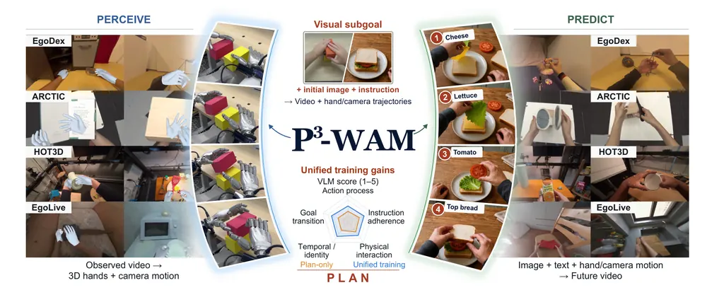
무슨 문제인가
에고센트릭 dexterous manipulation 연구는 관찰된 상호작용에서 3D 손·카메라 동작을 복원하는 reconstruction, 지정된 행동이 가져올 미래 영상을 예측하는 world model로 나뉨. 여기에 행동과 그 결과를 함께 생성하는 world action model까지 세 갈래로 나뉘어 따로 발전해 왔음. 이 세 능력은 서로 분리되거나 일부만 묶여서 학습됐고, 한 모델이 셋을 동시에 다루면서 서로를 보강하는 시도는 없었음. 저자들은 영아가 관찰·예측·계획을 행동과 그 결과에 대한 지식으로 연결해 배운다는 발달심리 연구를 근거로, 세 능력을 하나의 모델에서 함께 학습시키면 서로 도움이 될 것이라고 봄.
어떻게 푸나
P3(Perceive·Predict·Plan)-WAM은 사전학습된 video diffusion transformer인 Wan2.2-Fun-A14B-Control을 backbone으로 씀. 각 프레임의 행동을 양손 MANO(손 pose와 shape를 3D mesh로 바꾸는 parametric 모델) pose와 카메라 pose로 정의함. 그리고 별도로 사전학습한 frozen action autoencoder로 손·카메라 상태를 compact token으로 인코딩해 video token과 함께 입력함. video expert와 action expert가 base projection weight를 공유하면서 action expert만 LoRA(low-rank adaptation)로 조정되는 mixture-of-transformers 구조를 씀. 그리고 두 스트림이 서로의 key·value에 접근하는 bidirectional attention으로 정보를 교환함. 학습 중에는 영상과 행동의 visibility를 clip·시점별로 무작위로 바꿔서, 영상만 주고 행동을 맞히면 Perceive, 행동만 주고 미래 영상을 맞히면 Predict, 둘 다 가리고 초기 이미지·지시문·선택적 목표 이미지만 주면 Plan이 됨. 영상은 diffusion denoising으로 반복 생성되지만 행동은 한 번의 forward pass로 전체 궤적을 예측함. 긴 과제는 이미지 생성기로 만든 연속된 visual subgoal을 구간마다 목표로 줘서 여러 planning window로 나눠 수행함.
결과
- 같은 모델을 한 모드만으로 학습시킨 것과 세 모드를 함께 학습시킨 것을 비교함(5,000 step 학습 기준, EgoDex·ARCTIC·HOT3D·EgoLive 네 데이터셋 평균 기준). Perceive의 camera-space MPJPE(손 관절 위치 오차)가 113.537mm에서 86.898mm로, Predict의 FVD(생성 영상과 실제 영상의 feature 거리)가 1105.95에서 1009.84로 낮아짐.
- 앞 불릿과 달리 이 비교는 5,000 step 제한 없이 완전히 학습한 모델을, 손이 보이는 프레임만 집계하는 presence-aware MPJPE-p 지표로 잰 것임. 손 pose 추정 baseline인 HaMeR·Dyn-HaMR과 비교하면 네 데이터셋 평균 camera-space MPJPE-p가 이 방법 63.05mm, HaMeR 145.34mm, Dyn-HaMR 231.54mm로 가장 낮음.
- Predict를 자신의 backbone인 Wan2.2-Fun-Control과 비교하면 네 데이터셋 평균 PSNR이 19.020dB로 backbone의 15.927dB보다 높고 FVD는 621.73으로 backbone의 1217.56보다 낮음.
- Plan 생성 영상을 비디오 생성 baseline인 Wan2.2 I2V-A14B·Cosmos 3-Nano와 VLM judge(Qwen3.8-Max, 1~5점) 평가로 비교함. action process·instruction adherence·goal transition에서 가장 강한 baseline보다 각각 0.471점, 0.620점, 0.663점 높음.
한계
로봇 실험은 예시 두 개만 보여주고 성공률 같은 정량 수치는 본문에서 확인 불가함. 로봇 실행은 open-loop이라 실행 중 오류를 온라인으로 고치지 못함. monocular 영상에서 손의 전역 3D 위치 추정은 본질적으로 모호하며 depth나 tactile 센서가 없으면 한계가 있다고 저자가 직접 밝힘.
누리랩 연구와의 연결
- world model(Predict)과 action 생성(Plan)을 한 backbone에서 공동학습시켜 서로 성능을 끌어올리는 구조라서, world model과 VLA를 분리하지 않고 한 모델로 묶는 설계를 참고할 수 있음.
- visual subgoal로 long-horizon task를 구간별로 나눠 계획하는 방식은 skill chaining·long-horizon planning 연구에 적용 가능함.
2
80점
T2-z: Test-Time Optimization of Environment Latents for Robotic World Models
World Model
relevance 9/10
ICLR 양식 (추정)
Robotics (cs.RO)
로봇 world model에 학습 가능한 environment latent를 붙이고, 이 latent만 test-time 상호작용 한두 번으로 최적화해 마찰·질량처럼 눈에 보이지 않는 환경 요인에 적응시킴. 시뮬레이션 7개 설정과 실로봇 4개 과제를 합쳐 action success를 33.7%에서 73.0%로 올림.
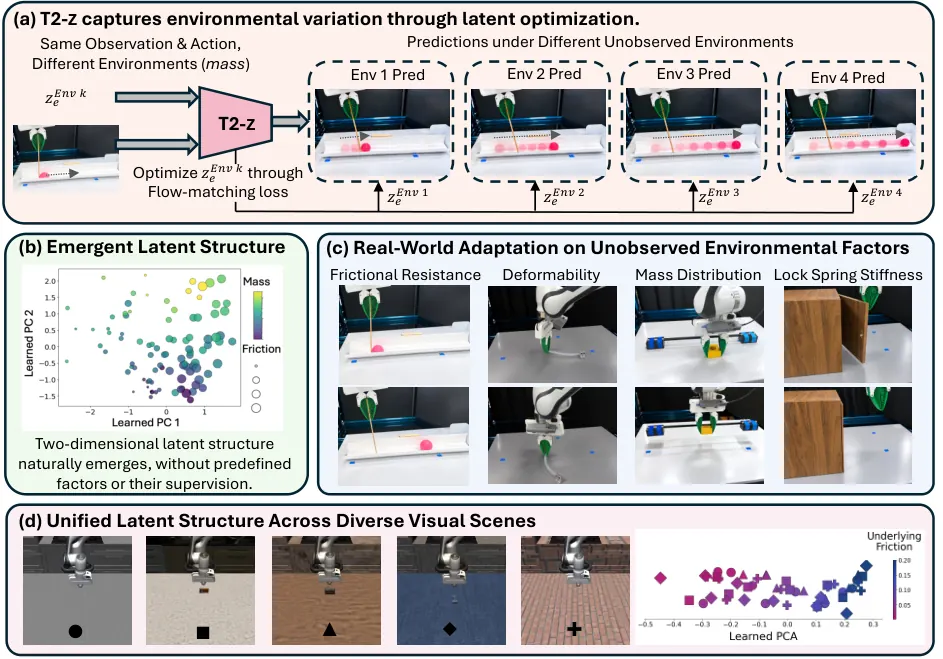
무슨 문제인가
로봇이 관측한 장면만으로는 같은 행동이 어떤 결과를 낳을지 알 수 없음. 마찰, 질량 분포, 사람이 정한 숨은 상호작용 규칙 같은 환경 요인은 겉보기 장면에 드러나지 않고 상호작용을 통해서만 드러남. RMA(Rapid Motor Adaptation) 계열 system identification 방법은 어떤 요인이 몇 개 있고 그 값이 무엇인지 미리 정해 두고, 상호작용 기록을 그 값으로 매핑하는 encoder를 학습함. 이 방식은 알려지지 않거나 여러 요인이 겹친 환경에는 확장하기 어려움. 기존 robotic world model 연구도 대부분 관측만으로 미래를 예측해, 같은 관측·행동이라도 환경이 다르면 결과가 달라지는 상황을 반영하지 못함.
어떻게 푸나
T2-z(test-time environment latent z 최적화)는 action-conditioned world model에 환경을 나타내는 학습 가능한 latent z_e를 추가함. 관측과 행동과 z_e를 같이 넣어 flow matching으로 미래 관측을 예측함. 학습은 두 단계를 번갈아 함: world-model 단계는 z_e를 고정하고 여러 환경의 궤적으로 world model 파라미터만 업데이트해 환경에 공통인 action-conditioned dynamics를 배움. environment-latent 단계는 world model을 고정하고 환경별 z_e만 prediction error로 업데이트해, 환경마다 다른 결과를 내는 요인을 latent에 담음. 두 단계 모두 같은 flow matching loss를 쓰고 이 과정을 수렴할 때까지 반복함. test time에는 world model을 완전히 고정한 채, 새 환경에서 무작위 행동으로 수집한 상호작용 궤적 한두 개만으로 새로 초기화한 z_e를 coarse-to-fine learning rate로 40 step 최적화함. 최적화된 z_e는 이후 관측하지 않은 다른 행동의 결과를 예측하는 데 그대로 재사용되어, world model을 그 환경에 맞춘 test-time simulator로 씀.
결과
- 시뮬레이션 7개 과제 평균에서 action success가 Standard World Model(환경 latent나 test-time 적응이 없는 world model) 37.9%에서 T2-z 74.2%로 오름.
- 가장 강한 baseline인 DINOv2 Context(상호작용 궤적을 32차원 context로 요약하는 amortized encoder)와 비교하면, 시뮬레이션 평균 action success는 DINOv2 Context 51.8%, T2-z 74.2%임. 실로봇 평균 action success는 DINOv2 Context 31.86%, T2-z 70.80%임.
- 실로봇 4개 과제 평균에서 action success가 26.47%에서 70.80%로 오르고, 과제 종료 시점 기준 tracked-state error는 38.24픽셀에서 16.66픽셀로 내려감. Stick Balance 과제만 보면 action success가 20.00%에서 83.33%로 오름.
- 질량과 마찰을 동시에 바꾸는 compounded 환경(Mass×Friction)에서 action success가 35.0%에서 69.7%로 오름. 학습된 latent를 PCA로 보면 요인 개수를 알려주지 않았는데도 2차원 구조가 자연히 나타나 각 축이 마찰과 질량에 대응함.
한계
실험은 시뮬레이션 7개 설정과 실로봇 4개 과제로 제한되어 있고, latent 차원이 실제 물리 요인에 대응한다는 해석은 PCA로 사후에 확인한 것일 뿐 모델이 요인 개수나 정체를 안다고 보장하지는 않음. world model 자체는 test time에 전혀 업데이트하지 않으므로, 학습 분포를 크게 벗어나 world model의 기본 예측 능력 자체가 틀리는 환경 변화는 latent 최적화만으로 보정하기 어려움.
누리랩 연구와의 연결
- 환경 요인을 사전 정의나 별도 encoder 없이 test-time optimization만으로 추론하는 구조임. failure detection·recovery나 test-time adaptation 연구에서 '미지 환경 조건을 소수 상호작용으로 추론'하는 모듈로 바로 참고할 수 있음.
- world model을 정책 학습이 아니라 환경 조건을 반영한 test-time simulator로 써서 candidate action을 비교하는 방식이라, action selection·counterfactual reasoning 연구와 바로 이어짐.
3
78점
Can World and Action Modeling Benefit Each Other under Unified Causal Training?
World Model
relevance 9/10
ByteDance 자체 양식
Computer Vision and Pattern Recognition (cs.CV)
world prediction과 action 생성을 한 causal transformer 안에서 같이 학습시켜 두 과제가 서로 돕는지 검증함. OneWM은 action이 future video attention을 보지 못하게 막은 baseline보다 실로봇 조작 3개 과제 평균 성공률을 48.9%에서 66.7%로 올림.
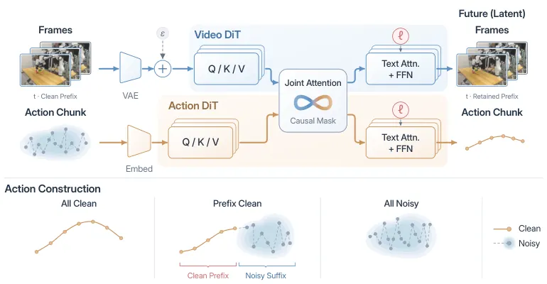
무슨 문제인가
world model과 action model을 하나로 묶는 연구들은 video 생성이 policy 학습을 돕는다는 것은 보였지만, action을 world prediction의 명시적 조건으로 깨끗하게 넣는 학습이 action 학습 자체에 도움이 되는지는 불분명했음. 기존 causal world-action model(WAM)들은 action을 생성 target으로 denoising하면서 video 쪽에 섞어 넣기 때문에, video가 보는 action은 noisy하거나 아예 action을 못 보게 막혀 있음. 두 방향을 섞어 같은 모델에서 검증한 선행 연구도 결론이 엇갈림: WorldVLA는 action과 video 생성을 같이 학습하면 둘 다 좋아진다고 보고했지만, Cosmos 3은 action 예측을 같이 학습하면 video 생성 품질이 오히려 조금 떨어진다고 보고함. 이 논문은 action을 world prediction의 clean 조건으로 명시적으로 쓰는 학습이 action 학습을 돕는지, 거꾸로 action 생성 학습이 action-conditioned world 예측을 돕는지를 같은 causal 구조 안에서 직접 검증함.
어떻게 푸나
OneWM은 video DiT(Diffusion Transformer)와 action DiT 두 expert를 causal joint attention으로 묶은 MoT(mixture-of-transformers) 구조임. video expert는 Wan2.2-TI2V-5B로 초기화하고, 관측 frame은 VAE로 인코딩해 그대로 조건으로 두고 미래 frame latent만 denoising함. action chunk는 길이 K의 action embedding으로 들어가고, 그중 앞쪽 r개는 clean 조건, 뒤쪽은 noisy denoising target임. batch마다 all-clean(r=K), partial-clean(0
결과
- RoboCasa365(복합 환경 mobile manipulation 과제 모음)에서 overall 성공률이, action이 video attention을 못 보게 막은 baseline의 28.32%에서 OneWM의 36.68%로 오름.
- LIBERO-Plus(LIBERO 과제에 배경·카메라·조명 등 변형을 준 generalization benchmark)에서 overall 성공률이 같은 baseline의 53.37%에서 OneWM의 59.27%로 오름.
- 실제 로봇 조작 3개 과제(블록 쌓기, 블록 끼우기, 아침식사 차리기) 평균 성공률이 48.9%에서 66.7%로 오름.
- 같은 MoT 구조에서 action 생성 학습 유무만 다른 world model 비교에서, RoboCasa365 PSNR이 action 학습 없는 모델의 22.22에서 OneWM의 25.21로 오름. LPIPS는 0.1564에서 0.1015로 낮아짐(둘 다 예측 품질 향상 방향).
한계
실로봇 실험은 조작 과제 3개뿐이고 로봇 종류·셋업은 본문에서 확인 불가. action 조건 비율을 clean 쪽으로 많이 늘리면 world 예측 지표는 비슷해도 policy 성능이 낮아짐. 특히 LIBERO-Plus 같은 분포 밖 generalization에서 비율을 30/45/25로 바꾸면 성공률이 38.01%로 낮아짐. FID·FVD 같은 분포 비교 지표에서는 action을 AdaLN으로 주입한 비교 모델이 OneWM보다 나은 경우가 있어, OneWM이 모든 world-prediction 지표에서 1위는 아님.
누리랩 연구와의 연결
- world model과 action model을 하나의 causal transformer로 묶어 서로 돕는지 직접 비교한 실험임. world model-VLA 결합 구조를 설계할 때 action-conditioning 방식(clean/noisy/masked)별 비교 기준으로 쓸 수 있음.
- action 생성과 action-conditioned world 예측을 번갈아 돌려 상상 속에서만 16 round(약 25.6초 분량 행동)를 이어가는 실험이 있음. 추가 학습 없이 상상으로 rollout을 늘리는 test-time 활용 사례라 test-time optimization·inference-time planning 연구에 참고할 수 있음.
4
78점
Learning to Think and Explore in 3D World
Embodied AI
relevance 8/10
ICLR 양식 (추정)
Computer Vision and Pattern Recognition (cs.CV)
VLM에 3D 장면 전체를 한 번에 주지 않고, 한 시점의 이미지만 주고 스스로 이동하며 답에 필요한 장면을 찾게 학습시킴. 6개 3D 벤치마크 평균 정확도가 base Qwen 모델보다 22.0퍼센트포인트 오르고 Gemini 3.6 Flash도 앞섬.
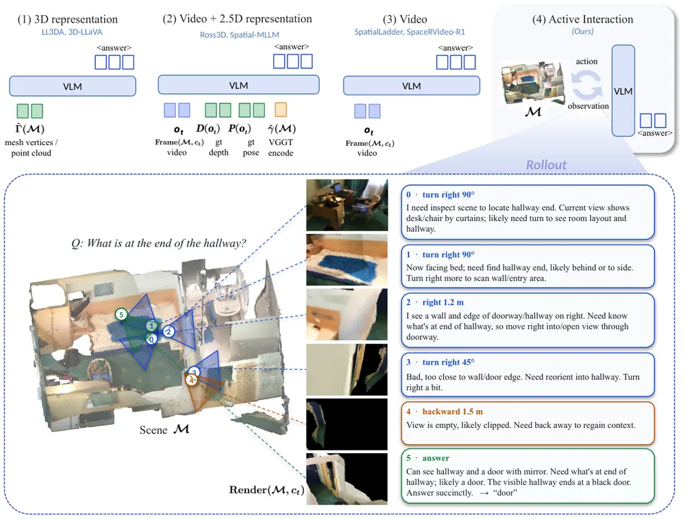
무슨 문제인가
기존 3D vision-language model은 RGB-D 스캔, multi-view 이미지, point cloud 같은 완전한 3D 입력을 미리 받아 질문에 답함. 그런데 실제로는 질문에 필요한 시야가 처음부터 다 안 보이는 경우가 많고, 이때는 무엇이 보이는지 추론하는 것뿐 아니라 어디로 움직여야 필요한 증거를 볼 수 있는지도 정해야 함. 기존 방법은 이 수집 과정 자체를 학습 대상으로 삼지 않고 입력을 고정된 것으로 취급함. 이 논문은 VLM이 3D 장면을 상호작용 가능한 환경으로 다루면서 탐색과 추론을 한 rollout 안에서 같이 학습할 수 있는지를 묻음.
어떻게 푸나
이 방법을 Act3D라 부름. 3D 장면은 VLM 바깥에 두고, 모델은 매 시점 한 장의 egocentric 렌더링 이미지만 받음. 모델은 forward/backward/left/right/up/down 이동과 turn_left/right/up/down 회전 같은 상대 좌표계 행동을 call하면 환경이 새 카메라 위치에서 다시 렌더링해 돌려줌. 모델은 추론(think)과 행동(action)을 반복하다가 답(answer)을 내며 전체 과정이 하나의 policy rollout임. 먼저 GPT-5.4가 만든 5,712개의 reason-act-observe 궤적으로 trajectory-supervised fine-tuning을 함. 이렇게 기본적인 상호작용 형식을 학습시킨 뒤, GRPO(Group Relative Policy Optimization) 기반 강화학습으로 같은 질문에서 시작한 여러 rollout을 비교하며 policy를 최적화함. 보상은 최종 답의 정확성(LLM judge와 exact match), 정답이면서 정답 대상 물체가 화면에 들어온 rollout에 더 주는 interaction 보상, 형식 오류 감점으로 구성됨. 중간 시점이나 행동 경로 자체에 대한 지도는 전혀 주지 않음.
결과
- 6개 벤치마크(ScanQA·SQA3D: 3D 장면 기반 질의응답, SPBench-SI/MV, MP3D, ARKitScenes: 실내 3D 스캔 벤치마크들)에서 평가함. 평균 정확도가 mixed-data 학습 기준 53.2%로, base Qwen3.5-9B의 31.2%보다 22.0퍼센트포인트 높음.
- 같은 interaction 환경에서 평가한 proprietary Gemini 3.6 Flash(52.2%)보다 1.0퍼센트포인트 높고, 평가된 모든 open-source 3D 방법보다 높으면서 입력 프레임 수는 50~70% 적음.
- RL은 SFT 초기화 대비 평균 정확도를 48.6%에서 53.2%로 올림(4.6퍼센트포인트). 특히 ARKitScenes는 14.1퍼센트포인트, SPBench-MV는 8.1퍼센트포인트 오름.
- ScanQA만으로 학습해도 학습에 쓰지 않은 나머지 5개 벤치마크 평균 정확도가 SFT 초기화 49.5%에서 51.6%로 오름(2.1퍼센트포인트). 탐색이 많이 필요한 질문군일수록 개선폭이 커서, 초기 시점만으로 답 가능한 질문군은 base 대비 0.6퍼센트포인트, 탐색이 가장 많이 필요한 질문군은 16.3퍼센트포인트 오름.
한계
평가에 쓰인 LLM judge(Qwen3-30B-A3B-Instruct)가 정답 판정을 담당하므로 judge의 오판이 수치에 섞일 수 있음. 환경의 카메라 이동은 충돌 검사가 없어 카메라가 장면 geometry를 그냥 통과할 수 있다고 저자가 직접 밝힘. 모든 실험이 ScanNet/MP3D/ARKitScenes 등 스캔된 실내 장면의 렌더링 기반 시뮬레이션이며 실제 로봇 실험은 없음. trajectory 데이터는 GPT-5.4가 생성한 것이라 교사 모델의 편향이 섞여 있을 수 있음.
누리랩 연구와의 연결
- active perception/NBV(next-best-view) 문제를 outcome-based RL만으로, 중간 시점 지도 없이 풀어낸 사례임. failure나 occlusion 상황에서 언제 추가 관측을 얻어야 하는지를 reward만으로 학습시킨 것이라 failure detection·recovery나 test-time exploration 연구에 참고할 수 있음.
- 3D 장면을 모델 내부 표현이 아니라 외부 상호작용 환경으로 분리한 구조는 world model 기반 policy나 VLA의 관측 수집 단계 설계에 적용해볼 수 있음.
5
76점
DeSpatial: The devil of Agentic Spatial Reasoning Lies in 3D Itself
Embodied AI
relevance 7/10
ICLR 양식 (추정)
Computer Vision and Pattern Recognition (cs.CV)
spatial agent가 틀리는 주된 원인은 segmentation·depth·instance fusion이 따로 돌아가며 생기는 3D 정보 불일치임을 oracle 실험으로 밝힘. 이를 하나의 통합 3D scene으로 정리하는 공유 perception tool DeSpatial을 제안해 VSI-Bench 여덟 개 과제 평균 성공률 69.22%를 받아 비교 agent 방법들보다 높음.
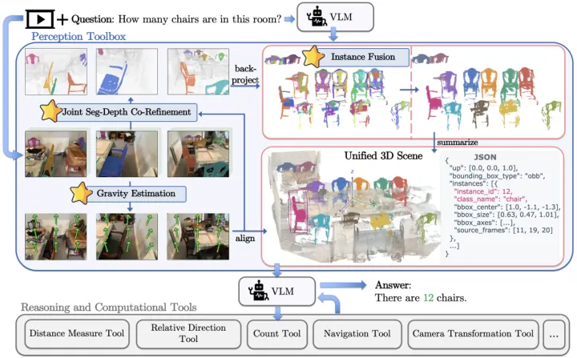
무슨 문제인가
spatial agent는 VLM에 3D reconstruction, segmentation, detection 같은 perception tool을 붙여 공간 질문에 답함. 그런데 각 tool이 독립적으로 예측한 mask, depth, 복원 결과는 서로 맞춰져 있지 않아서, 같은 물체의 관측이 여러 instance로 쪼개지거나 배경 point가 물체 point cloud에 섞여 들어감. 이런 불일치는 카운팅, 크기·거리 측정, 상대 방향 계산 같은 downstream 연산으로 그대로 전파됨. 저자들은 VSI-Bench 다섯 개 object-centric task(물체 개수, 절대 거리, 물체 크기, 상대 거리, 상대 방향)에서 실제 perception tool(SAM3+Pi3) 결과 대신 GT 3D bounding box를 주는 oracle 실험을 돌림. 같은 reasoning tool만 써도 4,030개 질문 평균 정확도가 50.38%에서 98.23%로 올라, 병목이 reasoning이 아니라 perception에 있음을 보임.
어떻게 푸나
DeSpatial은 spatial understanding을 perception과 reasoning으로 나누고, perception은 모든 task가 공유하는 하나의 tool이 맡음. 먼저 reconstruction model(VGGT, Pi3 등)로 dense geometry와 camera pose를 얻고 Depth Anything 3로 metric scale을 맞춤. 이어서 GeoCalib으로 프레임별 up 방향을 예측하고 서로 가장 많이 일치하는 방향을 골라 gravity-aligned 좌표계를 만듦. 다음으로 joint segmentation-depth co-refinement가 한 프레임 안에서 같은 물체의 중복 mask를 합침(겹침이 두 mask 중 더 작은 쪽 면적의 절반을 넘으면 union). 가려져서 나뉜 부분은 VLM judge가 같은 물체인지 판단해 합침. 그 뒤 confidence·depth-edge·3D outlier filter와 연결 요소 선택으로 배경이 섞여 들어간 point를 제거함. 마지막으로 cross-view instance fusion이 프레임을 넘나드는 관측을 하나의 instance로 묶음. voxel 점유 겹침(voxel overlap)으로 후보를 찾되, 한 프레임에서 서로 다른 물체로 관측된 것끼리는 간접적으로도 합치지 못하게 막음(same-frame exclusion). voxel이 겹치지 않는 관측은 VLM judge가 여러 시점의 외관과 3D 배치를 보고 같은 물체인지 판단해 합침. 이렇게 만들어진 unified scene(물체 ID, 클래스, oriented bounding box, 출처 프레임)을 VLM이 받음. VLM은 count, 거리/크기 측정, 상대 방향, 좌표 변환, 경로 계획 같은 reasoning/computation tool을 호출해 질문에 답함. agent backbone은 Qwen3-VL-8B-Instruct임.
결과
- VSI-Bench 여덟 개 과제 평균 성공률이 DeSpatial 69.22%로, 학습된 모델인 Cambrian-S(67.5%)와 training-free agent인 AlloSpatial(Gemini-3-Pro 백본, 61.0%)보다 높음.
- MindCube-Tiny(제한된 시점만으로 공간 관계를 추론하는 과제)에서 전체 정확도 87.19%로, 같은 비교군 중 가장 높았던 AlloSpatial(Gemini-3-Pro, 81.60%)보다 높음.
- ViewSpatial(카메라·사람 시점 전환 추론 과제)에서 평균 정확도 68.35%로, GPT-5.4 기반 S-Agent(60.00%)보다 높음.
- 504문항 VSI-Bench 부분집합 ablation에서 joint segmentation-depth co-refinement를 raw mask lifting(57.56%) 위에 단계별로 추가하면 68.83%까지 오름(11.27퍼센트포인트 상승). cross-view fusion에서는 same-frame exclusion까지 적용한 voxel overlap 방식이 66.82%로 AABB IoU(59.90%)·DBSCAN(61.37%)보다 높음. same-frame exclusion과 visual fragment association을 추가로 더하면 68.83%까지 오름.
한계
unified scene의 품질은 detection·reconstruction·metric scale·gravity 추정 품질에 그대로 의존함. component 선택은 관측되지 않은 표면을 복원하지 못하며, part 개수나 visual identity 판단이 틀리면 서로 다른 물체를 합치거나 유효한 geometry를 버릴 수 있음. oracle 실험은 object-centric 다섯 개 category와 VSI-Bench 자체의 불완전한 annotation에 한정된 결과라 perception이 모든 spatial task의 유일한 병목이라는 근거는 아님. 모든 평가가 비디오 벤치마크 기준이고 본문에 실제 로봇 실험은 없음.
누리랩 연구와의 연결
- perception 간 불일치(segmentation·depth 불일치, cross-view 중복 instance)를 명시적인 object identity 문제로 재정의하고 reasoning과 분리한 설계임. scene graph/semantic mapping, object-centric 3D representation 연구에 바로 적용 가능함.
- reasoning tool 구성보다 perception/scene representation 품질이 agent 성능을 더 크게 좌우한다는 oracle 결과임. failure detection이나 test-time optimization에서 어디에 투자해야 성능이 오르는지 판단하는 근거로 쓸 수 있음.
6
75점
EgoJEPA: Beyond Retargeting for Dexterous Manipulation from Egocentric Videos
Manipulation
relevance 9/10
ICLR 양식 (추정)
Robotics (cs.RO)
retargeting 없이 egocentric human video에서 embodiment-agnostic latent action을 배워 로봇에 옮기는 EgoJEPA를 제안함. 다섯 개 실세계 조작 과제와 세 개 embodiment에서 out-of-domain 평균 성공률을 retargeting pipeline의 65%에서 74%로 올리고 cross-embodiment 적응 비용을 743.2시간에서 392.7시간으로 줄임.
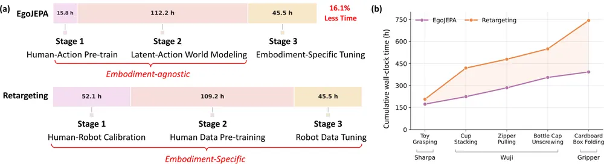
무슨 문제인가
egocentric human video는 로봇 teleoperation 없이 manipulation 지식을 얻을 수 있는 값싼 데이터원임. 기존 retargeting 방식은 사람 손목·손가락 pose를 사람이 정한 기하학적 규칙으로 로봇 embodiment별 action으로 바꾸는데, 이 매핑은 로봇 종류가 바뀔 때마다 다시 보정해야 함. 실제로 사람-로봇 calibration에만 52.1시간이 들어 전체 pipeline 시간의 25.2%를 차지함. 또 손 추정 오차가 그대로 로봇 action으로 전달되는데, retargeting pipeline은 bottle cap unscrewing 과제에서 손 위치에 σ=10mm 수준의 noise만 넣어도 성공률이 60%에서 30%로 낮아짐. 반대로 손 pose 없이 프레임 간 시각 변화만으로 latent action을 배우는 action-free 방식(LAPA 등)은 일반적인 시각 변화와 실제 손 동작을 구분하지 못해 로봇 제어로 옮기기 어려움.
어떻게 푸나
EgoJEPA는 3단계로 구성됨. Stage 1(human-action pre-training)에서는 인접 프레임 손 pose(keypoint 또는 MANO(사람 손 모양을 나타내는 parametric 모델) parameter) 차이를 사람 action으로 정의함. 이 action 차이와 현재 관측 영상을 조건으로 다음 시점 영상의 latent representation을 예측하는 JEPA 방식 목적함수로 action encoder와 predictor를 학습함. 이렇게 학습된 action embedding은 영상 변화에 실제로 영향을 준 손 동작만 담아서, 단순 시각 변화가 아니라 effect-aware한 latent action이 됨. Stage 2(latent-action world modeling)에서는 world-action model을 둠. 이 model은 Stage 1에서 얼린 action encoder가 만든 latent action과 미래 영상 token을, 언어 instruction 조건 하에 joint flow matching으로 함께 예측하도록 학습됨. target이 로봇 action이 아니라 사람 latent action이므로, 사람 데이터 사전학습과 로봇별 action 표현이 분리됨. Stage 3(embodiment-specific tuning)에서는 Stage 2 world-action model의 action branch 앞뒤에 2-layer MLP adapter를 끼움. 이 adapter가 로봇의 delta action을 공유 latent action 공간으로 매핑하고 다시 로봇 action 공간으로 되돌림. 로봇 demonstration의 RGB 영상과 언어 instruction을 입력받아 미래 영상과 로봇 delta action을 함께 출력함.
결과
- 다섯 과제(toy grasping, cup stacking, zipper pulling, bottle cap unscrewing, cardboard box folding)에서 평가함. embodiment는 Sharpa dexterous hand, Wuji dexterous hand, Xense Tac UMI gripper 세 종류임. 과제당 20회 시행한 out-of-domain 평균 성공률이 EgoJEPA 74%, retargeting pipeline 65%, DexWild 40%, LAPA 19%임. DexWild는 in-the-wild 영상과 로봇 demonstration을 함께 학습하는 egocentric human-video 선행 연구임.
- 손 pose에 넣은 위치 noise(σ=10mm) 조건에서 bottle cap unscrewing 성공률이 EgoJEPA는 70%에서 60%로 10퍼센트포인트만 낮아짐. 같은 조건에서 retargeting pipeline은 60%에서 30%로 30퍼센트포인트 낮아짐.
- robot demonstration을 10%만 써도 EgoJEPA는 bottle cap unscrewing에서 35% 성공률을 냄. 이는 demonstration 100%를 다 쓴, human pre-training 없는 robot-only 버전의 30%보다 높음.
- 세 embodiment에 걸친 누적 적응 시간이 retargeting pipeline 743.2시간에서 EgoJEPA 392.7시간으로 47.2% 줄어듦. Stage 1~2 사람 사전학습 모델을 그대로 재사용하고 Stage 3만 embodiment별로 다시 학습하기 때문임.
한계
실험은 다섯 과제, 세 embodiment로 모두 저자 소속 회사의 로봇(Sharpa, Wuji, Xense)에 한정됨. human pre-training 데이터는 상업적으로 구매한 비공개 데이터셋이라 재현이 어려움. 저자도 bottle cap unscrewing처럼 양손 협응과 정밀한 접촉이 필요한 과제에서는 성능이 더 낮다고 밝힘.
누리랩 연구와의 연결
- 사람 영상에서 배운 effect-aware latent action을 world model의 action target으로 씀. 사람 사전학습과 로봇별 action parameterization을 분리하는 이 구조는 VLA의 cross-embodiment 적응이나 test-time optimization에서 action representation을 어떻게 설계할지에 참고가 됨.
- 손 추정 noise를 인위적으로 주입해 perception 오차가 로봇 action으로 전달되는 정도를 측정함. 이 robustness 실험 방식은 failure detection·recovery 연구에서 perception noise가 policy 성능에 미치는 영향을 재는 데 가져다 쓸 수 있음.
7
75점
MAIA: Anticipating Interaction Anomalies in Contact-Rich Manipulation via Multimodal World Models
World Model
relevance 9/10
ICRA·IROS·RA-L 계열 양식 (추정)
Robotics (cs.RO)
VAF-WM이라는 vision-action-force world model을 이용해 접촉이 많은 manipulation에서 이상(anomaly)이 실제로 나타나기 전에 미리 예측하는 MAIA를 제안함. 실로봇 18개 과제에서 anomaly-aware action selection으로 성공률을 52.6%에서 61.5%로 올림.
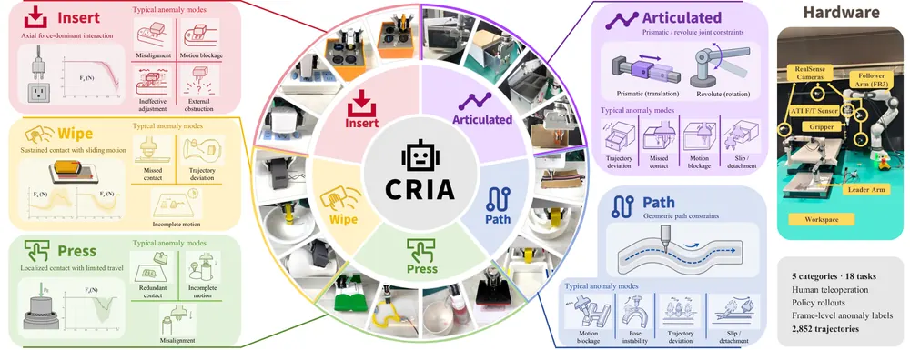
무슨 문제인가
기존 실행 모니터링 방법은 대부분 반응형이라 이상이 이미 관측된 뒤에야 감지하고, 개입할 시간이 부족함. 접촉이 많은 manipulation은 비슷한 action이라도 상호작용이 전개되는 양상에 따라 전혀 다른 물리적 결과로 이어져 이 문제가 더 심함. 시각 관측은 접촉력·마찰·저항 같은 물리적 상호작용을 간접적으로만 보여주고, planned action도 의도한 동작만 나타낼 뿐 환경이 실제로 어떻게 반응할지는 알려주지 않음. 그래서 시각과 action만으로는 비슷해 보이는 상태가 서로 다른 상호작용 결과로 이어지는 것을 구분하기 어려움.
어떻게 푸나
MAIA(Multimodal Anticipation of Interaction Anomalies)는 최근 시각 관측·force 이력·language task instruction·앞으로 K=50 step 동안의 planned action을 입력으로 받음. 이를 바탕으로 이상 발생 여부와 이상이 지속되는 시간 비율(temporal prevalence)을 출력함. Vision-Action-Force World Model(VAF-WM)은 GE-Base라는 사전학습된 video world model을 backbone으로 씀. 미래 action을 token으로 encoding하고 force history encoder로 뽑은 시간적 변화와 global contact 요약을 cross-attention으로 결합해 action-force context를 만듦. 이 context는 gated cross-attention adapter를 통해 GE-Base의 transformer block에 주입되어 미래 video latent와 미래 force 값을 함께 예측함. 예측된 video latent, interaction token, 예측 force를 받는 가벼운 anomaly head를 둠. 이 head가 temporal transformer로 window 단위 anomaly 확률, temporal prevalence, step 단위 anomaly를 추정함. 학습은 1단계 정상 실행 데이터로 VAF-WM 학습, 2단계 고정된 VAF-WM의 rollout으로 anomaly head 학습 순서로 진행됨. 3단계에서는 새 과제에 대해 video backbone은 고정하고 action-force pathway와 anomaly head만 소량 데이터로 추가 학습함.
결과
- window 단위 anomaly 판별 및 예견 성능(bACC, balanced accuracy)을 보면, MAIA가 seen task에서 0.765, novel task에서 0.710을 기록함. 가장 강한 baseline인 world model 기반 baseline WCM은 seen 0.702, novel 0.539에 그침. anticipation lead time(median)도 MAIA가 seen 28.0 step, novel 25.1 step으로 WCM의 17.7 step, 14.3 step보다 앞섬.
- 실제 Franka 로봇으로 18개 과제·5개 category 전체에서 과제당 30회씩 평가함. planned action 후보 8개 중 anomaly 확률이 가장 낮은 것을 고르는 anomaly-aware action selection이 π0.5의 전체 성공률을 52.6%에서 61.5%로 올림. policy 자체는 재학습하지 않음.
- force modality의 기여를 본 ablation에서, action만 쓰는 MAIA-VA 대비 force까지 쓰는 MAIA가 bACC를 wiping에서 0.604에서 0.743으로 올림(0.139 상승, seen task 기준). path-constrained manipulation에서는 0.669에서 0.763으로 올림(0.094 상승, seen task 기준).
- novel task에 대한 adaptation 없이도 MAIA는 bACC 0.615를 기록하고, 과제당 25개 trajectory로 action-force pathway와 anomaly head를 함께 추가 학습하면 bACC가 0.762로 오르며 거의 saturate함.
한계
예측 horizon이 K=50 step으로 고정돼 있고 history 길이도 고정돼 있어, 더 긴 시간에 걸쳐 전개되는 이상에는 한계가 있을 수 있음(저자가 직접 언급). 실험이 Franka FR3 로봇 한 대와 고정된 F/T 센서 구성에서만 이뤄져 다른 robot embodiment나 센서로의 일반화는 확인되지 않음. 이상 발생 여부를 미리 예견하는 데 초점을 두고, 원인 진단이나 자율 recovery로 이어지는 closed-loop control은 다루지 않고 future work로 남김.
누리랩 연구와의 연결
- failure detection/recovery 연구에서, 반응형 감지 대신 world model로 미래 force·visual 반응을 미리 예측해 이상을 조기 경보하는 구체적 구현 사례로 참고할 수 있음. 다만 이상 발생 여부만 예견하고 recovery 자체는 다루지 않아, recovery policy와 결합하는 다음 단계로 확장할 여지가 있음.
- test-time optimization 측면에서, policy를 재학습하지 않고 inference 시점에 여러 candidate action chunk 중 anomaly 확률이 낮은 것을 고르는 방식은 test-time action selection의 한 사례임.
8
75점
Whole-Body Dexterity
Manipulation
relevance 9/10
IEEE 학술지 계열 양식 (추정)
Robotics (cs.RO)
로봇 팔과 몸통을 접촉면 삼아 물체를 옮기는 whole-body dexterous manipulation을 mode-constrained re-grasping으로 학습시켜 실제 Unitree G1에 zero-shot 전이함. 실로봇 전체 과제 성공률이 90%로, 직접 motion retargeting(18%)과 generalist whole-body controller SONIC(4%)보다 크게 높음.
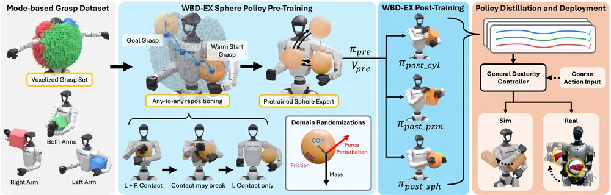
무슨 문제인가
현재 humanoid dexterous manipulation은 end-effector와 단순 grasp에 갇혀 있어서, 사람처럼 몸통이나 팔 안쪽으로 큰 물체를 받치고 옮기는 동작을 다루지 못함. 기존 whole-body 연구도 양팔 협응 조작이나 특정 자세에서의 지속적 팔 grasp처럼 좁은 설정에 한정됐고, 몸 어디든 접촉을 걸고 풀며 물체를 계속 옮기는 일반 능력으로 다룬 적이 없음. dexterous hand의 finger gaiting(손가락을 번갈아 떼고 다시 붙여 물체를 옮기는 재파지)에 견주면, humanoid는 팔이 두 개뿐이라 한쪽을 떼는 순간 다른 쪽이나 몸통이 물체를 받쳐야 해서 더 어려움.
어떻게 푸나
WBD(whole-body dexterity)는 세 단계로 동작함. 먼저 팔·다리·몸통 중 접촉시킬 link를 지정함. 물체 mesh의 signed distance field에 대해 force-closure residual(접촉점들의 net force·moment가 0에 가까워지게 하는 energy)을 최소화하는 energy-based optimization을 씀. 이 방식으로 안정적인 whole-body grasp 후보를 GPU 배치로 대량 생성함. 큰 torso를 하나의 접촉 타겟으로 두면 접촉이 한쪽에 몰리므로 torso를 하위 영역으로 쪼개 영역별로 따로 최적화함. 중력 4배 하중과 6방향 외란에서도 grasp을 유지하는 후보만 남겨 251만 개의 안정 grasp을 left-arm·both-arm·right-arm 세 grasp mode로 구축함. 다음으로 grasp을 2cm 해상도로 voxel화해 (voxel, mode) 쌍을 node로 하는 goal graph를 만들고, PPO로 물체를 한 node에서 다른 node로 계속 옮기는 물체별 WBD-EX expert를 학습함. 다리·몸통은 접촉 후보를 넓히는 데만 쓰고, 최종 grasp mode는 팔 기준 세 가지로 나눔. 목표는 물체 위치와 grasp mode만 지정하고 관절 자세나 물체 회전은 지정하지 않아, 몸통을 타고 구르고 미끄러지며 옮기는 동작을 유도함. 마지막으로 WBD-EX가 만든 궤적을 필터링해 conditional diffusion model과 inverse-dynamics network로 구성된 단일 controller로 distill함. 이 controller는 proprioception 기록과 물체의 bounding box·volume·sphericity로 만든 5차원 geometry descriptor만 입력받음. 특권적 물체 상태 없이 사람 teleoperator가 주는 거친 motion 명령을 gradient guidance로 보정해 안정적인 whole-body motion으로 바꿈.
결과
- 실로봇 세 가지 whole-body 과제(양쪽 어깨 접촉, underarm stow, 선반-운반-배치 장기 과제)를 합쳐 WBD controller가 50회 중 45회(90%) 성공함. 같은 조건에서 GMR(headline의 직접 motion retargeting과 같은 baseline) 직접 retargeting은 50회 중 9회(18%), generalist controller SONIC은 50회 중 2회(4%)에 그침.
- 한쪽 팔로 물체를 완전히 넘겨 겨드랑이에 끼우는 underarm stow에서 cardboard box round trip 성공이 WBD 10/10, GMR 1/10, SONIC 0/10임.
- 선반에서 꺼내 겨드랑이에 끼우고 걸으며 운반해 내려놓는 장기 과제(10회)에서 WBD는 stow 9/10, carry 9/10, un-stow 9/10, place 7/10을 기록함. GMR은 stow 3/10, carry 2/10, place 1/10이고 SONIC은 pick 이후 단계에서 0/10임.
- 시뮬레이션에서 teleoperator 명령에 noise를 섞어도 WBD는 clean expert 수준의 성능을 거의 회복함. noisy expert 대비 평균 time to failure가 학습에 쓴 물체에서 70%, held-out sphere에서 158%, held-out cube에서 71% 늘어남.
한계
WBD-EX 학습에 다리 grasp은 제외해, 선 자세·보행과 물체 조작을 함께 배우는 문제는 다루지 않음(저자도 향후 과제로 명시). 사용한 물체는 구·정육면체·직육면체·원통 15개 primitive로 지름·변 길이가 80~240mm 범위에 한정됨. 실로봇 실험은 8시간 이상 숙련한 teleoperator 한 명이 조작한 결과이며, WBD도 일부 trial에서 접촉을 놓쳐 물체를 떨어뜨림.
누리랩 연구와의 연결
- whole-body contact를 (voxel, grasp mode) 기반 goal graph로 추상화한 formulation은 contact-rich manipulation의 state 표현 방식임. object-centric 3D representation·scene graph 연구에 참고할 수 있음.
- 거친 teleoperation 명령을 diffusion model이 gradient guidance로 정제해 안정화하는 구조는 test-time steering·human-in-the-loop correction과 이어짐. 다만 failure detection/recovery나 world model과의 직접 연결은 약함.
9
74점
A Phenomenology of Neural Geometry in Vision-Language-Action Models
VLA
relevance 9/10
Robotics (cs.RO)
VLA policy 안에서 task 관련 변수가 단일 방향이 아니라 물리적 제약을 따라 다차원·곡면 geometry로 표현됨을 taxonomy로 보임. 손목 각도는 관절 한계 때문에 원이 아니라 346도 sweep에서 open arc(R²=0.77)로 나타나고, target까지 거리는 근거리·원거리용 두 개의 거의 직교하는 축으로 나뉨.
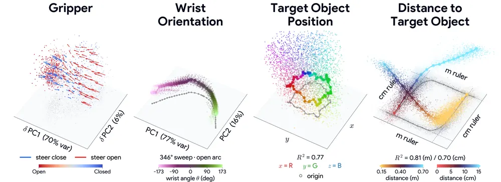
무슨 문제인가
VLA 내부 표현을 probe로 읽어내는 기존 연구는 변수가 activation에서 추출 가능한지(readability)만 확인하고, 그 값이 activation space에서 어떤 모양으로 나열되는지는 보지 않음. sparse autoencoder 계열은 개념을 activation space의 한 방향으로 놓는 linear representation hypothesis를 전제로 함. vision·language model에서는 이미 색상·위치 같은 개념이 다차원·곡선 형태로 표현되는 사례가 보고됨. 로봇 조작은 관절 한계, 대칭, 과제 단계처럼 물리적 제약이 뚜렷한 도메인인데 VLA가 이런 제약을 geometry에 반영하는지는 확인된 바 없었음. probe accuracy만으로는 그 개념을 실제로 steering해서 행동을 바꿀 수 있는지도 알 수 없음.
어떻게 푸나
MolmoBot(언어·이미지를 읽는 VLM과 flow matching으로 action chunk를 내는 action expert로 구성)을 대상으로 함. gripper state, end-effector position, target object position, distance to target 4개 변수를 고름. 여기에 contact, task phase, wrist orientation 3개를 더해 총 7개 control-relevant concept을 고름. 시뮬레이터(MolmoSpaces)에서 한 변수만 바꾸고 나머지를 고정하는 controlled sweep, natural rollout, teleport, linear/ridge/LDA probe, activation intervention을 조합함. 이를 통해 각 개념이 activation에서 그리는 경로(realized geometry)를 추정함. 개념 i만 움직일 때 activation의 기댓값이 그리는 궤적(치역)을 그 개념의 realized geometry로 정의함. 이를 찾은 뒤 실제로 그 geometry를 따라 steering했을 때 policy 행동이 의도대로 바뀌는지(action) 아니면 policy가 반대로 보정하는지(belief)를 구분함. 마지막으로 같은 분석을 π0.5, MolmoAct2 두 VLA에 real-world DROID(실제 로봇 teleoperation 데이터셋) 데이터로 반복해 geometry가 모델에 특정되지 않는지 확인함.
결과
- 손목 roll 관절(±172.8도)을 전범위로 sweep하면 action expert activation은 원이 아니라 open arc를 그림(346도 sweep, R²=0.77). 물리적으로 14도밖에 안 떨어진 양 끝이 activation space에서는 멀리 떨어짐.
- target까지 거리(scalar)는 근거리(<15cm)·원거리(15-70cm)용으로 거의 직교하는 두 방향에 나뉘어 표현됨. 범위를 clipping해 전체 상태로 학습한 meter ruler probe는 R²=0.81, centimeter ruler probe는 R²=0.70임. 근거리·원거리 상태만 따로 학습한 probe는 near R²=0.71, far R²=0.84임. far probe의 상위 32개 방향을 지우면 far R²는 0.84에서 거의 0으로 낮아지지만 near R²는 0.71로 유지되고, 반대 방향도 마찬가지임.
- contact는 LDA(선형판별분석) probe로 91.3% accuracy로 decode됨. object를 teleport해 일정과 어긋나게 접촉시켜도(이른 접촉, 유도된 미끄러짐) 같은 방향이 chance보다 유의하게 높게 decode됨.
- π0.5, MolmoAct2를 포함한 3개 VLA 모두 real-world DROID 데이터에서 같은 geometry가 재현됨. cross-model Procrustes similarity(좌표계를 맞춘 뒤 측정한 유사도)가 shuffled null(라벨을 무작위로 섞어 만든 기준값)보다 전부 높음. EE position decode R²는 0.78-0.92이고, distance의 near/far 두 축 구조도 세 모델 모두에서 다시 나타남.
한계
핵심 분석은 MolmoBot 시뮬레이션(MolmoSpaces)에 한정됨. real robot(DROID) 검증은 ground-truth가 없어 gripper, wrist orientation, EE position, distance to target(proxy) 4개 변수로만 제한됨. steering 개입은 wrist와 gripper 두 변수에서만 테스트했고, wrist geometry를 따라 edit해도 policy가 의도와 반대로 보정하는 belief edit로 나타나 geometry를 안다고 바로 제어가 되는 것은 아님을 저자도 명시함.
누리랩 연구와의 연결
- belief(인지 추정)와 action(명령)을 구분해 steering 효과가 갈린다는 결과는 test-time steering이나 failure detection/recovery 설계에서 어디를 건드려야 행동이 바뀌는지 판단하는 근거로 쓸 수 있음.
- EE position·target position이 거의 Euclidean 3D subspace로 표현되고, distance가 coarse/fine 두 ruler로 나뉘어 표현됨. 이 결과는 object-centric 3D representation·scene graph 연구에서 VLA 내부 표현을 설계·점검하는 참고 자료가 됨.
10
72점
Causal Analysis of Robot Foundation Models Enables Efficiency Gains
VLA
relevance 9/10
Robotics (cs.RO)
VLA 모델에서 vision-language backbone이 perception·instruction 정보를 action expert에 넘기는 경로를 activation patching으로 추적함. 그 결과 이 정보가 전체 layer 중 1~3개짜리 좁은 band(action-conditioning interface)에 집중됨을 확인함. 이 band만 남긴 MolmoBot은 3,000회 평가에서 전체 36개 layer를 쓰는 원본과 성공률 차이 없이(46.7% 대 46.9%) action chunk당 FLOPs를 33% 줄임.
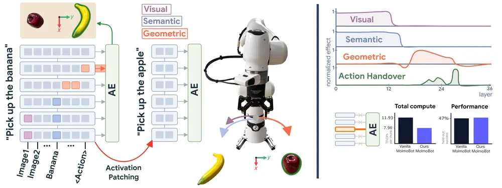
무슨 문제인가
VLA 모델은 vision-language backbone에 action expert를 붙여 만드는데, 보통 모든 backbone layer의 표현을 action expert에 동일한 비중으로 연결함. backbone이 perception과 instruction 정보를 action expert로 넘기는 경로가 실제로 어떻게 생겼는지는 알려지지 않음. 기존 VLA 경량화 연구는 representation 유사도나 benchmark 점수 같은 heuristic으로 어느 layer를 없앨지 정하는데, 그 선택이 왜 성능을 유지하는지에 대한 설명은 없음.
어떻게 푸나
저자들은 π0.5, MolmoAct2, MolmoBot 세 VLA 모델에 activation patching을 적용함. 같은 장면에서 물체 두 개의 좌우 위치를 바꾼 쌍을 만듦. donor episode의 특정 layer·token activation을 target episode에 주입한 뒤 로봇 손끝 trajectory가 donor 쪽으로 얼마나 이동하는지를 normalized trajectory shift E로 측정함. 먼저 action expert가 backbone의 어느 layer에서 conditioning 정보를 읽는지(interface patching)를 한 layer씩, 그리고 3개 layer 묶음으로 patch해 찾음. 이어서 backbone 내부에서 visual 변수(물체의 scene 내 위치), semantic 변수(지시된 물체가 무엇인지), geometric 변수(둘을 합쳐 정한 목표 위치) 세 가설을 세움. 장면·지시문을 서로 다르게 조합한 세 가지 비교(A: 다른 물체·같은 위치, B: 다른 물체·다른 위치, C: 같은 물체·다른 위치)로 어느 token·layer가 어느 변수를 담는지 구분함.
결과
- action expert는 전체 layer 중 1~3개짜리 좁은 band에서만 conditioning 정보를 읽음(action-conditioning interface). MolmoBot은 layer 24 하나만 patch해도 reference trajectory 대비 변화(E)가 50% 넘게 나오고, layer 24를 중심으로 한 3-layer window를 patch하면 70%에 가까워짐. 같은 패턴이 π0.5(단일 layer 35% 이상, 3-layer window 70% 이상)와 MolmoAct2(단일 layer 30% 미만, 3-layer window 40% 이상)에서도 나타남.
- backbone 내부에서는 early image token이 visual 변수(장면 배치)를 담음. early noun token은 semantic 변수(어느 물체인지)를, mid-to-late layer의 text token과 readout token은 geometric 변수(목표 위치)를 담음. 이런 패턴은 π0.5·MolmoAct2·MolmoBot 세 모델에서 공통으로 나옴.
- MolmoBot action expert conditioning을 layer 23-25 세 개로만 제한해 학습한 policy가 있음. 이 policy는 MolmoSpaces 시뮬레이션 3개 benchmark(Pick, Pick & Place, Next-To) 3,000 episode 평균 성공률 46.7%를 보임. 전체 36개 layer를 쓰는 원본 policy의 46.9%와 차이가 거의 없음. action chunk당 FLOPs는 11.93에서 7.96 TFLOPs로 33% 줄고, H100 측정 latency도 33% 줄며 batch 64 throughput은 44% 오름.
- 실로봇 π0.5에서는 layer 14-16으로 제한한 policy가 tabletop 과제 7종 100 trial 중 67회 성공함. 전체 18개 layer를 쓰는 원본 policy는 64회 성공으로 성공률 차이가 통계적으로 유의하지 않음(Fisher's exact test, p=0.77). 성공한 trial의 median 수행 시간은 34.9초에서 26.5초로 줄음.
한계
개입 실험은 두 물체가 모두 보이는 episode 시작 시점에서만 수행해서, 잡기 같은 이후 단계의 computation은 다루지 않음. counterfactual dataset은 13개 물체 쌍과 두 가지 좌우 배치(26개 장면)로 구성되어 범위가 좁음. π0.5는 action expert가 VLM이 이미 계산한 prefix key·value를 읽는 구조라 같은 방식의 layer 제한으로 얻는 FLOPs 감소가 5%에 그침.
누리랩 연구와의 연결
- activation patching으로 VLA 내부에서 visual·semantic·geometric 정보가 어느 layer·token에 위치하는지 causal하게 분리함. 이 방법은 world model이나 semantic representation 연구에서 VLA 내부 구조를 들여다보는 도구로 가져다 쓸 수 있음.
- 장면 배치를 바꾼 counterfactual pair로 high-level causal variable과 neural intervention을 대응시키는 설계를 씀. 이 설계는 counterfactual reasoning·failure diagnosis 연구에서 causal variable을 정의하고 검증하는 방식으로 참고할 수 있음.
11
72점
Do VLAs Really Follow Instructions? Diagnosing How-Level Instruction Following in Vision-Language-Action Models
VLA
relevance 9/10
ACL 계열 양식 (추정)
Computer Vision and Pattern Recognition (cs.CV)
VLA가 과제를 어떻게 수행하라는 How-level instruction(무엇을 할지가 아니라 어떻게 할지를 지정하는 지시)을 실제로 따르는지 offline correction과 online intervention 두 진단으로 확인함. 두 설정 모두에서 instruction을 추가하면 성공률이 오히려 낮아졌고, 매 step마다 지시를 주는 unified 모드는 일반 VLA 평균 성공률을 69.4%에서 56.5%로 낮춤.
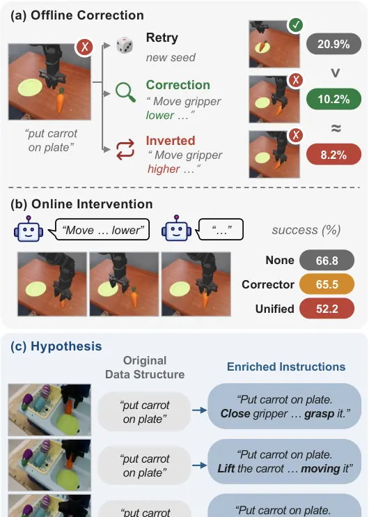
무슨 문제인가
기존 VLA 연구는 주로 What-level instruction, 즉 과제 자체를 바꿔 쓰거나 지우는 설정에서 robustness를 평가함. 반면 How-level instruction, 당근의 어느 끝을 잡을지나 어느 경로로 갈지처럼 이미 정해진 과제를 어떻게 수행할지 지정하는 지시는 거의 다뤄지지 않음. How-level 지시가 필요한 기존 시스템은 미리 정해진 명령어 집합으로 범위를 좁히거나, 언어 교정을 시각 기호나 별도 VLM이 만든 복구 행동으로 바꿔서 VLA가 free-form How-level instruction을 직접 이해하는지는 검증하지 않음. 교정이나 세부 지시를 받아 행동을 바로 조정하는 능력은 LLM과 VLM에서는 당연히 쓰이지만, VLA의 action 생성에서 실제로 작동하는지는 확인된 적이 없음.
어떻게 푸나
저자들은 VLA가 How-level instruction을 따르는지 두 가지 설정으로 진단함. offline correction에서는 실패한 에피소드를 Gemini 3.1 Pro에게 보여주고 한두 문장짜리 correction을 쓰게 함. 같은 initial state와 seed에서 세 조건으로 다시 실행해 rerun 성공률을 비교함. 조건은 correction 없이 새 seed로만 재시도하는 retry, correction을 과제 지시에 덧붙이는 correction, correction의 방향을 전부 반대로 뒤집은 inverted correction임. online intervention에서는 Qwen3-VL-8B를 System 2로 두고 실행을 모니터링함. 실패를 감지했을 때만 correction을 주는 corrector 모드와 매 monitoring step마다 sub-step instruction을 주는 unified 모드를 지시가 없는 경우와 비교함. 이어서 BridgeData V2(실제 로봇 teleoperation 데모 데이터셋)의 ECoT(embodied chain-of-thought) 주석으로 각 에피소드를 동작이 바뀌는 segment로 나눔. segment마다 GPT-5.4-mini로 How-level instruction을 새로 써서 43,771개 에피소드에 272,662개의 enriched instruction을 만들고 5개 VLA를 LoRA로 재학습함. 마지막으로 SIMPLER-IN이라는 벤치마크를 만들어, 시각 관측에는 없고 instruction에만 있는 조건을 성공 조건으로 둬서 instruction을 실제로 따라야만 성공하도록 설계함.
결과
- offline correction에서 일반 VLA(π0, InternVLA-M1, QwenGR00T) 전체의 실패 에피소드 복구율이 correction 추가 시 12.8%로 나타남. correction 없이 새 seed로 재시도만 한 retry는 28.2%, 방향을 뒤집은 inverted correction은 11.8%로 correction과 비슷하거나 더 높음.
- online intervention에서 일반 VLA 평균 성공률이 지시 없음 69.4%에서 corrector 68.2%로 소폭, unified 56.5%로는 12.9퍼센트포인트 크게 낮아짐. instruction following을 강화하도록 설계된 VLA(InstructVLA, LangForce)는 더 크게 낮아져 62.8%에서 unified 45.8%로 17.0퍼센트포인트 낮아짐.
- enriched instruction으로 재학습하면 correction이 지시한 방향으로 실제 trajectory가 움직이는 비율이 원래 instruction만 쓴 control의 52.7%에서 84.4%로 오름. 하지만 같은 online intervention에서 task 성공률 하락폭은 control의 13.1퍼센트포인트에서 2.0퍼센트포인트로 줄 뿐, 성공률 자체가 다시 오르지는 않음.
- SIMPLER-IN의 Path 과제(투명 장애물을 지정된 쪽으로 돌아가야 성공)는 public checkpoint·control·enriched model 세 그룹 모두 instruction-following rate가 0%임. 성공한 에피소드조차 전부 장애물 위로 지나감.
한계
WidowX 로봇과 SIMPLER 시뮬레이터, BridgeData V2 기반 short-horizon pick-and-place 과제 한 조합만 다룸. enriched model은 LoRA로 제한된 학습 budget 안에서만 학습해 full fine-tuning 결과는 다를 수 있음. offline correction의 correction 문장은 VLM이 생성한 것으로, 50개를 사람이 확인해 44개가 실패와 맞는다는 것만 검증함. Path 과제의 장애물은 관측에서 전혀 안 보이게 설계되어 있어, 실제 투명 물체보다 어려운 조건임.
누리랩 연구와의 연결
- online intervention 결과는 System 2 VLM이 실시간으로 실패를 감지해 교정을 줘도 VLA가 그 내용을 쓰지 못한다는 것을 보여줌. failure detection·recovery와 test-time correction 연구에서 VLA 쪽 한계로 바로 참고할 수 있음.
- SIMPLER-IN은 instruction 없이는 성공할 수 없게 만든 벤치마크라서, grasp point·경로처럼 How-level 정보를 다루는 VLA나 language feedback 기반 학습 연구의 평가 도구로 재사용 가능함.
12
72점
Multi-Dimensional Featurizers Yield Fine-Grained Steering and Data Shaping in Robot Foundation Models
VLA
relevance 9/10
Robotics (cs.RO)
VLA 모델 내부의 다차원 feature를 block-sparse featurizer(BSF)로 복원해 로봇이 보는 대상·잡는 위치를 세밀하게 조작하고, 학습 데이터에서 실패 복구 행동을 만든 token을 1.38%만 찾아 지움. 이 1.38% token을 masking해 재학습하면 gripper reopening time이 3.13초에서 12.93초로 늘어 복구 동작이 억제됨.
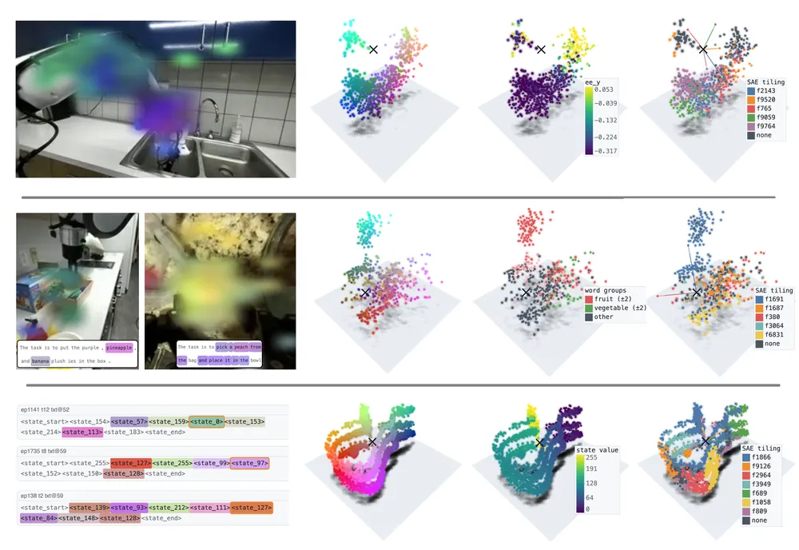
무슨 문제인가
VLA 내부 해석 연구는 대부분 sparse autoencoder(SAE)를 쓰는데, SAE는 각 feature가 1차원 방향 하나로 표현된다는 linear representation hypothesis를 가정함. 하지만 시점, 위치, 움직임 같은 연속적인 시각 요인은 여러 차원에 걸친 저차원 manifold를 이루기 때문에 1차원 가정이 잘 안 맞음. 그 결과 기존 steering 연구는 효과가 불일관하거나 약하고, pooling된 활성화나 적은 양의 corpus로 학습한 SAE라 feature discovery 자체가 제한적이었음. 로봇 정책을 안전하게 이해하고 바꾸려면 feature를 통한 세밀한 제어와, 특정 행동이 어느 학습 데이터에서 비롯됐는지 추적하는 수단이 필요함.
어떻게 푸나
block-sparse featurizer(BSF)는 SAE의 feature 하나를 1차원 스칼라 대신 b차원 block(저차원 subspace)으로 넓힌 구조임. MolmoAct2, π0.5, MolmoBot 같은 VLA의 vision·text·state token 활성화를 입력으로 받아, block 단위 sparse encoder가 k개 block만 골라 저차원 code로 압축하고 선형 decoder로 복원함. 기존보다 훨씬 큰 corpus(약 5200만 개의 unpooled token 활성화, 45,344개 episode)로 BSF와 SAE baseline을 같은 조건에서 학습함. 발견한 feature는 두 가지로 검증함. 첫째는 steering으로, 특정 block의 활성화를 다른 조건 값으로 바꿔 로봇이 인지하는 대상·위치, 선택하는 물체, 도달 지점을 바꾸고 open-loop·closed-loop로 평가함. 둘째는 data attribution으로, 실패 복구 중 활성화되는 feature(F1515)를 찾음. DROID(실제 로봇 teleoperation 데이터셋) 기반 π0.5 fine-tuning 데이터에서 이 feature가 threshold 넘게 활성화되는 16-step action chunk의 loss만 masking해 재학습하고 복구 행동이 사라지는지 봄.
결과
- semantic(물체 선택) closed-loop steering에서 BSF는 평균 2.3개 feature 수정으로 대상 물체 선택 100%, task 완료 93.3%(물체쌍 3개, 방향당 10회씩 총 60회)를 달성함. 같은 조건 SAE는 평균 2.5개 feature로 선택 88.3%, 완료 75.0%에 그침.
- geometric(물체 위치 지정) open-loop steering은 BSF block 1개로 activation patching 대비 99.7% 수준까지 action 변화를 재현함. 같은 조건 SAE는 98.2%.
- perceptual steering에서는 BSF가 16~20개 block으로 SAE의 36개 latent보다 적은 수정으로 효과를 냄. 다만 held-out 장면으로의 전이는 SAE(97.3%)가 BSF(84.6%)보다 높음.
- DROID 데이터에서 실패 복구 feature(F1515)가 활성화되는 token 1.38%만 masking해 π0.5-base를 재학습하면, 일부러 gripper를 닫은 뒤 다시 여는 reopening time이 3.13초에서 12.93초로 늘어 복구 동작이 억제됨. 같은 설정의 실제 pick-and-place 평가에서 task 성공률은 90%에서 100%로 유지되고 완료 시간도 12.13초에서 11.79초로 비슷함.
한계
steering 실험은 두 물체를 테이블 양 끝에 두는 제한된 시나리오고, closed-loop로 끝까지 검증한 것은 semantic steering뿐이며 visual·geometric steering은 open-loop에서만 확인함. BSF가 모든 지표에서 SAE를 능가하지는 않음: perceptual steering의 held-out 전이는 SAE가 더 좋음. failure recovery feature는 저자들이 직접 모은 소규모 rollout 데이터로 찾았고, data attribution 실험은 π0.5 한 모델에만 적용함.
누리랩 연구와의 연결
- failure recovery 행동을 학습 데이터의 특정 token(1.38%)까지 추적해 지울 수 있다는 결과는 failure detection/recovery 연구에서 recovery 행동이 어느 데이터에서 학습되는지 추적하는 도구로 바로 참고할 수 있음.
- VLA 내부 feature를 조작해 perception·semantic·geometric 단계별로 action을 바꾸는 steering은 test-time intervention과 steering module 설계 연구에 비교 대상이 됨.
13
72점
VeriVLA: Adaptive Test-Time Verification for Flow-Based VLAs with Latent World Models
World Model
relevance 9/10
Robotics (cs.RO)
flow 기반 VLA policy는 noise seed마다 다른 품질의 action chunk를 만들어도 test time에 품질을 가늠하지 못함. 이 문제를, 두 축 trigger로 위험한 순간만 골라 latent world model이 delta progress를 예측해 가장 나은 action chunk를 고르는 방식으로 풂. 실로봇 3개 과제 평균 completion score가 50.8%에서 65.5%로 오름.
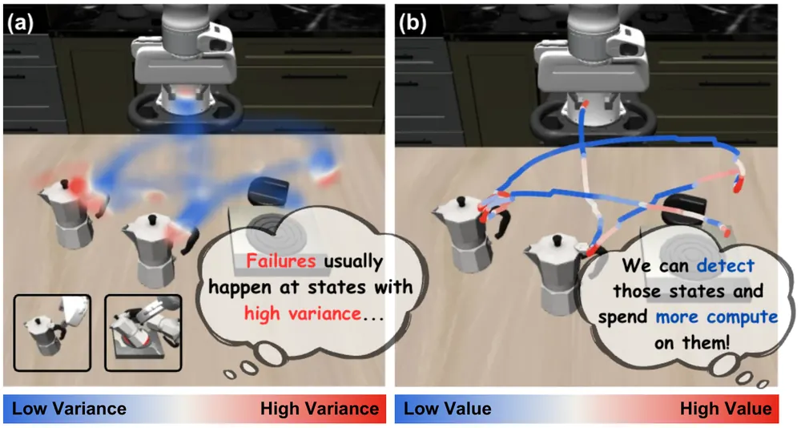
무슨 문제인가
flow matching 기반 VLA policy는 noise seed에 따라 같은 관측에서도 품질이 다른 action chunk를 생성함. 하지만 policy는 inference 시 품질 추정 없이 하나의 sample에 바로 commit하고, 정교한 조작 과제에서 나쁜 action chunk를 실행하면 과정이 되돌릴 수 없게 틀어져 실패로 이어짐. 기존 test-time verification은 VLM 기반 verifier가 world dynamics를 명시적으로 이해하지 못하는 문제가 있음. 또는 pixel 단위 world model이 이미지·영상을 생성한 뒤 점수를 매겨 지연이 크고 생성 품질이 검증 품질의 bottleneck이 되는 문제가 있음.
어떻게 푸나
VeriVLA는 두 단계로 동작함. 먼저 Two-Axis Trigger가 매 결정 시점에서 policy가 생성한 k=2개의 초기 action chunk로 chunk 내부의 시간축 변화량(temporal variation)과 chunk 사이의 cross-sample variance를 계산함. 각각을 사전에 수집한 기준 분포 대비 백분위로 바꿔 둘 중 하나라도 임계값을 넘으면 verification을 발동함(OR 규칙). 발동되면 policy가 추가 sample을 생성해 총 K=10개의 candidate action chunk를 만듦. JEPA(Joint-Embedding Predictive Architecture) 기반 latent world model verifier가 각 candidate를 입력받음. 이 verifier가 미래 latent state와 task progress 변화량(delta progress)을 autoregressive하게 예측함. verifier는 pretrain된 V-JEPA 2 visual encoder를 기반으로 함. 여기에 DROID 데이터셋(다양한 환경에서 수집한 대규모 로봇 teleoperation 데이터셋) 23,000개 trajectory로 pretrain한 action-conditioned predictor를 더함. task별 learnable query token으로 delta progress를 조건화하며, attention mask로 이 task 정보가 latent dynamics 예측에 새지 않게 막음. 최종적으로 M=5개 sub-chunk에 걸친 delta progress 합이 가장 큰 action chunk를 실행함.
결과
- 실로봇 3개 과제(pen insertion, pipetting, apple placement)에서 completion score 평균이 π0.5 기준 50.8%에서 VeriVLA 65.5%로 오름. 같은 조건에서 VLM 기반 verifier RoboMonkey는 56.0%, pixel 단위 world model verifier GPC-RANK는 52.8%에 그침.
- RoboTwin 2.0(양팔 조작 시뮬레이션 benchmark) clean setting 5개 과제 평균 성공률이 RoboTwin 2.0 기본 정책인 Hy-VLA 기준 66.4%에서 73.6%로 오름. policy와 verifier를 clean data로만 학습하고 randomized 환경에서 평가한 clean2random setting에서도 62.8%에서 69.6%로 오름.
- LIBERO(시뮬레이션 조작 과제 모음, 4개 suite 40개 과제)에서 π0.5 기준 평균 성공률이 96.9%에서 97.6%로 오름. 아직 성능이 포화되지 않은 LIBERO-10 suite에서는 92.4%에서 94.0%로 오름.
- latent state 예측 목표를 빼고 delta progress만 예측하게 만든 ablation에서는 completion score가 65.5%에서 55.2%로 낮아짐. DROID pretrain 없이 predictor를 무작위 초기화한 ablation은 59.5%로 낮아짐.
한계
pretrain된 VLA policy를 그대로 두고 action을 고르는 방식이라 verifier 성능은 policy가 만드는 candidate의 다양성과 품질에 의존함. 같은 random seed 기반 repeated sampling의 다양성은 아직 제한적이라고 저자가 밝힘. visual encoder를 고정해서 쓰기 때문에 조작 progress 추정에 맞춰 최적화되지 않아 미세한 object·contact 변화를 놓칠 수 있다고 저자가 밝힘. 실로봇 평가는 과제 3개, 과제당 50회 시행에 한정됨.
누리랩 연구와의 연결
- test-time verification과 latent world model을 결합해 failure로 이어질 action chunk를 실행 전에 걸러냄. 이 점에서 failure detection/recovery, test-time optimization 주제와 바로 연결됨.
- JEPA 기반 latent world model을 planning이 아니라 verifier로 쓰는 설계는 world model·robot memory 연구에서 pixel reconstruction 없는 대안 verifier로 참고할 수 있음.
14
68점
VLA-$Δ$: Learning Physical State Transition for Vision-Language-Action Models
VLA
relevance 9/10
Computer Vision and Pattern Recognition (cs.CV)
VLA가 observation을 action에 바로 매핑하며 물리적 상태 변화를 못 배우는 문제를, 현재-미래 사이 물리적 상태 전이를 explicit learning target으로 pretraining에 추가해 줄임. LIBERO 평균 성공률 98.4%로 비교 방법 중 가장 높고, 실로봇 실험에서 π0.5보다 5.5퍼센트포인트 높음.
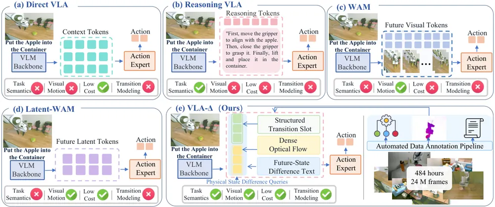
무슨 문제인가
대부분 VLA는 observation을 demonstrated action에 직접 매핑하도록 학습해서 중간 물리적 상태 변화에 대한 explicit supervision이 없음. 그래서 observation-action 대응 관계에 overfitting되기 쉽고, gripper를 목표물에 닿기 전에 닫거나 grasp 실패 후에도 계속 이동하는 등 물리적 dynamics를 이해하지 못한 실패가 나타남. ECoT(embodied chain-of-thought) 같은 reasoning VLA는 언어로 task plan을 추론하지만 물리적 상태가 어떻게 바뀌는지는 설명하지 않음. WAM(World Action Model) 계열은 미래 이미지나 latent를 예측해 밀도 높은 시각 정보를 주지만, 과제에 꼭 필요한 변화가 무엇인지는 명시하지 않고 추가 inference 비용도 듦.
어떻게 푸나
VLA-Δ는 GR00T N1 구조(Qwen3-VL-2B VLM backbone과 9-layer Diffusion Transformer action expert)를 기반으로 함. VLM backbone에 learnable Physical State Difference Query를 넣어, 현재 observation과 task instruction으로부터 물리적 상태 전이 representation을 뽑음. 이 representation은 세 가지 supervision으로 모양을 잡음. Structured Transition Slot은 task progress·gripper 상태·contact 등 9개 범주의 구조화된 변수를 직접 예측하게 함. Dense Optical Flow는 현재-다음 프레임 사이 2D 픽셀 이동을 예측해 시각적 motion detail을 보존하게 함. Future-State Difference Text는 task 진행·공간 이동·contact 변화·제약 조건을 자연어로 autoregressive 생성하게 함. 이 세 supervision은 pretraining에서만 action loss와 함께 쓰고, downstream fine-tuning에서는 action loss만 씀. Inference 때는 중간 target을 decoding하지 않고 추출한 representation을 바로 action expert에 넣어 flow matching으로 action chunk를 생성해서 추가 inference 비용이 없음. 이 supervision을 만들려고 DROID(실제 로봇 teleoperation 데이터셋), MolmoAct, RH20T(실제 로봇 teleoperation 데이터셋) 데이터를 모아 약 484시간, 2400만 프레임 규모 pretraining dataset을 만듦. 이 dataset은 자동 annotation pipeline으로 만듦. pipeline은 Qwen3.8로 keyframe 분할·semantic label 생성, SAM 3와 UniDepth V2로 bounding box·segmentation·depth 추출, MegaFlow로 optical flow 추출을 함.
결과
- LIBERO(시뮬레이션 조작 과제 모음, Spatial·Object·Goal·Long 4개 suite)의 평균 성공률이 98.4%로 비교 방법 중 가장 높음. 두 번째로 높은 ZR-0(비교에 쓴 또 다른 VLA baseline)는 97.8%, π0.5는 96.9%임.
- RoboTwin 2.0(양팔 조작 benchmark)의 Clean·Random 설정 평균 성공률이 각각 90.06%, 89.74%로 비교 방법 중 가장 높음. 가장 강한 baseline ZR-0(각각 88.70%, 87.98%) 대비 각각 1.36퍼센트포인트, 1.76퍼센트포인트 높음.
- AgileX PiPER 실로봇 5개 과제(과제당 40회, 총 200회 평가) 평균 성공률이 68.0%이고, π0.5(62.5%)보다 5.5퍼센트포인트 높음. 장애물 회피 과제 성공률은 42.5%로 비교 방법 중 가장 높음.
- LIBERO 40개 과제 ablation에서 physical state transition supervision 세 가지를 모두 뺀 baseline(query 없이 action loss만 사용)의 평균 성공률은 95.70%이고, VLA-Δ 전체 모델은 98.40%임.
한계
실험은 LIBERO·RoboTwin 2.0 시뮬레이션과 AgileX PiPER 로봇 한 대, 5개 과제(과제당 40 trial, 총 200 trial)의 실로봇 실험으로 한정됨. pretraining supervision 생성이 Qwen3.8, SAM 3, UniDepth V2, MegaFlow, GPT-5.6 등 여러 외부 모델의 annotation 품질에 기댐. downstream fine-tuning에서는 auxiliary supervision 없이 action loss만 쓰므로, pretraining 단계에서 배운 transition representation의 질에 최종 성능이 좌우됨.
누리랩 연구와의 연결
- 물리적 상태 변화를 explicit learning target으로 명시한 formulation임. world model로 미래 이미지·latent를 생성하지 않고도 상태 전이를 가르칠 수 있다는 점에서, world model 기반 action 예측과 비교할 대안으로 쓸 수 있음.
- Structured Transition Slot의 contact state·obstacle risk 같은 범주는 failure detection이나 안전 제약 reasoning에 쓰는 state representation 설계에 참고할 수 있음.
15
65점
Learning Intrinsic Dynamics in Latent World Models
World Model
relevance 8/10
ICLR 양식 (추정)
Artificial Intelligence (cs.AI)
forward prediction만으로 latent world model을 학습하면 서로 다른 action이 만든 서로 다른 결과도 같은 latent로 뭉개질 수 있음. 이 논문은 action을 다시 복원하는 inverse dynamics head(Concat IDM)의 손실을 추가해 이 문제를 줄이고, Push-T에서 외관 24가지 조건의 planning 성공률을 9.1%에서 77.2%로 올림.
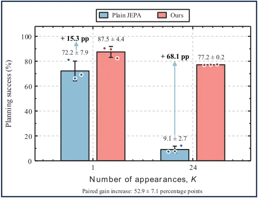
무슨 문제인가
action-conditioned latent world model은 encoder가 만든 latent 위에서 predictor가 다음 state를 예측하도록 학습됨. encoder와 predictor를 같이 학습하면 encoder는 predictor가 맞히기 쉬운 latent만 남기려 함. 그 결과 물체 색이나 배경, 조명처럼 물리적 전이와 무관한 외관 변화(external factor)와 실제 action이 만든 결과(intrinsic dynamics)가 섞여도 forward prediction loss는 낮게 유지될 수 있음. 같은 state에서 서로 다른 action이 서로 다른 결과를 냈는데 encoder가 둘을 같은 latent로 매핑하면, predictor는 그 공통 latent 하나만 맞히면 되므로 forward prediction 오차는 0이 될 수 있음. 이러면 latent space에서 서로 다른 action을 구분할 수 없게 되어 그 latent 위에서 하는 planning이 실패함.
어떻게 푸나
이 논문은 LeWorldModel(이 방법이 쓰는 action-conditioned latent world model 구조)을 그대로 쓰는 action-conditioned JEPA를 기본 world model로 씀. ViT-Tiny encoder가 observation을 latent z_t로 만들고 predictor가 과거 3 프레임의 latent와 action으로 다음 latent를 예측함. 여기에 action을 다시 맞히는 inverse dynamics head(IDM)를 추가하는데, 주 모델인 Concat IDM은 연속한 두 latent를 이어붙인 [z_t; z_{t+1}]을 입력으로 받아 그 사이 실행된 action a_t를 예측함. 이 inverse 손실(IDM loss)은 forward prediction 손실, SIGReg 정규화 손실(latent가 한 점으로 collapse하지 않게 막는 정규화 항)과 함께 더해져 encoder를 같이 업데이트시킴. offline trajectory에 이미 있는 action label을 그대로 씀. forward predictor는 이 inverse 손실로 직접 업데이트되지 않고, 테스트 시 쓰는 CEM(목표 latent와의 거리를 비용으로 candidate action을 반복 선별하는 planner)은 전혀 바뀌지 않음.
결과
- Push-T(2D에서 블록을 밀어 목표 위치와 자세로 옮기는 조작 과제, 시뮬레이션)에서 외관 24가지(K=24) 조건의 planning 성공률이 Plain JEPA 9.1%에서 Concat IDM 77.2%로 오름. 목표까지 정규화된 거리인 NFE도 1.353에서 0.652로 낮아짐.
- 외관 1가지(K=1)일 때는 성공률 격차가 72.2%에서 87.5%로 15.3퍼센트포인트에 그쳐, 외관 다양성이 커질수록 Concat IDM의 이득이 커짐. 물리적 trajectory pool을 고정한 채 K만 바꾼 비교에서 paired gain 증가분은 52.9±7.1퍼센트포인트임.
- action label과 transition의 대응을 끊는 개입 실험에서, encoder gradient를 막으면(stop-gradient) 성공률이 matched Concat IDM 75.5%에서 21.1%로 낮아짐. action label을 뒤섞으면(shuffled targets) 9.4%로 더 낮아져, 올바르게 짝지어진 action 지도학습이 이득의 원인임을 보임.
- frozen encoder에 action decoding probe를 붙이면 [z_t; z_{t+1}]에서 action을 복원하는 test R2가 Concat IDM 0.799, Plain JEPA 0.251임. 예측 latent cost와 실제 latent cost의 순위 일치도(Spearman 상관, rollout horizon 5)도 Concat IDM 0.395~0.411, Plain JEPA 0.153~0.170으로 더 높음.
한계
전부 시뮬레이션 2D 벤치마크(Push-T, TwoRoom, Cube, Reacher: 2D 조작·탐색 벤치마크들)만 쓰고 실제 로봇 실험은 하지 않음. 학습 때 본 적 없는 외관(disjoint palette)에서는 성공률이 Plain JEPA 4.2%, Concat IDM 13.4%로 둘 다 낮아 미지 외관으로의 전이는 풀리지 않음. action-outcome이 학습된 모델 안에서 실제로 뭉개지는지는 직접 측정하지 않았다고 저자도 밝힘.
누리랩 연구와의 연결
- world model encoder가 외관 변화에 흔들리지 않고 action-consequence 구분을 유지하도록 만드는 inductive bias 연구임. 시각 변동이 큰 환경에서 robot world model을 설계할 때 inverse dynamics 보조 손실을 넣을지 판단하는 근거로 쓸 수 있음.
- CEM 기반 latent planning에서 예측 latent cost와 실제 latent cost의 순위 일치도로 표현이 planning에 적합한지 따로 진단하는 방식임. world model이 믿을 만한지 가늠하는 failure detection 진단 도구로 참고할 수 있음.
오늘의 흐름
- world model과 action generation을 한 backbone에 묶기: world prediction과 action 생성을 분리하지 않고 같은 transformer에서 공동학습시켜 서로 돕는지 직접 검증하는 논문이 두 편 나옴. Perceive, Predict, and Plan, OneWM.
- VLA 내부를 causal하게 들여다보는 해석 연구: activation patching·block-sparse feature·기하학적 taxonomy로 VLA backbone이 action expert에 무엇을 어떻게 넘기는지 세 편이 각각 다른 도구로 분석함. Causal Analysis of Robot Foundation Models, Multi-Dimensional Featurizers, A Phenomenology of Neural Geometry in VLA.
- test-time에 world model로 action을 검증·적응시키기: 정책을 재학습하지 않고 inference 시점에 environment latent를 최적화하는 논문이 있음. candidate action chunk 중 world model이 예견한 결과가 나은 것만 고르는 논문도 있고, world model로 접촉 이상을 미리 예측해 action을 고르는 논문도 있음. T2-z, VeriVLA, MAIA.
- 3D 공간 추론을 perception 도구로 재설계: VLM agent의 공간 추론 실패를 reasoning이 아니라 3D perception 쪽 문제로 보고, 통합 scene을 만들거나 능동적으로 관측을 모으게 함. DeSpatial, Learning to Think and Explore in 3D World.
- VLA 기본 가정을 다시 점검하는 formulation 다양화: 물리적 상태 전이를 explicit target으로 추가하는 논문이 있음. latent world model에 inverse dynamics를 더하는 논문, instruction을 얼마나 실제로 따르는지 진단하는 논문도 각기 다른 지점에서 VLA 학습 방식을 재점검함. VLA-Δ, Learning Intrinsic Dynamics in Latent World Models, Do VLAs Really Follow Instructions?.
해볼 만한 연구
backbone→action expert 정보 전달 band와 failure-recovery feature가 겹치는지 확인
- 질문: VLA에서 failure-recovery 행동을 만드는 feature가 action expert가 backbone 정보를 읽는 좁은 layer band(action-conditioning interface) 안에 있는지 확인함. 아니면 그 밖의 다른 경로로 작동하는지도 봄.
- 첫 실험: 같은 공개 체크포인트(π0.5·MolmoBot)에 activation patching으로 찾은 band와 block-sparse featurizer로 찾은 recovery feature의 layer 위치를 겹쳐 비교함.
- 가장 가까운 연구: Causal Analysis of Robot Foundation Models는 band를 찾고 Multi-Dimensional Featurizers는 feature를 찾지만, 두 논문 모두 둘을 겹쳐 보지 않음.
환경 latent 적응과 action 검증을 한 test-time 루프로 결합
- 질문: world model의 environment latent를 몇 번의 상호작용으로 먼저 적응시킨 뒤 그 world model로 candidate action을 검증하면 실로봇 completion score가 더 오르는지. latent 적응 없이 검증만 할 때와 비교함.
- 첫 실험: 같은 world model backbone에 environment latent 최적화 단계를 먼저 붙이고, 그 뒤에 trigger 기반 verifier를 돌려 성능을 비교함.
- 가장 가까운 연구: T2-z는 환경 조건에만 적응하고 action을 직접 검증하지 않고, VeriVLA는 환경 latent를 고정한 채 action만 검증함.
통합 3D scene을 능동 탐색의 관측 대상으로 제공
- 질문: 매 step마다 단일 이미지만 보고 다시 탐색하는 능동 탐색 agent에 누적된 통합 3D scene을 관측으로 더해 주면, 같은 탐색 step 수로 정확도가 더 오르는지.
- 첫 실험: 능동 탐색 학습 루프의 관측에 통합 3D scene 표현을 추가해 3D 공간 추론 벤치마크에서 정확도와 필요한 step 수를 비교함.
- 가장 가까운 연구: Learning to Think and Explore in 3D World는 매 시점 단일 이미지만 보고 장면을 누적하지 않고, DeSpatial은 능동 탐색 없이 고정 시점들만 합침.
꼭 읽을 논문
- Perceive, Predict, and Plan: world model과 action 생성을 한 backbone에 묶어 공동학습시키면 둘 다 좋아진다는 것을 가장 직접적으로 보임.
- T2-z: world model을 정책 학습이 아니라 test-time simulator로 써서 action success를 33.7%에서 73.0%로 올린 test-time optimization 사례임.
- OneWM: world prediction과 action 생성이 같은 transformer에서 서로 돕는지 action을 world model에 넣는 방식별로 비교한 ablation이 탄탄함.
- Learning to Think and Explore in 3D World: active perception/NBV를 중간 시점 지도 없이 outcome-based RL만으로 학습시킨 사례임.
- DeSpatial: spatial agent 실패 원인이 reasoning이 아니라 3D perception 불일치라는 oracle 실험 결과가 명확함.
전체 1차 스크리닝 결과 (627편, 점수순) 펼치기
| # | 제목 | 점수 | 🤖 | 분야 | 한 줄 근거 |
|---|---|---|---|---|---|
| 1 | Perceive, Predict, and Plan: a Unified World Action Model for Egocentric Dexterous Manipulation | 80 | 10 | Manipulation | 손 동작·카메라 궤적을 복원하는 Perceive, 행동 조건부 미래 영상을 생성하는 Predict, 행동과 그 결과를 함께 생성하는 Plan을 하나의 video diffusion transformer로 통합한 egocentric dexterous manipulation용 world action model임. world model과 VLA를 한 틀에서 공동학습시킨 점에서 랩의 핵심 주제(VLA·world model·manipulation)를 정면으로 다룸 |
| 2 | Can World and Action Modeling Benefit Each Other under Unified Causal Training? | 78 | 9 | World Model | world modeling과 action modeling을 하나의 causal 구조로 같이 학습시켜 서로 돕는지 검증함. LIBERO, LIBERO-Plus, RoboCasa365와 실로봇 실험까지 포함해 world model-VLA 결합이라는 랩 핵심 주제를 직접 다룸 |
| 3 | VLA-$Δ$: Learning Physical State Transition for Vision-Language-Action Models | 72 | 9 | VLA | VLA 학습에 현재-미래 상태 간 물리적 변화량을 명시적 supervision으로 추가하는 프레임워크(VLA-Δ)임. LIBERO·RoboTwin과 실로봇 실험에서 π0.5를 능가해 world model 없이도 물리적 상태 전이를 가르치는 VLA 핵심 주제를 다룸 |
| 4 | Causal Analysis of Robot Foundation Models Enables Efficiency Gains | 70 | 9 | VLA | pi0.5·MolmoAct2·MolmoBot 세 VLA 모델에서 이미지·지시문이 action으로 이어지는 action-conditioning interface를 activation patching으로 찾아내고, 이를 근거로 action expert의 conditioning layer를 36개 중 3개로 줄여 추론 FLOPs를 최대 33% 줄이면서 실로봇 성능을 유지함 |
| 5 | Learning to Think and Explore in 3D World | 70 | 8 | Embodied AI | VLM이 멀티뷰 입력 없이 한 장씩 보며 3D 공간에서 능동적으로 이동·재관측하도록 outcome-based RL로 학습시킴. 어디서 언제 추가 관측을 얻을지를 스스로 배운다는 점에서 active perception/NBV 우선 주제와 직접 연결됨 |
| 6 | DeSpatial: The devil of Agentic Spatial Reasoning Lies in 3D Itself | 70 | 7 | Embodied AI | spatial agent의 실패 원인이 reasoning이 아니라 3D perception(분절·깊이 불일치) 자체임을 oracle 실험으로 보이고, perception을 통합·정합하는 모듈을 붙여 VSI-Bench 등에서 성능을 크게 올림. embodied spatial reasoning의 bottleneck을 재정의한 점에서 새로운 problem formulation에 해당함 |
| 7 | Do VLAs Really Follow Instructions? Diagnosing How-Level Instruction Following in Vision-Language-Action Models | 68 | 9 | VLA | VLA가 과제를 어떻게 수행하라는 How-level instruction을 실제로 따르는지 진단하고, segment 단위 instruction으로 학습해도 out-of-distribution 지시에는 반응이 늘지 않음을 보임. VLA의 instruction following 한계를 드러낸 진단 연구로 랩 핵심 주제임 |
| 8 | Multi-Dimensional Featurizers Yield Fine-Grained Steering and Data Shaping in Robot Foundation Models | 68 | 9 | VLA | block-sparse featurizer로 VLA 내부의 다차원 feature(지각·언어·고유감각·실패 복구 등)를 찾아 causal steering과 data attribution에 씀. failure recovery 행동이 학습 데이터의 1.4% 미만 token에서 비롯됨을 보여 failure detection/recovery 연구에 직접 참고할 만함 |
| 9 | A Phenomenology of Neural Geometry in Vision-Language-Action Models | 68 | 9 | VLA | VLA policy 내부에서 task 관련 개념(손목 각도, 목표까지 거리 등)이 단순 선형 readout이 아니라 다차원 곡면 형태로 실현됨을 보이고 이 geometry를 따라 steering해 행동을 바꿈. 두 개의 실로봇 데이터에서도 같은 geometry가 재현됨 |
| 10 | EgoJEPA: Beyond Retargeting for Dexterous Manipulation from Egocentric Videos | 68 | 9 | Manipulation | egocentric human video로부터 embodiment-agnostic latent action을 JEPA 방식 world model로 배우고 가벼운 action adapter로 로봇에 옮기는 3단계 프레임워크이며, retargeting 없이 5개 실세계 조작 과제·3개 embodiment에서 성공률을 65%에서 74%로 올리고 cross-embodiment 적응 비용을 47% 줄임 |
| 11 | MAIA: Anticipating Interaction Anomalies in Contact-Rich Manipulation via Multimodal World Models | 68 | 9 | World Model | vision-action-force world model로 접촉 이상을 사전에 예측하는 방법임. 새 실세계 데이터셋 CRIA와 함께 조기 경보(평균 25-28 step)와 성공률 향상(52.6%에서 61.5%로)을 보임. |
| 12 | VeriVLA: Adaptive Test-Time Verification for Flow-Based VLAs with Latent World Models | 68 | 9 | World Model | 두 샘플의 분산으로 critical state를 감지하고 JEPA 기반 latent world model로 action chunk를 순위화하는 training-free verifier임. pen insertion 등 실로봇 3과제에서 50.8%에서 65.5%로 성공률 향상을 보임. |
| 13 | Whole-Body Dexterity | 68 | 9 | Manipulation | 로봇의 몸 전체를 접촉면으로 써서 대형 물체를 잡고 옮기는 whole-body manipulation 프레임워크임. sim-to-real distillation으로 실제 G1에서 90% 성공률(직접 retargeting 18%, generalist 4% 대비)을 보임. |
| 14 | T2-z: Test-Time Optimization of Environment Latents for Robotic World Models | 68 | 9 | World Model | world model에 학습 가능한 environment latent를 더해 test-time에 소수의 상호작용만으로 미지 환경에 적응시키는 방법임. action 성공률을 33.7%에서 73.0%로 올리고 emergent한 구조적 latent를 확인함. |
| 15 | Learning Intrinsic Dynamics in Latent World Models | 68 | 8 | World Model | action predictability를 encoder 학습에 추가해 시각적 변주가 있어도 world model이 intrinsic dynamics를 보존하게 만들고 Push-T 조작 과제에서 성공률을 9.1%에서 77.2%로 끌어올린 연구로 object-centric 표현·world model·manipulation 우선 주제에 직접 들어맞음 |
| 16 | When to Ask for Help: A Decision-Theoretic Account and Measurement Standard for Slow-Module Scheduling in Dual-System Vision-Language-Action Models | 65 | 9 | VLA | dual-system VLA에서 느린 모듈을 언제 호출할지를 Value of Intervention이라는 하나의 양으로 환원하는 결정이론을 세우고, LIBERO에서 14개 설정으로 실증함. test-time 추론 비용 배분 문제를 다룬다는 점에서 test-time optimization 주제와 직접 연결됨 |
| 17 | CarryOn: A Dual-Loop Harness for Personalized and Reliable Robot Assistance | 65 | 9 | VLA | frozen VLA에 personalization과 안전 감독·복구를 더하는 dual-loop harness임. 위험 위반율을 52.6%에서 6.1%로, 복구 성공률을 13%에서 80%로 올리는 실로봇·시뮬레이션 증거가 강함. |
| 18 | What Should Robot Policies Learn to Predict? Rethinking Supervision Targets in Vision-Language-Action Learning | 65 | 9 | VLA | VLA 학습에서 action 외 latent-action·future-vision 보조 목표에 학습 예산을 얼마나 배분해야 하는지를 체계적으로 묻는 연구임. sample-level router로 LIBERO·CALVIN·실로봇에서 action-only 대비 우위를 보이는 formulation 기여가 큼. |
| 19 | GeoState: Learning View-Decoupled Geometry States for 3D World Modeling | 65 | 7 | World Model | geometry foundation model feature를 뷰에 독립적인 scene state로 분리해 카메라 움직임과 장면 변화를 따로 모델링하는 3D world model임. 3D representation과 world model을 결합한 랩 핵심 주제이며 Waymo/KITTI/nuScenes로 일반화를 보임 |
| 20 | Dexterity from Supervised Play | 62 | 9 | World Model | 소량의 인간 play demonstration으로 BC play policy를 만들고, 이를 자율적으로 돌려 world model 학습 데이터를 모으는 파이프라인임. RL보다 490배 적은 상호작용으로 비슷한 성공률을 달성함. |
| 21 | TGrasp6D: Task-Informed Vision-Language Priors and Pose Refinement enable Zero-Shot Task-Oriented 6DoF Grasping | 62 | 8 | Manipulation | RGB-D 한 장과 task 설명만으로 vision-language prior를 이용해 zero-shot task-oriented 6DoF grasp를 생성하고 TaskGrasp에서 94%(baseline 74%)를 달성, 실로봇(Franka)에도 배포함 |
| 22 | MoCaP: Mobile Code-as-Policies for Zero-Shot Mobile Manipulation from Passive Human Videos | 62 | 8 | Manipulation | 사람이 물체를 다루기 전에 준비하는 동작을 passive human video에서 추출해 mobile manipulation의 navigation과 reachable pose 탐색에 활용하는 code-as-policy 프레임워크이며, 실로봇에서 navigation 성공률을 70%에서 100%로, 불리한 시작 위치의 pose 탐색 성공률을 0%에서 100%로 올림 |
| 23 | KODA: Kinematics--Observation Data Alignment for Humanoid Learning from Human Egocentric Demonstration | 62 | 8 | VLA | egocentric RGB 시연을 canonical trajectory로 변환해 임의의 whole-body controller에 맞는 로봇-view 관측과 action label을 생성하는 방법이며, Unitree G1에서 사람 시연만 있던 조건의 성공률을 45~46퍼센트포인트 끌어올림 |
| 24 | LTM: Latent Transition Based In-Context Memory for Vision-Language-Action Models | 62 | 8 | VLA | 연속 관측 사이의 latent transition으로 history를 저장하는 robot memory를 pi_0.5에 적용함. 실로봇 counting 성공률이 11%에서 82%로 오르는 등 강한 실험적 증거를 보임. |
| 25 | Policy-Aligned Predictive Verification for Adaptive VLA Action-Chunk Execution | 62 | 8 | VLA | action chunk를 끝까지 실행하기 전에 VLA의 내부 표현에서 생존 가능성을 평가하는 policy-aligned verifier임. future prediction을 생성이 아니라 신뢰도 평가에 쓰는 관점 전환이 있고 pi_0·pi_0.5·실로봇으로 검증함. |
| 26 | Training-Free Target-Aware Refinement of 3D Gaussian Language Map | 62 | 8 | 3D Vision | distill된 3D Gaussian language map을 training-free하게 타깃 영역만 보정하는 방법임. closed-form coefficient로 하이퍼파라미터가 없고 실제 legged robot 언어 목표 내비게이션까지 보임. |
| 27 | CoDA: Co-Evolution of Data Engines and Action Policies | 62 | 8 | Manipulation | 시뮬레이션 데이터 엔진과 정책이 실패 진단을 공유 메모리로 주고받으며 co-evolve하는 프레임워크임. LIBERO-Pro에서 위치 교란 성공률을 25%에서 84%로, 지시 교란을 1%에서 76%로 끌어올리는 강한 증거를 보임. |
| 28 | Spark-0: Scaling Spatially Aligned Tactile Pretraining for Robot Dexterous Manipulation | 60 | 8 | Manipulation | 촉각 글러브로 얻은 접촉맵과 3D teacher로 비전 토큰을 지도하고, 별도 촉각 경로로 action expert를 조건화하는 VTLA 모델임. 1000시간 HumanTouch 데이터로 사전학습해 vision-only 성능도 52.5%에서 71.7%로 끌어올림. |
| 29 | Evo-DexBench: Benchmarking Generalization across Related Tasks for Dexterous Manipulation | 58 | 8 | Manipulation | 관련 task 간 지식 전이와 단순 기억을 구분하는 Core-Gen 원칙으로 설계된 dexterous manipulation 일반화 벤치마크이며, VR teleoperation으로 123-taxel Shadow Hand 데이터 1248개를 모아 기존 방법의 한계(평균 성공률 38.5%)를 드러냄 |
| 30 | TS-WAM: Temporal Latent Actions and World-Action Coupling for Vision-Language Robot Control | 58 | 8 | World Model | latent action과 world-action coupling을 결합한 teacher-student 구조로 action-free 비디오까지 학습에 활용함. 별도 pretraining 단계 없이 end-to-end로 LIBERO·실로봇에서 일반화를 보임. |
| 31 | Mem4Act: Learning Effective Latent Memory for Long-Horizon Robotic Manipulation | 58 | 8 | Manipulation | 장기 과제를 위한 고정크기 latent memory를 multi-granularity temporal aggregation과 QA·DINO 복원 감독으로 학습함. RoboMME·RMBench와 실로봇 4과제에서 memory-dependent 제어 SOTA를 보임. |
| 32 | Value as Memory: Online Value-Guided Post-training for General Robot Policies | 58 | 8 | RL | 최근 value 예측을 task-progress memory로 쓰는 value caching과 온라인 RL을 결합한 post-training 프레임워크임. 변형 가능 물체·접촉 많은 장기과제에서 오프라인 대비 큰 성공률 개선을 보임. |
| 33 | An Agentic Framework for Proactive Robots with Procedural Assistance Memory | 58 | 7 | Embodied AI | VLM이 일상 루틴 패턴을 기억하는 Procedural Assistance Memory를 읽어 선제적 보조를 결정하는 agentic 구조임. robot memory와 VLA를 결합했고 5일 실환경 평가로 점진적 개선을 보임. |
| 34 | MOSS: Mode-Oriented Source Shaping for Robot Flow Matching Policies | 58 | 7 | Manipulation | flow matching 정책에서 mode를 source noise의 위치로 명시적으로 선택하게 하는 방법임. source-space의 mode별 구조를 이론·실험으로 보이고 real robot에서 guidance rate를 크게 높임. |
| 35 | SIEVE: Overcoming Topological Obstruction in Equivariant Self-Supervised Learning | 58 | 4 | 3D Vision | SE(3)-equivariant point cloud self-supervised learning의 topological collapse를 이론적으로 규명하고 새 masking으로 해결함. object-centric 3D representation에 참고할 만함 |
| 36 | Anvil: Scaling Embodied Spatial Intelligence through Knowledge Recirculation | 56 | 6 | Embodied AI | localization·관계·행동 표현을 아우르는 11가지 Ground-Relation-Act 형태로 데이터를 생성·학습·평가하는 embodied spatial intelligence 프레임워크임. 데이터 플라이휠과 distillation 중심이라 embodied spatial reasoning 우선 주제와 연결되나 조작 실험은 없음 |
| 37 | Persistent Profile-Guided Reset-Free Recovery Improves Final Gait Selection after Irreversible Leg Damage | 55 | 7 | RL | 다리 손상 로봇의 reset-free gait 복구에서 반복 실행에 걸친 불확실성 추정으로 최종 gait를 고르는 방법이며 failure detection·recovery 주제와 직접 연결됨 |
| 38 | SOMA: Stack-of-Objects Manipulation using a Quadruped Robot | 55 | 7 | Manipulation | 매니퓰레이터 없는 사족 로봇이 base-height를 조절하며 3차원으로 물체 stack을 non-prehensile하게 미는 hierarchical RL이며 sim-to-real로 실제 Unitree Go1에서 검증함 |
| 39 | Manifold Generative Annealing for Contact Constraint-aware Impedance Control with Reinforcement Learning Prior | 55 | 7 | Manipulation | 강화학습으로 학습한 policy를 구조화된 proposal로 재배열하고 model-based rollout으로 정제하는 motion-impedance 최적화(MGA)이며 peg insertion·surface scanning·humanoid pushing에서 contact 조건 변화에도 안전한 impedance control을 보임 |
| 40 | X-Fly: Learning to Reach and Stop in Full-Chunk Aerial Vision-Language Navigation | 55 | 7 | Navigation | full-chunk 비행을 위한 recovery DAgger와 flow-GRPO 단계적 학습으로 aerial VLN의 stop 실패 문제를 해결함. baseline 대비 성공률이 크게 오름(16%에서 74%로). |
| 41 | SPEAR: Selective Preference Elicitation with Adaptive Rewards for VLM-Guided Robotic Manipulation | 55 | 7 | RL | VLM을 효율적 preference oracle로 바꾸는 distinguishability-aware 쿼리 선택과 adaptive reward transition임. Mobile ALOHA 실로봇 온라인 학습으로 검증했고 abstention 감소와 성공률 향상을 보임. |
| 42 | Cross-Embodiment Causal Transfer from Human Videos to Robot Manipulation | 55 | 7 | Manipulation | causal beam 관점으로 인간 비디오에서 어떤 contextual 정보를 로봇으로 옮겨야 하는지 선택하는 프레임워크임. causal reasoning을 cross-embodiment subtask transfer에 적용한 formulation이 새로움. |
| 43 | CQDC-Warp: GPU-Accelerated Differentiable Quasi-Dynamic Simulation for Contact-Rich Manipulation | 55 | 6 | Manipulation | GPU 가속 differentiable quasi-dynamic 시뮬레이터로 contact-rich manipulation trajectory를 생성함. 속도와 성공률 모두 기존 대비 크게 개선했고 bimanual·whole-body까지 확장함. |
| 44 | CF-Splat: Closed-Form Triangle Splatting with Mesh Priors | 55 | 6 | 3D Vision | 메시 위에서 색을 per-vertex SH 계수의 선형 최소자승 문제로 풀어 iterative 최적화 없이 복원하는 closed-form splatting 방법임. 3DGS보다 27-378배 빠르면서 비슷하거나 더 나은 novel-view synthesis 품질을 보임. |
| 45 | When Reality Outpaces Cognition: A New Scaling Principle for Reliable Intelligence | 55 | 5 | RL | 환경 변화 속도가 인지 속도를 앞지르는 상황에서 RL 에이전트의 신뢰성 한계를 새로 정식화하고 Co4 아키텍처로 분산 유지 성능을 높인 연구로 실로봇은 아니지만 real-time 환경변화에 대한 RL의 일반화라는 점에서 로봇 제어와 관련성이 있음 |
| 46 | Constrained Multi-Agent Reinforcement Learning in Imagination | 55 | 5 | World Model | 멀티에이전트 world model로 cost를 예측해 제약 정책 업데이트 대부분을 상상 속에서 수행한 CA-MAMBA로 SMAC·MAMuJoCo에서 샘플효율을 크게 높였고 world model 기반 imagination RL이라는 우선 주제와 직접 연결됨 |
| 47 | Orbia: Do Generated Videos Form a Consistent 3D World? | 55 | 4 | World Model | 생성 비디오가 일관된 3D world를 유지하는지 체계적으로 평가하는 벤치마크(Orbia)임. world model 평가 틀로는 참고할 만하나 새 방법론은 아님 |
| 48 | Noise-Space Reward Alignment for Few-Step Generative Models | 55 | 4 | Generative Models | few-step generative model을 noise space에서 reward-align하는 방법으로, diffusion/flow 기반 robot action policy의 reward alignment에 참고할 만함 |
| 49 | BridgeAfford: Bridging Query-Target Gap for Generalizable 3D Affordance Grounding | 54 | 7 | Manipulation | 상호작용 의도를 나타내는 query와 3D 물체의 실제 기능 영역 간 semantic gap을 줄여 unseen object에도 일반화되는 3D affordance grounding 기법임. 로봇 조작의 affordance 인식과 직접 연결되나 실로봇 검증은 없음 |
| 50 | GRASE: Geometry-native Real-to-sim Agentic Scene Modeling from Video | 54 | 6 | 3D Vision | 비디오에서 캡처한 장면을 agent가 렌더링 결과와 반복 대조하며 교정하는 real-to-sim 파이프라인(GRASE)임. 시뮬레이션용 3D scene 구축이라는 점에서 로봇 real-to-sim 연구와 연결되나 로봇 실험 자체는 없음 |
| 51 | Memory as Weights: Internalizing Long-Term History for Streaming Videos | 54 | 6 | VLA | 스트리밍 비디오의 과거 맥락을 context가 아닌 LoRA weight로 내재화하는 메모리 프레임워크(MaLoW)임. VLA에도 적용해 Simpler WidowX 성공률을 9.3%p 올려 robot memory 우선 주제와 직접 연결됨 |
| 52 | DK-VLM: Geometry as Position for Spatial Reasoning in Vision-Language Models | 54 | 6 | Embodied AI | 시점 변화에 따른 3D 위치 정보를 fused reconstruction feature 대신 attention의 position 항으로 직접 주입하는 Dual-Kernel Attention(DK-VLM)임. VSI-Bench 등에서 최고 성능을 보여 embodied spatial reasoning 우선 주제와 직접 연결됨 |
| 53 | Uni-PNP: Unified Prehensile and Non-prehensile Policy Learning for Generalizable Object Pose Reaching | 52 | 7 | Manipulation | prehensile·non-prehensile 조작을 하나의 정책으로 통합 학습함. contact dynamics pretraining과 2단계 RL curriculum으로 unseen object에서도 기존 baseline보다 높은 성공률을 보임. |
| 54 | DemoStream: Batched Task-and-Motion-Plan Optimization for Automated Learning from Demonstration | 52 | 7 | RL | GPU 가속 TAMP로 batched sampling해 demonstration 품질을 최적화하고 behavior cloning 성공률을 올리는 방법임. TAMP의 안전성 보장을 이용해 시간당 66개의 실로봇 demo를 수집함. |
| 55 | REKI: Registering Knowledge in VLAs | 52 | 7 | VLA | 공개 데이터만으로 학습한 2.4B VLA로 성능-크기 Pareto frontier를 개선하고, register token으로 저비용 메모리를 더함. LIBERO-Plus·RoboTwin·RoboCasa365에서 비슷한 크기 모델 중 최고 성능을 보임. |
| 56 | LICOA: Learning Instruction-Conditioned Optical Actions for Mobile Spatial Augmented Reality | 50 | 6 | Embodied AI | 투사광을 embodied action으로 다루는 새 문제 설정임. 전용 시뮬레이션 코퍼스와 실환경 평가로 검증했고 scratch 대비 큰 성공률 향상을 보임. |
| 57 | Multi-Teacher On-Policy Distillation for Flow-Based Vision-Language-Action Models | 50 | 6 | VLA | 여러 전문화된 flow 기반 VLA를 하나의 student로 합치는 2단계 on-policy distillation임. LIBERO-40·CALVIN·Meta-World에서 꾸준한 성공률 향상을 보임. |
| 58 | Diffeomorphic Hidden-State Steering: Improving Imitation Learning Policy Robustness through Expert Hidden-State Geometry | 50 | 6 | Manipulation | expert hidden-state의 저분산 방향을 더 강하게 누르는 diffeomorphic 좌표 변환으로 test-time에 정책을 steering함. 추가 재학습 없이 관측 노이즈 강건성을 올렸으나 시뮬레이션 4개 과제로 한정됨. |
| 59 | Plans Are Not Executions: Adapting Frozen World-Model Planners to Controller-Induced Execution Shift | 50 | 6 | World Model | frozen world-model planner를 하류 controller별 실행 특성에 맞춰 보정하는 ExecutionBridge를 제안함. planned trajectory와 executed trajectory의 의미적 차이를 짚은 통찰이 있으나 자율주행(NAVSIM) 중심임. |
| 60 | Asking Smarter Questions: Targeted Active Preference Learning for Underspecified Rewards | 50 | 6 | RL | 불충분하게 학습된 reward feature를 겨냥해 preference 질문을 던지는 능동적 reward learning 방법임. CoRL 2026 채택이며 저query 영역에서 큰 개선과 사용자 연구 증거가 있음. |
| 61 | Gen4P: Video Generators are 4D Perceivers | 50 | 5 | World Model | 사전학습된 비디오 생성모델을 반복적 denoising 없이 한 번의 encoder pass로 4D(깊이·포인트트래킹·카메라 포즈)를 예측하는 feed-forward perceiver로 재활용한 연구임. video generative prior를 3D/4D perception에 재사용한다는 점에서 world model-3D representation 연결고리로 참고할 만함 |
| 62 | Race to Recovery: Designing Advanced Safety Systems for Autonomous Driving via Learning Autonomous Racing | 50 | 5 | RL | 레이싱으로 드리프트를 배운 policy를 loss-of-control 복구로 전이해 실차·실제 1:10 축소 차량에서 기존 컨트롤러보다 복구율을 크게 높인 연구이며 failure recovery 개념과 연결되나 조작 로봇은 아님 |
| 63 | LEAP: Gradient Flow Augmented Lagrangian Trajectory Optimization for Contact Constrained Robots | 50 | 5 | Manipulation | contact-rich 로봇 trajectory optimization을 augmented Lagrangian의 primal-dual gradient flow로 풀어, 32관절 휴머노이드까지 포함한 5개 플랫폼에서 기존 solver(Crocoddyl, Aligator)가 실패하는 문제도 모두 풀어내고 실로봇에서 검증함 |
| 64 | CoWorld Reasoner: Agentic Multimodal Reasoning with the Evolving Video World Model-Driven Harness | 50 | 5 | World Model | video world model을 도구로 노출해 VLM이 상상할지·어떤 연산을 쓸지 스스로 결정하게 만든 agentic 프레임워크로 world model과 embodied spatial reasoning 우선 주제에 닿지만 실험은 VQA 스타일 벤치마크임 |
| 65 | Scene Reconstruction Using Ubiquitous Wireless Signals via Diffusion Posterior Inference Over physics-Grounded Representations | 50 | 3 | 3D Vision | 무선 채널 신호로 건물 구조를 posterior inference 하는 방법으로, 비카메라 센서 기반 3D scene reconstruction의 한 사례임 |
| 66 | SALTO: Solver-Anchored Lifted Transfer Operators for Nonlinear Event Inference | 50 | 1 | LG | Koopman 기반 lifted adjoint로 비선형 시스템의 finite-amplitude source를 추론하는 새 틀이나 로봇 적용은 없음 |
| 67 | LIBERO-PeRM: Benchmarking Personalized Robotic Manipulation | 48 | 7 | Manipulation | 과제 완수와 선호 충족을 분리해 측정하는 personalized manipulation 벤치마크임. 새로운 문제 설정을 제시하지만 기여의 중심이 benchmark 자체임. |
| 68 | Fast-VLA: You Only Think Once for Robot Manipulation | 48 | 6 | VLA | VLM을 episode당 한 번만 호출해 고정 task memory로 쓰고 action만 빠르게 반복하는 구조임. task context와 robot state의 변화 속도 차이를 이용한 구조적 통찰이 있으나 efficiency 중심 기여임. |
| 69 | Trajectory-based Diffusion from One-shot Human Video for Generalizable Manipulation | 48 | 6 | Manipulation | 1회 인간 비디오에서 6D pose로 object trajectory를 뽑아 도메인·embodiment에 무관한 중간표현으로 쓰는 방법임. RLBench와 실로봇 cross-embodiment 전이를 보였으나 teleop 없는 데이터 생성이 핵심 기여임. |
| 70 | VP-EVT: Active Visibility Preservation for Embodied Visual Tracking | 48 | 6 | Embodied AI | target visibility 자체를 모션 제어의 명시적 목표로 다루는 embodied visual tracking 프레임워크임. 가림 위험을 예측해 선제적으로 시점을 조정하고 OccEVT-Bench에서 큰 성공률 향상을 보임. |
| 71 | Compliant GMT: Making General Motion Tracking Compliant via Residual Reference Adaptation | 48 | 6 | RL | pretrained general motion tracker에 proprioception 기반 residual adapter를 더해 whole-body compliance를 주는 방법임. 일반성과 순응성의 trade-off를 완화했고 실제 G1 로봇에서 검증함. |
| 72 | Progress Reward Model for Reinforcement Learning via Large Language Models | 48 | 5 | RL | LLM의 세계 지식으로 세분화된 progress function을 만들어 potential-based reward로 바꾼 PRM4RL이 로봇 제어 과제에서 기존 LLM 플래닝·보상법보다 우수한 성능을 보여 robot RL reward shaping에 직접 참고됨 |
| 73 | Anchor3DGS: Feed-Forward 3D Gaussian Splatting with Compact Anchor-Based Representation | 48 | 4 | 3D Vision | 픽셀당 Gaussian을 두는 대신 정보 엔트로피 기반으로 3D anchor를 배치해 feed-forward 3DGS의 primitive 수를 줄이는 방법임. 3DGS 우선 주제와 관련 있으나 novel view synthesis 벤치마크에 한정됨 |
| 74 | Planning to Learn: Real-Time Robust Adaptive Control on the GPU with Guaranteed Future Learning | 48 | 4 | Manipulation | 미래 파라미터 학습 효과를 미리 반영하는 robust adaptive MPC(A-SLS)를 GPU로 실시간 구현해 61-state 사족 로봇과 실제 Crazyflie 드론에서 검증함 |
| 75 | Local Temporal Contrasts on Human Motion Data Induce a Latent Geometry | 48 | 3 | Video | human motion 시계열에 temporal-neighborhood contrastive loss를 적용해 궤적의 기하 구조를 복원하는 방법이고 motion representation learning에 참고할 만함 |
| 76 | OS-Helix: Unifying GUI Interaction and Code Execution in Native Computer-Using Agents | 48 | 2 | Multimodal | GUI 조작과 코드 실행을 하나의 action space로 통합한 computer-using agent이고 물리 로봇은 아니나 VLA의 action space 설계에 개념적으로 참고 가능 |
| 77 | Velox: Spatial Memory Makes World Models Efficient | 46 | 5 | World Model | 스트리밍 geometry로 얻은 frustum slab을 이용해 video world model의 attention을 영역 단위로 선택해 KV cache 비용을 줄이는 기법(Velox)임. 효율화 중심이지만 interactive world model의 spatial memory라는 점에서 world model 우선 주제와 연결됨 |
| 78 | Illumination-Aware Active Perception for Spacecraft Inspection | 45 | 6 | Embodied AI | line-of-sight 기반 가시성 대신 classifier VAE의 latent variance로 조명 품질을 학습해 inspection planning에 쓰는 방법임. 우주선 inspection 응용으로 active perception 원리는 일반화 가능하나 사례가 niche임. |
| 79 | Clarity-Driven Adaptive Mission Planning for a Solar-Powered Autonomous Surface Vessel | 45 | 5 | Navigation | 태양광 ASV가 clarity라는 정보 지표를 최대화하도록 ergodic search로 미션을 재계획하는 연구이며 active perception 주제와 연결되나 조작·VLA와는 거리가 있음 |
| 80 | Mallea: Building, Steering, and Memorizing Worlds with Coding Agent | 45 | 4 | World Model | 코딩 에이전트가 텍스트로부터 객체·규칙·외형 메모리를 함께 구성하는 code world model로 object-centric 표현과 world model 우선 주제에 새로운 형식을 제시하나 물리 로봇 적용은 없음 |
| 81 | WorldCast: Exploring Intelligent Visual Generation in World State Prediction | 45 | 3 | World Model | 멀티모달 생성모델의 world state prediction 능력을 4단계 계층으로 나눠 평가한 벤치마크임. world model 관련이나 로봇 실험은 없음 |
| 82 | OmniVerifier-C1: Decomposed Graded Verifier for Rule-Governed Generative World Modeling | 45 | 3 | World Model | rule-governed generative world modeling을 위한 세분화 graded verifier로 world model 평가 체계에 기여하나 실험은 maze·sudoku 등 추상 과제에 한정됨 |
| 83 | Same Target, Different Origins: Aligning Latent Rollout for Consistent PDE Emulation | 45 | 2 | LG | neural PDE solver의 autoregressive rollout이 origin에 따라 어긋나는 문제를 latent consistency로 맞추는 방법이고 world model rollout 일관성 문제와 개념적으로 닿아 있음 |
| 84 | Human Interventions as Labels: Localizing, Steering, and (Sometimes) Editing the Computations Behind LLM Agent Failures | 45 | 2 | NLP | LLM agent 실패에 대한 인간 개입을 label로 보고 내부 계산을 국소화·steering하는 해석 연구이고 failure localization 방법론으로만 참고 가능 |
| 85 | TIPS: A Tiny Inference-time Policy for Scaling in Diffusion Language Models | 45 | 2 | NLP | masked diffusion language model의 unmasking/remasking을 학습하는 소형 inference-time controller이고 test-time scaling 기법으로만 개념적 참고 가능 |
| 86 | Language Models Share a Readout Bottleneck in Working Memory | 45 | 0 | NLP | LLM의 working memory bottleneck을 interference account로 규명한 해석 연구이나 robotics 연관 없음 |
| 87 | Hard Way, The Only Way: Provable Merits of Training on Hardest Examples | 45 | 0 | LG | data pruning의 최적 전략을 고차원 이론으로 규명한 연구이나 robotics 적용은 없음 |
| 88 | Phase Kernel Lifts Capacity of Dense Associative Memory | 45 | 0 | LG | dense associative memory의 저장 용량을 phase kernel로 끌어올린 이론 연구(NeurIPS spotlight)이고 robotics와 무관함 |
| 89 | Dusting the Phantom: Gaussian Allocation for Fading Dynamic Content | 44 | 4 | 3D Vision | 동적 Gaussian splatting에서 빠르게 움직이는 작은 객체가 사라지는 문제를 Gaussian 할당 위치·시점을 재설계해 해결함. 3DGS 우선 주제와 관련 있으나 로봇 실험은 없음 |
| 90 | Motion- and Gravity-Aware Feedforward 3D Reconstruction | 44 | 4 | 3D Vision | 학습 시에만 optical flow와 gravity를 privileged information으로 줘서 동적 장면의 feed-forward 3D 재구성을 개선하는 기법임(LUPI). VGGT, π3 같은 feed-forward 3D 모델에 적용 가능해 로봇 perception에 참고할 만함 |
| 91 | RoPE-Flow: Monocular Vision-based Robot Pose Estimation via 2D Graph-Conditioned 3D Flow Matching | 42 | 6 | Robotics | 단일 카메라에서 flow matching으로 camera-to-robot pose를 추정하는 방법임. 2D-3D registration의 실용적 개선이나 novelty는 engineering 수준임 |
| 92 | AVALON: Zero-Shot Indoor Navigation with Human-Seeded Topological Memory | 42 | 5 | Navigation | 사람이 심어 둔 topological memory로 미지 건물에서 zero-shot 내비게이션을 수행함. SLAM 없이 기존 방법보다 빠른 수행시간을 보임. |
| 93 | SATOR: Backpropagation-Free 3D Test-Time Adaptation via Sample-Adaptive Token Routing | 42 | 4 | 3D Vision | 3D 포인트클라우드 test-time adaptation을 역전파 없이 토큰 라우팅으로 수행하는 기법(SATOR)임. test-time optimization 우선 주제와 관련 있으나 3D 분류/손상 벤치마크에 한정됨 |
| 94 | Optimally Trading Energy for Information through Speed Trajectory Optimization of Sustainably Powered Mobile Robots | 42 | 4 | Navigation | 지속 가능 에너지로 움직이는 로봇이 정보량(clarity)과 에너지 소모를 맞교환하는 속도 궤적 최적 제어 이론 연구이며 active perception과 개념적으로 연결됨 |
| 95 | Line-Augmented cuVSLAM: Robust Visual Odometry in Low-Texture Environments | 42 | 4 | 3D Vision | 저텍스처 창고 환경에서 line feature를 cuVSLAM에 추가해 visual odometry 오차를 최대 38.9% 줄인 연구이며 scene mapping에 참고할 만함 |
| 96 | EvolvingBrain: An Adaptive Skill System for Multi-modal Agents Self-Evolution in Open Worlds | 42 | 4 | Embodied AI | Minecraft·DiscoveryWorld 열린 세계에서 계층적 skill bank로 자가진화하는 멀티모달 에이전트로 skill chaining·long-horizon 학습이라는 우선 주제와 맞닿음 |
| 97 | Reinforcement Learning-driven Diffusion Models: Language, Vision, and Beyond | 42 | 4 | RL | RL로 diffusion model을 개선하는 연구를 언어·비전·로봇·과학 도메인까지 포괄적으로 정리한 서베이로 로봇 diffusion policy 설계에 참고할 레퍼런스지만 자체 실험은 없음 |
| 98 | Specification Gaming and a Constrained Reinforcement Learning Mitigation in a Cleaning Gridworld | 42 | 3 | RL | cleaning gridworld에서 specification gaming을 constrained RL로 막는 toy 연구이고 robot reward design에 개념적으로 참고 가능 |
| 99 | Finite-Time Guarantees for Constrained Reinforcement Learning under Partial Observability | 42 | 2 | RL | 부분관측 제약 RL의 유한시간 이론 보장을 제시했고 POMDP 성격의 robot RL에 이론적으로 참고 가능 |
| 100 | From Perception to Prediction and Intervention: Benchmarking Proactive Video Assistants in Real-Life Scenarios | 42 | 2 | Video | 스트리밍 영상에서 선제적 개입 시점을 평가하는 벤치마크이고 언제 개입할지 판단한다는 점에서 로봇의 개입 타이밍 문제와 개념적으로 닿아 있으나 로봇 적용은 없음 |
| 101 | Towards Continual Learning: Mitigating Forgetting With Subspace Tuning | 42 | 2 | NLP | weight의 bottom singular subspace만 학습해 catastrophic forgetting을 줄이는 방법이고 continual VLA fine-tuning에 기법으로 참고 가능 |
| 102 | Memorilla: Latent Semantic Memory for LLMs | 42 | 1 | NLP | frozen LLM을 위한 query 조건부 memory token 시스템이고 robot memory에 참고할 만한 개념이나 로봇 적용 없음 |
| 103 | V-SHARE: Provable Convergence Guarantees for Advantage-based Algorithms | 42 | 1 | RL | advantage 기반 value learning의 첫 완전한 수렴 이론이고 robot RL에 일반 이론으로만 참고 가능 |
| 104 | Learn Only Where You Can't Compute: Structured Corrections to Gaussian Process Posteriors | 42 | 1 | LG | Gaussian process posterior를 diffusion으로 구조적으로 보정하는 방법이고 world model의 불확실성 보정에 개념적으로만 참고 가능 |
| 105 | Effectiveness of Hidden-State Probes for Localizing Reasoning Failures | 42 | 1 | NLP | hidden-state probe로 추론 실패 유형과 실패 지점을 찾는 연구이고 failure localization 방법론으로만 참고 가능 |
| 106 | Can Capability Enhancement be Localized? | 42 | 0 | NLP | attention head 제거가 오히려 특정 task 성능을 높이는 현상을 이론·실증으로 규명했으나 robotics 연관 없음 |
| 107 | Does Compression Imply Generalization? A Minimum Description Length Perspective | 42 | 0 | LG | MDL 관점에서 압축과 일반화의 관계를 정립한 이론 연구이고 robotics와 무관함 |
| 108 | Diffusion Language Models as Open Quantum Systems | 42 | 0 | NLP | diffusion language model을 open quantum system으로 재해석한 참신한 틀이나 robotics와 무관함 |
| 109 | In-Context Learning Before Specialisation: Theory of Learning in a Solvable Topic Model | 42 | 0 | LG | in-context learning과 specialisation 간 전환을 이론적으로 설명하는 solvable topic model이고 robotics와 무관함 |
| 110 | Can AI Forecast the Extremes? Evaluating Probabilistic Weather Models on Tropical Cyclones | 42 | 0 | LG | 열대저기압에 대한 확률론적 AI 기상 모델 벤치마크이고 robotics와 무관함 |
| 111 | MuSTMM: Learning Sound-Triggered Mobile Manipulation across Multiple Scenes | 40 | 5 | Manipulation | 소리로 트리거되는 모바일 매니퓰레이션을 위한 새 데이터셋과 BEV 기반 spatial memory 정책임. unseen scene 평가가 특징이나 성공률 개선폭(2.6퍼센트포인트)은 작음. |
| 112 | MJev-Spatial: System One Spatial Intelligence via Native Attention Matching | 40 | 4 | Embodied AI | 거리·위치·관계 판단을 생성 없이 pretrained query-key projection으로 분류 문제로 풀어 자유생성 VLM보다 2.5~5.6배 빠르게 만든 spatial intelligence 모델임. embodied spatial reasoning과 관련 있으나 핵심 기여는 추론 속도 효율화임 |
| 113 | Anticipatory Commonsense with Moving Objects: An ASP-Based Framework for Predictive Reasoning with Interacting Trajectories | 40 | 4 | Navigation | ASP 기반으로 상호작용하는 궤적의 branching future를 해석 가능하게 예측하고 Argoverse 2로 평가한 연구로 embodied spatial reasoning·motion prediction과 관련됨 |
| 114 | RIGen: Beyond Action Following with Reciprocal Interaction in Generative Gameplay | 40 | 3 | World Model | 게임플레이 생성에서 플레이어 행동과 월드 상태가 상호작용하도록 만든 프레임워크(RIGen)임. action-conditioned world generation이라는 점에서 참고 가치는 있으나 게임 도메인 한정임 |
| 115 | BubbleCBF: Constructive Safety for Second-Order Systems and Application to Autonomous Robot Navigation in Unknown Environments | 40 | 3 | Navigation | signed distance function에서 구성한 bubble로 2차 시스템의 안전 제약을 구성적으로 만드는 control barrier function 연구이며 navigation safety에 참고할 만함 |
| 116 | Comfortably Stuck: Evaluation Pitfalls in Bench2Drive's Closed-Loop Protocol | 40 | 3 | Autonomous Driving | Bench2Drive의 comfort metric이 사실상 정차 시간만 측정한다는 평가 프로토콜 결함을 밝히고 수정 지표를 제안함. 자율주행 벤치마크 방법론 비평으로 로봇 매니퓰레이션과는 거리가 있음. |
| 117 | Provably Efficient Risk-Sensitive Offline Reinforcement Learning via Optimized Certainty Equivalents | 40 | 2 | RL | optimized certainty equivalent 기반 risk-sensitive offline RL의 이론 보장이고 robot offline RL에 일반 이론으로 참고 가능 |
| 118 | Navigation by Skylight Polarization via Rayleigh Model Optimization on a Road Vehicle | 40 | 2 | Navigation | 편광 카메라로 Rayleigh sky model을 최적화해 도로 차량의 heading을 추정하는 방법이고 로봇 조작·VLA와는 거리가 있음 |
| 119 | EMO: A Closed-Loop Test-Time Computation Framework via Alternating Context Optimization and Logits Steering | 40 | 2 | LG | test-time context 최적화와 logits steering을 결합한 프레임워크로 test-time optimization 주제와 방법론적으로 연결되나 실험은 QA 벤치마크에 한정됨 |
| 120 | Ranking and Partitioning of Attention Heads for Sparse and Continual Reinforcement Learning Fine-tuning | 40 | 1 | RL | attention head ranking/partitioning으로 sparse·continual RL fine-tuning을 개선하는 방법이고 continual VLA에 참고할 만한 일반 기법임 |
| 121 | Isolating a Language Model's Judgment with a Label-Free Subspace | 40 | 0 | NLP | LLM 판단과 표현을 분리하는 label-free subspace 방법이고 robotics와 무관함 |
| 122 | Kolmogorov-Arnold Networks: Curse of Dimensionality and Structural Bias | 40 | 0 | LG | Kolmogorov-Arnold Network의 차원 저주를 target 구조와 분리해 분석한 이론 연구이고 robotics와 무관함 |
| 123 | Training-Free On-Policy Distillation | 40 | 0 | NLP | forward pass만으로 여러 specialist를 하나로 합치는 training-free distillation이고 robotics와 무관함 |
| 124 | Onboard Lightweight LLM Reasoning for Human-Aware Safe UAV Navigation | 38 | 5 | Navigation | BLIP 인코더와 경량 LLM으로 장애물별 안전 여유를 추론해 UAV 내비게이션에 쓰는 온보드 파이프라인임. 클래스당 1회 추론으로 효율을 높였으나 엔지니어링 결합 위주임. |
| 125 | FastVLA: Task-Conditioned and Temporally Adaptive Visual Token Compression for Efficient Vision-Language-Action Models | 38 | 5 | VLA | task-to-vision attention으로 토큰 중요도를 매기고 압축률을 적응적으로 정하는 training-free visual token 압축 기법임. 효율성 중심 기여로 FLOPs·latency를 줄이지만 방법론적 새로움은 제한적임. |
| 126 | SHRED: Self-Play for Heterogeneous Road-Users without Expert Demonstrations | 38 | 4 | RL | 시연 데이터 없이 차량·보행자·자전거를 함께 self-play로 학습시켜 교통 상호작용을 만든 프레임워크(SHRED)임. demonstration-free self-play라는 새 패러다임이나 자율주행 traffic simulation 도메인으로 로봇 조작과는 거리가 있음 |
| 127 | When a robot can trust reversing wind to find an odour source | 38 | 4 | Navigation | 바람이 역전된 뒤에도 최초 heading을 유지하는 것이 냄새 추적에 유리함을 기하학적으로 증명하고 사족 로봇으로 검증한 연구이며 active perception/plume tracking에 참고할 만함 |
| 128 | LIN-SLAM: Lightweight LiDAR--Inertial Neural SLAM for Real-Time Onboard Navigation | 38 | 4 | Navigation | LiDAR-inertial와 neural implicit SLAM을 결합한 하이브리드 방법임. 엔지니어링 결합 위주라 새로운 formulation은 약함. |
| 129 | TRACE: Typed Reference-Aware Conversational Editing for Humanoid Motion Diffusion | 38 | 4 | Robotics | humanoid motion diffusion에 타입이 있는 언어 편집을 적용한 생성·편집 프레임워크임. humanoid motion 생성 분야로 매니퓰레이션·VLA와는 거리가 있음. |
| 130 | OntoAct: Hypothesis-Based Neuro-Symbolic Agents through Ontological Abstraction | 38 | 4 | Embodied AI | 경험을 온톨로지 공리로 바꿔 재사용하는 neuro-symbolic 에이전트로 ALFWorld 등 embodied 벤치마크에서 평가했고 hypothesis 기반 failure diagnosis와 연결됨 |
| 131 | Failure Is the Mother of Success: Recovering Supervision with Grounding Hindsight | 38 | 3 | RL | 모든 rollout이 실패했을 때 교정 노트로 사후 성공을 만들어 GRPO 학습 신호로 쓰는 방법으로 실패로부터 배우는 로봇 RL 설계에 참고될 수 있음 |
| 132 | Perception or Reasoning? Diagnosing and Tackling Reinforcement Learning Bottlenecks in VLMs | 38 | 2 | Multimodal | VLM의 시각 과제 실패가 perception 한계인지 reasoning 한계인지를 분리해 측정하고, 이를 바탕으로 attention을 직접 distill하는 RL objective를 제안함. RL 학습 역학 분석으로는 흥미로우나 로봇 실험은 없음 |
| 133 | Q($γ_H$): Entropy-Guided Horizon Mixing in Multi-Discount Q-Learning | 38 | 2 | RL | multi-discount Q-learning에서 entropy 기반으로 planning horizon을 섞는 방법이고 robot RL에 기법으로 참고 가능 |
| 134 | Bellman-Consistent Trajectory RL for LLM Arithmetic Reasoning | 38 | 1 | RL | LLM 산술 추론용 trajectory RL 방법이고 로봇 RL과는 거리가 있음 |
| 135 | Judging the Judges: Confidence and Disagreement in Rubrics as Rewards | 38 | 1 | RL | LLM judge ensemble로 rubric reward를 개선하는 방법이고 reward design 일반론으로만 참고 가능 |
| 136 | Compatibility Matters: A Framework for Token-Level Teacher Selection in On-Policy Distillation | 38 | 1 | LG | on-policy distillation에서 token 단위 teacher 선택 이론이고 continual learning 일반론으로만 참고 가능 |
| 137 | Baselines and Score Centering in Policy Gradient Estimation | 38 | 1 | RL | importance sampling 하의 policy gradient에서 baseline과 score centering의 역할을 정리한 이론 연구이고 LLM RL post-training에 쓰이는 일반 기법임 |
| 138 | Spectrum Is Not Enough: A Random-Matrix Account of Data-Free Preconditioning for Differentially Private Learning | 38 | 0 | LG | differentially private KFAC preconditioning의 random matrix 분석이고 robotics와 무관함 |
| 139 | Multi-Reward Hacking: From Aggregation-Induced Drift to Trust-Anchored Defense | 38 | 0 | RL | 다중 reward 집계에서 발생하는 reward hacking을 분석하고 완화하는 방법이고 robotics 연관 없음 |
| 140 | Activation-Adjacent Layer Normalization: Effects on Approximation Power | 38 | 0 | LG | activation 인접 layer normalization이 근사 능력에 미치는 영향을 분석한 이론 연구이고 robotics와 무관함 |
| 141 | Pairwise AUC Optimization Needs Corrective Power: A Unified View | 38 | 0 | LG | pairwise AUC 최적화의 corrective power 이론 분석(NeurIPS)이고 robotics와 무관함 |
| 142 | A Closed Form Depth-Width Law for Neural Collapse in Deep Linear Networks | 38 | 0 | LG | deep linear network의 neural collapse에 대한 closed-form depth-width 법칙이고 robotics와 무관함 |
| 143 | The Tilted Sampling Problem: Optimism, Posterior Sampling, and Logarithmic Regret | 38 | 0 | LG | tilted sampling 문제의 regret 이론을 다룬 연구이고 robotics와 무관함 |
| 144 | Interfaces and Modules: A Scalable Representation for Weight-Space Learning across Architectures | 38 | 0 | LG | 아키텍처를 넘나드는 weight-space 학습을 위한 interface/module 표현이고 robotics와 무관함 |
| 145 | Selection Is Not Learning: Choosing Model Futures | 38 | 0 | NLP | self-evolving LLM 학습 루프에서 업데이트 상속 여부를 평가와 분리하는 방법이고 robotics와 무관함 |
| 146 | Patch where the text is new: a compression view of where byte-level models should spend compute | 38 | 0 | LG | byte-level LM 패칭 규칙을 압축 관점으로 새로 제안했으나 로보틱스와 무관한 토크나이저 효율화 연구임 |
| 147 | Sim-to-Real Reinforcement Learning for Path-Safe Target Reaching in Robotic Harvesting of Hydroponic Lettuce | 35 | 5 | RL | 수경재배 상추 수확을 위한 PPO 기반 target-conditioned reaching 정책임. sim-to-real 전이는 보였으나 특정 작업 특화 엔지니어링 위주임. |
| 148 | From Optical Flow to Safety: Visual Safety Certification via Scale-Free Relative Motion | 35 | 4 | Navigation | monocular optical flow로 충돌원뿔 기반 CBF를 구성하는 안전 인증 방법임. 실로봇 검증은 있으나 로봇학습 주제와는 거리가 있음. |
| 149 | GRID-Planner: Graph-Structured Relational Reward Shaping for Diffusion Planning | 35 | 4 | RL | 그래프 기반 관계 reward로 diffusion planning을 정렬하는 자율주행 planner임. nuPlan·interPlan에서 충돌률·jerk를 줄였으나 매니퓰레이션과는 거리가 있음. |
| 150 | Prune the Summary, Not the History: Source-Judged Compaction for Long-Horizon Agents | 35 | 3 | NLP | long-horizon LLM agent의 context 요약에서 근거 없는 추론을 걸러내는 training-free 후처리 기법임. agent memory 일반 주제와 느슨하게 연결되나 로봇 응용은 아님. |
| 151 | System1-Arena: Which Decisions Can Be Left to System 1? | 35 | 3 | NLP | 빠른 System-1 모델이 어떤 결정을 대신할 수 있는지 측정하는 벤치마크임. 로봇 등 closed-loop 환경 일부를 포함하나 중심은 LLM 의사결정 평가임. |
| 152 | Planning Commitment of LLM under Partial Observability | 35 | 3 | LG | 부분관찰 환경에서 LLM 플래너의 공격적·보수적 커밋 트레이드오프를 분석한 연구로 TAMP의 불확실성 하 계획 문제와 관련되나 로봇 실험은 없음 |
| 153 | A team of Gemini 4 Argon agents beats Minecraft | 35 | 3 | Embodied AI | 4개의 LLM 에이전트가 27시간 동안 스스로 코드를 쓰고 역할을 나눠 Minecraft 엔더드래곤을 처치한 장기 자율성 데모로 long-horizon 멀티에이전트 조율이라는 점에서 로봇의 장기 과제 수행과 개념은 닿으나 물리 로봇은 아님 |
| 154 | Sensor Diagnosis for Fuel and Emissions Monitoring in Heavy-Duty Diesel Vehicles | 35 | 2 | LG | 디젤 엔진 센서 고장 진단 방법이고 failure diagnosis 방법론 자체는 참고할 만하나 로봇 도메인 아님 |
| 155 | Feasibility Ceilings Before Learning: Sizing and Timing Bounds for Drone-Mesh Interception | 35 | 2 | RL | 드론 요격 mesh 배치의 이론적 coverage 상한을 유도하고 학습 전에 성능 한계를 먼저 계산하자는 제안이며 multi-agent 세팅이나 조작 연구와는 거리가 있음 |
| 156 | The World Won't Wait: Evaluating and Teaching Agents Under a Live Clock | 35 | 2 | LG | 실시간으로 흘러가는 환경에서 에이전트의 지연을 다루는 벤치마크와 teacher-student 개선법으로 실시간 로봇 제어 문제와 개념적으로 닿아있으나 게임 과제 중심임 |
| 157 | CausalEvo: Causal Skill Self-Evolution for Health LLM Agents | 35 | 1 | NLP | health LLM agent의 skill 선택 방법이나 workshop 수준이고 robotics와 무관함 |
| 158 | Graph Dirichlet Energy for Fitting-Free Bivariate Causal Inference | 35 | 1 | LG | graph Dirichlet energy로 fitting 없이 인과 방향을 추론하는 방법이고 counterfactual/causal reasoning 일반론으로만 참고 가능 |
| 159 | The Lagrangian Structure of Cost-Penalized Active Feature Acquisition | 35 | 1 | LG | cost-penalized active feature acquisition의 Lagrangian 이론이고 active perception과 개념적으로만 연결됨 |
| 160 | Beyond Fixed Acquisition Functions: Temporal Difference Active Learning for Perturbation Discovery | 35 | 1 | LG | temporal difference 기반 active learning으로 perturbation 실험을 선택하는 방법이고 active learning 일반론으로만 참고 가능 |
| 161 | Learning Rational Strategies for Temporal Objectives in Multi-Agent Systems | 35 | 1 | RL | 확률적 temporal logic 목표에 대한 rational synthesis MARL 이론이고 multi-robot 조정에 개념적으로만 참고 가능 |
| 162 | Spectral-Spatial Interpretation | 35 | 0 | CV | multispectral 영상의 position-channel Shapley 기반 설명기법이고 robotics 연관 약함 |
| 163 | Representation Redistribution in Sparse Autoencoders | 35 | 0 | NLP | sparse autoencoder의 feature redistribution을 분석한 해석 연구이고 robotics 연관 없음 |
| 164 | Behavioral Compositionality of Sparse Autoencoder Representations | 35 | 0 | NLP | sparse autoencoder 표현의 compositionality를 측정한 연구이고 robotics 연관 없음 |
| 165 | Does On-Policy Distillation Need to Complete Every Rollout? | 35 | 0 | NLP | on-policy distillation에서 rollout을 조기 종료해 비용을 줄이는 방법이고 robotics 연관 없음 |
| 166 | Online Quantile Omniprediction for Proper Losses | 35 | 0 | LG | quantile omniprediction 온라인 알고리즘 이론 연구이고 robotics와 무관함 |
| 167 | Each Reward to Its Relevant Tokens: Reward-Specific Token-Level Credit Assignment for Multi-Reward RL | 35 | 0 | RL | 여러 reward를 token 단위로 credit assignment하는 방법이고 robotics 연관 없음 |
| 168 | When Does Muon Actually Win? A Paired Data-, Time-, and Tuning-Budget Benchmark | 35 | 0 | LG | Muon과 AdamW를 데이터·시간·튜닝 예산으로 통제 비교한 벤치마크이고 robotics와 무관함 |
| 169 | Sharp and Stable Label-Free Calibration Certificates from Logical Coherence | 35 | 0 | LG | label 없이 논리적 일관성으로 calibration을 인증하는 이론 연구이고 robotics와 무관함 |
| 170 | Learning to Search for Executable Patternmaking from Certified Programs | 35 | 0 | LG | 패턴 before-after로부터 편집 프로그램을 복원하는 검색 학습 방법이고 robotics와 무관함 |
| 171 | Router Drift Control: Mitigating Off-Policy Degradation in Mixture-of-Experts Reinforcement Learning | 35 | 0 | RL | MoE RL에서 router drift를 제어하는 off-policy 완화 기법이고 robotics와 무관함 |
| 172 | Harmful Partial Interventions and Benign Leakage in Concept-based Models | 35 | 0 | LG | concept-based model의 부분 개입 피해를 분석하고 완화하는 연구이고 robotics와 무관함 |
| 173 | Measuring the local shape of learning-rate transfer curves | 35 | 0 | LG | learning rate transfer curve의 국소 형태를 측정하는 이론 연구이고 robotics와 무관함 |
| 174 | ChronoSheaf: Joint Spatio-Temporal Spectral Filtering on Cellular Sheaves | 35 | 0 | LG | 시공간 결합 spectral sheaf filtering으로 forecasting을 개선한 연구이고 robotics와 무관함 |
| 175 | Why Shallow Neural Networks Learn Sinusoidal Components First: An Orthogonal Polynomial Dynamics Framework | 35 | 0 | LG | 얕은 신경망이 sinusoidal 성분을 먼저 배우는 이유를 직교다항식으로 설명한 이론 연구이고 robotics와 무관함 |
| 176 | Close Enough is Nowhere Near: Fidelity-Consumability Decoupling in KV Caches | 35 | 0 | NLP | multi-agent LLM 간 KV cache 공유의 한계와 대안을 분석한 연구이고 robotics와 무관함 |
| 177 | Augment the Cache, Replace the Activation: A 2x2 Study of Internal-State Sharing | 35 | 0 | NLP | multi-agent LLM 간 내부 상태 공유를 KV cache와 activation으로 비교한 연구이고 robotics와 무관함 |
| 178 | Decoding Naturalistic Speech from fMRI with Temporal Modeling and Multimodal Alignment | 35 | 0 | NLP | fMRI로 자연스러운 발화를 복원하는 시간적 디코더 연구이고 robotics와 무관함 |
| 179 | Causal Integrated Gradients: Scalable Feature Attribution Along Causal Paths | 35 | 0 | LG | 인과 그래프를 따라 적분하는 causal integrated gradients 설명기법이고 robotics와 무관함 |
| 180 | Query-Efficient Rejection Sampling for Parallel Masked Diffusion | 35 | 0 | LG | parallel masked diffusion의 rejection sampling 효율화 이론이고 robotics와 무관함 |
| 181 | Librarian Agents: Training LLMs to Curate Long-Context Workspaces that Anticipate Future Queries | 35 | 0 | NLP | 장문 코퍼스를 미리 구조화해 미래 질의에 대비하는 agent 학습 연구이고 robotics와 무관함 |
| 182 | Learning to Steer LLM Agents and Multi-Agent Systems | 35 | 0 | NLP | LLM agent·multi-agent 시스템의 목표 이탈을 감지해 조종하는 steering agent 연구이고 robotics와 무관함 |
| 183 | GeoPano: Towards Geometrically Accurate 3D Reconstruction from a Single Panorama | 34 | 3 | 3D Vision | 단일 panorama에서 구면 왜곡을 고려해 일관된 point cloud를 복원하는 feed-forward 방법임. 로봇·AR/VR 응용을 언급하나 실험은 일반 3D 재구성 벤치마크에 한정됨 |
| 184 | Hear, Localize, and Reason: Spatially Aware Scene Understanding for Audio-Visual LLMs | 34 | 3 | Embodied AI | 오디오-비주얼 LLM이 소리 위치를 egocentric/allocentric으로 localize하고 장면과 연결해 추론하는지 평가·개선한 연구임. embodied spatial reasoning과 느슨하게 연결되나 조작 로봇 실험은 없음 |
| 185 | GraphACM: Graph-based Action Consistency Measurement for Uncertainty Quantification in LLM Agents | 34 | 3 | LG | 같은 과제를 반복 실행한 행동 그래프의 일관성으로 불확실성을 정량화해 ALFWorld 등에서 성공 예측에 쓴 연구로 failure detection에 참고될 수 있음 |
| 186 | Grounding Generative Verification in 3D Content | 34 | 2 | 3D Vision | 3D 생성·이해 결과가 명세를 만족하는지 멀티뷰 근거로 검증하고 설명하는 벤치마크·데이터임. 3D content 검증이라는 새 problem이나 로봇 응용은 없음 |
| 187 | MSP: Modality Self-Play for Training Multimodal LLMs Without Paired Cross-Modal Data | 34 | 2 | Multimodal | 실제 쌍 데이터 없이 proxy 텍스트로 모달리티를 연결하는 학습법으로 multimodal foundation model 주제와 닿으나 로봇 센서 모달리티 실험은 없음 |
| 188 | Knowledge That Is Linear Before Fine-Tuning Generalizes After It | 34 | 0 | LG | fine-tuning 후 일반화를 사전학습 표현의 선형성으로 예측하는 분석으로 흥미롭지만 로보틱스 적용은 없음 |
| 189 | Towards bio-inspired visual navigation: a neuromorphic navigation paradigm for MAVs | 32 | 4 | Navigation | spiking neural network와 neuromorphic processor로 MAV 시각 내비게이션을 구현한 사례임. 저전력 효율 중심 기여로 랩이 선호하지 않는 경량화 방향임. |
| 190 | Teaching DINOv3 About Partial 3D Geometry: A Self-Supervised Geometry-Aware Approach | 32 | 3 | 3D Vision | LoRA 기반 자가지도학습으로 DINO feature를 부분 관측에 강인하게 만들어 partial shape matching에 쓰는 기법임. object-centric 3D와 관련 있으나 로봇 실험은 없음 |
| 191 | RenoLayout: Unified Floorplan Renovation and Furniture Layout for Constraint-Aware Residential Design | 32 | 3 | CV | 기존 평면도를 보존하며 리모델링과 가구 배치를 함께 생성하는 프레임워크임. 공간 추론 응용이나 로봇 액션은 아님. |
| 192 | Reliable Knowledge Acquisition for Continual Learning Agents | 32 | 3 | NLP | continual learning agent가 획득한 지식의 신뢰성을 증거 기반으로 승인하는 방법임. 지속학습·메모리 신뢰성 주제가 로봇 continual adaptation과 개념적으로 느슨하게 닿아 있으나 LLM agent 대상임. |
| 193 | DeciCAD: Harness-Grounded Learning of Action Policies for CAD Agents | 32 | 3 | LG | CAD 에이전트의 행동 공간을 하네스로 명시해 F1·IoU를 높인 연구로 기하 제약 하 행동 정책 학습이라는 점에서 로봇 조작 정책 설계에 참고될 수 있으나 도메인은 CAD임 |
| 194 | Edit4D: Editable 4D Scene Generation with Textual Control | 32 | 2 | 3D Vision | 배경과 캐릭터를 분리해 생성·합성하는 편집 가능한 4D scene 생성 프레임워크임. object-centric 4D representation과 느슨히 관련되나 로봇 응용은 아님 |
| 195 | Seeing Both the Forest and the Trees: Reusing Holistic 3D Priors for Part-Decomposed Generation | 32 | 2 | 3D Vision | holistic 3D 생성 prior를 재사용해 부품 단위로 분해된 3D 에셋을 생성하는 프레임워크임. object-centric 3D와 관련 있으나 로봇 응용은 아님 |
| 196 | Amortizing Sequential Experimental Design in Reasoning LLMs | 32 | 2 | RL | LLM이 정보 획득 보상으로 순차적 실험 설계를 학습하도록 amortize하는 연구임. Twenty Questions 등에서 검증했고 로봇 응용은 없으나 test-time 정보 수집이라는 개념은 참고할 만함 |
| 197 | Value-Informed Schedule Trimming for Accelerated Sequential Monte Carlo Guidance in Discrete Diffusion | 32 | 2 | LG | discrete diffusion의 test-time guidance 스케줄을 자동 선택하는 방법으로 test-time optimization 주제와 방법론이 닿으나 로봇 적용은 없음 |
| 198 | ARIA: Runtime Inspection and Amendment for Multi-Agent Systems | 32 | 2 | LG | 멀티에이전트 LLM 시스템의 실행 중 오류를 학습된 모델로 교정하는 프레임워크로 failure detection·recovery 주제와 개념적으로 닿으나 소프트웨어 에이전트 대상임 |
| 199 | Purify Before You Align: Improving Representation Alignment for Diffusion Models | 32 | 1 | CV | diffusion representation alignment에서 encoder target을 local appearance로 정제하는 기법임. 생성모델 품질 개선 위주로 로봇 관련성 낮음 |
| 200 | Robust Reinforcement Learning for Dynamic Treatment Regimes under Model and Measurement Uncertainty | 32 | 1 | RL | 전이성 전립선암 적응 치료를 위한 robust contextual MDP RL이고 robust RL 방법론으로만 참고 가능 |
| 201 | Open-world AI: a Tale of Three Requirements | 32 | 1 | LG | open-world AI의 inference-time learning 요건을 이론적으로 도출한 연구로 로봇의 열린 세계 일반화 문제와 맥락은 통하나 실험은 언어모델 한정임 |
| 202 | Defining and Generating Compositional Structure | 32 | 1 | LG | 알고리즘 정보이론으로 compositional structure를 정의·생성한 이론 연구로 표현학습에 참고될 수 있으나 로보틱스 실험은 없음 |
| 203 | INCONVENIENT: A Benchmark to Assess LLM Generalization Capabilities from Convenience Samples | 32 | 0 | LG | tabular distribution shift benchmark 제안이나 robotics 연관 없음 |
| 204 | Learning and Forecasting Multiscale Spatiotemporal Epidemic Dynamics with Lagrangian-Eulerian Graph Neural ODEs | 32 | 0 | LG | 전염병 확산 예측용 Lagrangian-Eulerian GNN ODE이고 robotics와 무관함 |
| 205 | Not All Change Is Damage: Update-Matched Unlearning for Large Language Models | 32 | 0 | NLP | LLM unlearning의 재학습 저항과 plasticity 균형을 다루는 연구이고 robotics와 무관함 |
| 206 | Rethinking Learning from Label Proportions via Moment Matching | 32 | 0 | LG | label proportion 학습을 moment matching으로 재구성한 연구이고 robotics와 무관함 |
| 207 | Personalized Projected Ascent for Federated Stackelberg Optimization | 32 | 0 | LG | federated minimax 최적화에서 개인화 변수 처리를 다루는 이론 연구이고 robotics와 무관함 |
| 208 | Transfer Learning in Bandits from Unknown Adaptive Policies: Problem-Dependent Lower and Upper Bounds | 32 | 0 | RL | 알려지지 않은 적응형 정책에서 수집한 데이터를 이용한 bandit 전이학습 이론이고 robotics와 무관함 |
| 209 | Waypoint-OPD: Transferring RL-Induced Policy Shifts via Gated On-Policy Distillation | 32 | 0 | NLP | teacher의 초기·후기 policy shift 일치도로 distillation을 게이팅하는 방법이고 robotics와 무관함 |
| 210 | ReFlow: Replay-Driven Decoupling for Efficient RL Post-Training | 32 | 0 | RL | LLM RL post-training의 replay 기반 비동기 시스템 효율화이고 robotics와 무관함 |
| 211 | Physics-Aware Distillation of a Grid Foundation Model for Real-Time Edge Inference | 32 | 0 | LG | 전력망 foundation model을 edge inference용으로 distill하는 연구이고 robotics와 무관함 |
| 212 | Learning Lean Feedback for Efficient Proof-Candidate Evaluation on GPUs | 32 | 0 | LG | Lean 4 증명 후보 평가를 GPU에서 가속하는 neural evaluator이고 robotics와 무관함 |
| 213 | Generalization Guarantees of Randomized Block Coordinate Descent for Nonconvex Learning | 32 | 0 | LG | randomized block coordinate descent의 일반화 보장 이론 연구이고 robotics와 무관함 |
| 214 | Explore Once, Evaluate Many: Multiple Policy Evaluation for Stochastic Linear Bandits | 32 | 0 | RL | 선형 bandit에서 여러 정책을 동시에 평가하는 이론 연구이고 robotics와 무관함 |
| 215 | Topology-Inspired Fine-Tuning for Wind-Field Super-Resolution | 32 | 0 | CV | 풍속장 super-resolution에 위상학적 손실을 더한 fine-tuning 연구이고 robotics와 무관함 |
| 216 | Rethinking Routing Exploration in Modern Mixture-of-Experts | 32 | 0 | LG | fine-grained expert segmentation과 shared expert 간 routing exploration 딜레마를 다룬 MoE 연구이고 robotics와 무관함 |
| 217 | Does Latent Chain-of-Thought Actually Reason? A Single, Unifying Taxonomy for Latent Reasoning | 32 | 0 | LG | latent chain-of-thought가 실제로 추론에 쓰이는지 가르는 분류체계로 해석성 연구이나 로보틱스 적용은 없음 |
| 218 | Hierarchical Building-Floo-Room Framework for Privacy-Preserving Autonomous Delivery in Large-Scale Buildings | 30 | 4 | Navigation | 건물-층-방 계층으로 CVRP를 확장한 배송 로봇 프레임워크임. 전통적 최적화 위주로 novelty가 크지 않음. |
| 219 | CLIS-MPPI: Closed-Loop Model Predictive Path Integral Control With Initial-State Sampling Under Execution Delay | 30 | 3 | Control | MPPI에 실행 지연을 반영한 초기상태 샘플링을 더한 고전 제어 기법임. 학습 기반이 아니고 개선 폭도 제한적임. |
| 220 | Time-Optimal Ergodic Retrieval | 30 | 3 | RL | 탐색 후 복귀까지 포함한 time-optimal ergodic retrieval 문제를 새로 정의함. search task planning 중심으로 로봇학습 핵심 주제와는 거리가 있음. |
| 221 | Inertially Significant Humanoid Teleoperation via Whole Body Model Predictive Control and Online Parameter Estimation | 30 | 3 | Control | WB-MPC에 EKF 기반 온라인 관성 파라미터 추정을 결합한 humanoid teleoperation 방법임. 고전 제어·추정 결합으로 학습 요소 없음. |
| 222 | Safe and Fuel-Efficient Motion Planning for Lunar Propulsive Drones | 30 | 3 | Robotics | 달 표면 propulsive drone의 안전·연료효율 홉 모션 플래닝임. 우주 특화 응용으로 로봇학습 핵심 주제와 거리 있음. |
| 223 | Disagreement-Guided Weak-to-Strong Routing | 30 | 3 | LG | 정답 없이 모델 간 불일치로 weak-to-strong 라우팅을 결정하는 방법으로 엣지·로봇 시스템 배치를 직접 언급하며 로봇 정책의 비용 효율적 라우팅에 참고될 수 있음 |
| 224 | Skill-Decoupled On-Policy Expert Distillation for Unified Vision-Language Models | 30 | 2 | Multimodal | VLM의 이질적 능력을 독립적으로 학습한 expert에서 skill을 추출해 student로 distill하는 기법(SCOPED)임. RL/distillation 방법론은 흥미로우나 로봇 응용은 없음 |
| 225 | Dense4D: Pixel-Level 4D Human Correspondence | 30 | 2 | 3D Vision | 단안 RGB에서 의복·헤어까지 포함한 사람의 pixel-level 4D correspondence를 feed-forward로 추정하는 기법임. object-centric 4D와 관련 있으나 인체 추적 도메인이라 로봇 응용과는 거리가 있음 |
| 226 | Gibbs-Gap Policy Optimization for Off-Policy RL with Verifiable Rewards | 30 | 2 | RL | behavior policy와의 importance weight 없이 KL-regularized optimality gap을 직접 최소화하는 off-policy RL 알고리즘(GGPO)임. 수학 추론 RL에 적용했고 로봇 응용은 없으나 RL 알고리즘 자체의 일반화 가능성은 있음 |
| 227 | Adaptive Prescribed Performance Trajectory Tracking for Uncertain Autonomous Underwater Vehicles With Input Saturation | 30 | 2 | Navigation | 입력 제한이 있는 수중로봇의 adaptive prescribed performance trajectory tracking 제어 연구이며 로봇 학습·VLA와는 거리가 있음 |
| 228 | Context Injection and Long-Horizon Reliability: Separating Duplicate Recognition, Local Processing, and Counter Tracking | 30 | 2 | NLP | 400단계 ledger 과제로 LLM의 장기 신뢰성을 중복인식·로컬처리·카운터 추적으로 분해 측정함. 순수 LLM 평가 연구로 로봇과는 거리가 있음. |
| 229 | From Observation to Intervention: Distilling Self-Generated In-Context Demonstrations via Executable Causal Intervention | 30 | 2 | NLP | observation 기반 ICL demonstration 필터링의 한계(관찰적 동치)를 지적하고 do-operator 기반 causal intervention으로 대체하는 방법임. causal reasoning 방법론이나 로봇 응용은 아님. |
| 230 | TEM: Temporal State Tracking Memory for Large Language Model Agents | 30 | 2 | NLP | 버전이 있는 사실을 소스 순서로 정리해 LLM agent 메모리에 쓰는 training-free 프레임워크임. 메모리 주제가 로봇 memory와 개념적으로 닿아 있으나 대화형 LLM agent 대상임. |
| 231 | Grid-Bench: Can LLMs Predict How Discrete Worlds Change? | 30 | 2 | World Model | LLM이 grid world 상태 변화를 추적하는 벤치마크로 world model의 상태 예측 문제와 느슨하게 연결되나 텍스트 기반 연구임 |
| 232 | Evolving Together, Failing Apart: The Skill-Policy Co-evolution Trap in Self-Improving Agents | 30 | 2 | LG | skill-policy 공진화 에이전트가 skill drift에 취약함을 보인 평가 프로토콜로 robot skill library 설계에 주의점을 줄 수 있음 |
| 233 | MAI-Gym: An Open All-in-One Platform for GUI Agent Evaluation and RL Training across Mobile and Computer Environments | 30 | 2 | RL | GUI 에이전트 RL 학습 플랫폼으로 모의 앱에서 실제 기기로 전이되는 결과를 보였으나 로봇이 아닌 GUI 조작 도메인임 |
| 234 | Probe-and-Resume: When and How to Evaluate Agent Execution | 30 | 2 | LG | 컴퓨터 사용 에이전트에서 MCTS 비평가의 한계를 분석하고 종료 시점에만 개입하는 Probe-and-Resume을 제안한 연구로 test-time search 설계에 참고되나 로봇 실험은 없음 |
| 235 | Mine, Sample, Render: Test-Time Diversity Alignment Of Generative Models | 30 | 2 | LG | 코퍼스에서 뽑은 속성 분포로 생성 모델의 다양성을 확보하는 test-time 방법으로 3D asset 생성 실험이 포함되어 object-centric 3D 표현과 약하게 연결됨 |
| 236 | Realtime-Bench: Can Frontier Models Solve Real-time Interactive Problems? | 30 | 2 | LG | 실제 추론 지연이 반영된 실시간 환경에서 frontier 모델의 성공률을 측정한 벤치마크로 실시간 로봇 제어의 지연 문제와 개념적으로 닿지만 텍스트·게임 과제 중심임 |
| 237 | LEASH: Uncertainty-Aware Weak-to-Strong Escalation and Oversight for Computer-Use Agents | 30 | 2 | LG | 약한 에이전트의 latent 불확실성으로 강한 모델에 제어권을 넘기는 weak-to-strong escalation 연구로 로봇의 실패 감지 후 제어권 이양 설계에 아이디어는 참고되나 컴퓨터 사용 에이전트 도메인임 |
| 238 | Routing Policy Optimization for Online Diffusion Reinforcement Learning | 30 | 1 | CV | attention routing을 확률적 탐색 action으로 바꿔 diffusion RL rollout 비용을 줄이는 기법(RPO)임. T2I/T2V 생성용 RL 방법론으로 로봇 응용은 없음 |
| 239 | Slip-Induced Fall Suppression During Cornering for a Remotely Operated Motorcycle with a Rear-Wheel-Swing Mechanism | 30 | 1 | Navigation | 후륜 스윙 메커니즘을 가진 원격조종 오토바이의 슬립 낙하 억제 제어 연구이며 로봇 학습·조작과는 거리가 있음 |
| 240 | Resisting Harmful Instructions through Training-Free Weight Editing | 30 | 0 | NLP | LLM의 유해 지시 순응을 줄이는 training-free weight editing이고 robotics와 무관함 |
| 241 | TimeCap: A Scalable Open-Source Pipeline for Captioning Wearable Health Time-Series Data | 30 | 0 | LG | 웨어러블 건강 시계열 captioning 파이프라인이고 robotics와 무관함 |
| 242 | Learning to Forecast on Multiple Spatiotemporal Hierarchies | 30 | 0 | LG | 다중 계층 구조에서 시계열 예측을 공동 학습하는 방법이고 robotics와 무관함 |
| 243 | Uncertainty Quantification in Pairwise Difference Learning for Classification | 30 | 0 | LG | pairwise difference learning의 불확실성 정량화 방법이고 robotics와 무관함 |
| 244 | FIRM: Fisher-Informed Retention Merging for Federated LLM Unlearning | 30 | 0 | NLP | federated LLM unlearning의 Fisher 기반 안정적 병합 방법이고 robotics와 무관함 |
| 245 | Local Epochs as Optimal Stopping: Theory and Evidence in Federated Learning | 30 | 0 | LG | federated learning의 local epoch 수를 optimal stopping으로 정하는 이론 연구이고 robotics와 무관함 |
| 246 | Self-Calibrated Subspace Robust PCA for Parameter-Free Removal of Mixed Noise and Line Stripes in Hyperspectral Images | 30 | 0 | CV | hyperspectral 영상의 혼합 잡음·stripe 제거를 위한 parameter-free RPCA이고 robotics와 무관함 |
| 247 | Time to Fake It: Continual Machine Learning Intensifies Unfairness in Deepfake Detection | 30 | 0 | CV | continual learning이 deepfake 탐지의 공정성을 악화시키는 현상을 분석한 연구이고 robotics와 무관함 |
| 248 | P2TPO: Structure-Aligned Page-to-Token Credit Assignment for Full-Page Document Parsing | 30 | 0 | NLP | 전체 페이지 문서 파싱을 위한 구조 정렬 credit assignment 방법이고 robotics와 무관함 |
| 249 | The importance of tensor handling and implementation of physics-informed DeepONets | 30 | 0 | LG | physics-informed DeepONet의 tensor 처리 효율화 연구이고 robotics와 무관함 |
| 250 | Twice Upon a Time: Complementary Representations for Time-Series Reasoning | 30 | 0 | Multimodal | 시계열 추론을 위해 line plot과 delay embedding을 결합한 보완적 표현 연구이고 robotics와 무관함 |
| 251 | Lean Graph Search for Formal Theorem Proving | 30 | 0 | NLP | Lean 증명을 위한 다단계 의존성 그래프 검색 방법이고 robotics와 무관함 |
| 252 | PathFM: Fast Generative Forecasting of Multivariate Trajectories | 30 | 0 | LG | flow matching으로 다변량 경로를 생성하는 시계열 예측 모델이고 robotics와 무관함 |
| 253 | Learning to Read Out: Unembedding Dynamics in Language Model Pretraining | 30 | 0 | NLP | pretraining 중 readout(unembedding) 행렬이 능력 발현 시점을 왜곡한다는 것을 parameter-trajectory crosscoding으로 보인 해석 연구임. NeurIPS 2026 채택이나 로봇학습과 무관함. |
| 254 | Lexical Reference Frames: Interpreting LM Residual Streams in Native Semantics | 30 | 0 | NLP | LM residual stream 해석을 위한 reference frame 제안으로 해석성 연구이나 로보틱스 적용은 없음 |
| 255 | Athanor: An Agent-Native System for Autonomous Post-Training Research | 30 | 0 | LG | 프런티어 에이전트가 자율적으로 post-training 연구를 수행하게 만든 시스템으로 로보틱스와는 무관한 LLM 연구 자동화 주제임 |
| 256 | DLOSAC: Joint Spatial-Geometric Image Estimation via Delaunay-Guided Local Optimization RANSAC | 28 | 4 | Robotics | Delaunay triangulation으로 기하적 일관성과 공간 분포를 함께 쓰는 RANSAC 변형임. IROS 수록이나 기존 RANSAC 파이프라인의 engineering 개선 수준임 |
| 257 | CLAD: Keypoint Matching Using Global Line Correspondences | 28 | 4 | Robotics | 반복 패턴·약한 텍스처 환경에서 전역 line correspondence로 keypoint matching을 보강하는 기법임. SLAM용 feature descriptor 개선으로 incremental engineering 수준임 |
| 258 | MR-MPCC: Model Predictive Contouring Control for Robotic Manipulator Tracking under Moving Reference Frames | 28 | 3 | Control | 이동 reference frame 추종을 위한 MPCC 계층 구조임. 고전 제어 엔지니어링으로 학습 요소 없음. |
| 259 | A 2D Image Feedback-Based Autonomous Endovascular Navigation Method: A Perception and Control Framework | 28 | 3 | Robotics | 2D DSA·X-ray 영상으로 혈관 내 가이드와이어를 제어하는 perception-control 프레임워크임. 의료 로봇 응용으로 랩 주제와 거리 있음. |
| 260 | MAGMA: Multiplier-Augmented Geometric Motion Algorithm | 28 | 3 | Control | augmented Lagrangian을 쓰는 AGHF 기반 trajectory optimizer임. 고전 최적제어 도구로 학습 요소 없음. |
| 261 | BD-HazardVLM: Probing Vision-Language Models for Latent Defensive-Driving Hazards in Bangladesh Road Scenes | 28 | 2 | Multimodal | 방글라데시 도로 영상으로 VLM의 defensive-driving hazard 인식을 진단한 벤치마크 논문임. 로봇 조작·VLA와 직접 관련 없음 |
| 262 | ControlFlow3D: Distilling Multi-View Knowledge into Latent Flow Matching for Point Cloud Upsampling | 28 | 2 | 3D Vision | 멀티뷰 이미지 지식을 flow matching에 distill해 포인트 클라우드를 upsampling하는 기법임. 3D representation과 관련은 있으나 로봇 조작 직결성은 약함 |
| 263 | FuseAdapt: Parameter-Efficient Multimodal Fusion for Semantic Segmentation with Missing Modalities | 28 | 2 | CV | 일부 센서 모달리티가 누락돼도 동작하는 parameter-efficient 멀티모달 segmentation 기법임. 멀티센서 로봇 perception에 참고될 수 있으나 로봇 실험은 없음 |
| 264 | How Much Physics Can Vision Learn from Audio? Probing and Distilling Damping Structure | 28 | 2 | Multimodal | 오디오가 담은 damping(물리적 감쇠) 정보를 비전 encoder로 distill할 수 있는지 probing한 연구임. 물리적 이해라는 점에서 world model과 느슨히 연결되나 로봇 실험은 없음 |
| 265 | Do As I Do, Not As I Say: On-Policy Distillation Inherits the Teacher in Vision-Language Models | 28 | 2 | Multimodal | on-policy distillation이 teacher의 능력뿐 아니라 teacher가 학생 상태에서 보이는 실패(미완성 응답)까지 학생에게 물려준다는 분석 연구임. VLM 학습 일반에 적용되는 통찰로 VLA 학습 방법론에도 참고될 수 있음 |
| 266 | From Long Context to Selective Memory:A Survey of Memory-Centric Compression for Large Language Models | 28 | 2 | NLP | 긴 컨텍스트 압축을 memory-management 문제로 재구성한 survey임. agent memory 일반론으로 로봇 응용은 없음. |
| 267 | Temporal Specification Guidance for Text-to-Video Generation | 28 | 2 | Video | temporal logic을 inference-time guidance로 바꿔 text-to-video 생성의 시간 순서를 맞추는 연구로 world model의 영상 생성 파이프라인에 참고될 수 있음 |
| 268 | HTN-Orchestrate: A Hierarchical Task Network Framework for Multi-Agent Orchestration | 28 | 2 | LG | 계층적 task network로 멀티에이전트 오케스트레이션을 구조화한 연구로 long-horizon planning 주제와 개념은 닿으나 웹 리서치 과제 중심임 |
| 269 | ReasonUni: Reasoning-Augmented Reconstruction Advances Unified Multimodal Models | 28 | 1 | Multimodal | unified multimodal model의 reconstruction post-training에 reasoning을 결합한 방법임. I2T/T2I 양방향 개선이 목적으로 로봇과 무관 |
| 270 | Can Visual Generation Expand What Unified Multimodal Models Know? | 28 | 1 | Multimodal | 이미지 생성 학습이 unified multimodal model의 텍스트 지식을 확장하는지 probing한 연구임. 흥미로운 분석이나 로봇 관련성은 낮음 |
| 271 | Seeing is Believing: Benchmarking and Mitigating the Interference of Language Priors on Visual Perception in MLLMs | 28 | 1 | Multimodal | MLLM이 언어적 prior에 의해 시각 증거를 무시하는 정도를 측정하고 완화하는 벤치마크·기법임. 로봇 관련성은 낮음 |
| 272 | Same Context, Different Agents: A Behavioral Study of Semantic Layers, Orchestration and Compaction in Data Agents | 28 | 1 | NLP | semantic layer·orchestration·compaction이 agent의 행동 유형에 따라 다르게 작동함을 밝힌 행동 분석 연구임. data agent 대상으로 로봇과 무관함. |
| 273 | OpCredit: Operation-Aware Policy Learning for Agentic Knowledge Graph Question Answering | 28 | 1 | NLP | 지식 그래프 QA에서 개별 operation의 기여를 outcome·transition credit으로 분리해 학습하는 방법임. RL credit assignment 방법론이나 로봇 응용은 아님. |
| 274 | Beyond Invariance: Factor-wise Selective Treatment of Shifts for Multimodal Learning | 28 | 1 | Multimodal | 분포 변화를 균일하게 억제하지 않고 factor별로 선택적으로 다루는 멀티모달 학습 방법임. 감정 분석 벤치마크 대상으로 로봇과 무관함. |
| 275 | Trajectory-Level Speculation with Semantic Verification for Tool-Using Agents | 28 | 1 | NLP | 약한 모델이 읍-only tool call로 draft하고 강한 모델이 prefill로 검증·커밋하는 협업 프로토콜임. 소프트웨어 tool agent 대상으로 로봇과 무관함. |
| 276 | Enhancing Multimodal RLVR with Pairwise Token Contrast and Adaptive Trajectory Confidence | 28 | 1 | Multimodal | 멀티모달 RLVR에서 토큰별 credit을 이미지 의존도로 재분배하는 방법임. VQA형 추론 벤치마크 대상으로 로봇과 무관함. |
| 277 | Mosaic: Multi-Session Agentic Reinforcement Learning | 28 | 1 | RL | 멀티세션 agentic RL로 세션 단위 credit assignment를 다루나 브라우징 과제 중심이라 로봇 RL과는 거리가 있음 |
| 278 | Confidence-Calibrated Inference Expansion for Evaluator-Guided Test-Time Reasoning | 28 | 1 | LG | 평가자 기반 test-time reasoning의 compute 배분 문제를 다루나 로보틱스 실험은 없음 |
| 279 | DST-Net: Decomposed Spatio-Temporal Network for Time Series Forecasting | 28 | 0 | LG | 시계열 예측용 trend/seasonal 분리 아키텍처이고 robotics와 무관함 |
| 280 | Poisoning the corpora of protein design systems during pre-training and retrieval | 28 | 0 | LG | protein 생성 모델에 대한 data poisoning 공격 연구이고 robotics와 무관함 |
| 281 | Fractional Power-of-Two Quantization for Efficient and Effective Multiplier-Free LLM Inference | 28 | 0 | LG | LLM 추론용 fractional power-of-two quantization 하드웨어 최적화이고 robotics 적용 없음 |
| 282 | Regret Lower Bound for Online Learning of Quantum States with Logarithmic Loss, with Applications to Quantum State Tomography and Confidence Sequences for Matrix Means | 28 | 0 | LG | quantum state online learning의 regret lower bound 이론 연구이고 robotics와 무관함 |
| 283 | PocketTSLM: Deploying an On-Device Soft-Prompt Time-Series Language Model for Privacy-Preserving Smartphone Reasoning | 28 | 0 | LG | 온디바이스 시계열 LLM 배포 연구이고 robotics와 무관함 |
| 284 | Honesty is the Best Policy ... or is it? Demand Management for Probabilistic Service Options | 28 | 0 | LG | 서비스 확률 정보 조작에 대한 수요 관리 모델이고 robotics와 무관함 |
| 285 | RDL-Bench: A Benchmark for Task-Aware Question Answering over Relational Databases | 28 | 0 | LG | 관계형 DB 질의응답 벤치마크이고 robotics와 무관함 |
| 286 | Market Incentives for AI Safety Investment | 28 | 0 | LG | AI 안전 투자에 대한 시장 유인 게임이론 분석이고 robotics와 무관함 |
| 287 | Efficient Pairwise Difference Learning: A Comparative Study of Encoding Strategies and Training Pair Selection | 28 | 0 | LG | pairwise difference learning의 인코딩·pair 선택 전략 비교 연구이고 robotics와 무관함 |
| 288 | ShiftQAT: Quantization-Aware Training for the Numerical Contract of a Fixed-Function Edge CNN Accelerator | 28 | 0 | LG | edge CNN 가속기용 quantization-aware training 흐름이고 robotics와 무관함 |
| 289 | Sparse Federated Echo State Networks for Time-Series Classification via Smooth-L1 Regularization | 28 | 0 | LG | sparse federated echo state network로 시계열 분류를 경량화한 연구이고 robotics와 무관함 |
| 290 | N-Gram Memories at Two Bits: Quantizing Lookup Tables in Large Language Models | 28 | 0 | NLP | LLM n-gram memory lookup table을 2비트로 양자화하는 방법이고 robotics와 무관함 |
| 291 | Lethe: Link Inference Attacks For Evaluation of Edge Unlearning Methods | 28 | 0 | LG | edge unlearning 평가용 link inference attack 벤치마크이고 robotics와 무관함 |
| 292 | Not All Unlabeled Data Are Equal: Unlabeled Data Selection for Semi-Supervised QSAR Modeling with Large Chemical Repositories | 28 | 0 | LG | QSAR 반지도학습에서 비표지 데이터 선택 전략을 연구한 결과이고 robotics와 무관함 |
| 293 | ABNAT: Attention-Based Noise-Aware Training for Robust Transformers on Analog Compute-in-Memory Systems | 28 | 0 | LG | analog compute-in-memory 잡음에 강인한 attention 기반 noise-aware training이고 robotics와 무관함 |
| 294 | LCT: Losslessly Compressed Tensors with GPU friendly execution for Training | 28 | 0 | LG | 학습 중 활성화·weight를 무손실 압축하는 GPU 프레임워크이고 robotics와 무관함 |
| 295 | CAT-alyzing Honesty: Continuous Adversarial Training for Transferable LLM Honesty | 28 | 0 | NLP | LLM의 정직성을 적대적 훈련으로 전이시키는 방법이고 robotics와 무관함 |
| 296 | Explaining the Roles of Experts in Mixture-of-Experts LLMs for Personalization | 28 | 0 | NLP | MoE LLM personalization 해석성 연구로 로봇 학습과 연결점이 약함 |
| 297 | The Self-Improvement Problem | 28 | 0 | LG | 자기개선 게이트의 신뢰성·비보수성을 계산가능성 관점에서 분석한 이론 연구로 로보틱스와는 무관함 |
| 298 | MLExpert: Towards a Generalist Agentic Model for Autonomous Machine Learning Engineering | 28 | 0 | LG | ML 엔지니어링을 자율 수행하는 generalist 에이전트 연구로 로보틱스와 무관함 |
| 299 | FALCON: FPGA-Accelerated Latency-Certifiable Occupancy Networks for Camera-Based Autonomous Driving | 26 | 3 | 3D Vision | FPGA에서 카메라 기반 3D occupancy 예측의 프레임별 지연을 분석적으로 보장하는 시스템임. 자율주행 occupancy와 관련 있으나 핵심은 하드웨어 레이턴시 보장이라는 효율화 연구임 |
| 300 | FutureLift: Lifting Trajectory Proposals into Bidirectional Future Graphs for Motion Forecasting | 26 | 2 | CV | 자율주행 motion forecasting proposal을 bidirectional future graph로 교정하는 refiner임. 궤적 예측 개선이나 로봇 조작과는 거리가 있음 |
| 301 | AgentPerturb: Evaluating LLM Agent Robustness under Controlled Interaction Perturbations | 26 | 2 | LG | 상호작용 교란에 대한 LLM 에이전트 강건성 평가로 로봇의 노이즈 대응 설계에 참고는 되나 소프트웨어 에이전트 벤치마크 중심임 |
| 302 | Hy-Memory-30B-A3B: Attributed Reinforcement Learning for Long-Term Memory Writing | 26 | 1 | LG | 장기 memory writer 모델로 robot memory와 개념은 맞닿지만 텍스트 메모리 프레임워크 특화 연구임 |
| 303 | SkillNEO: Non-Elitist Evolutionary Optimization of Agent Skills | 26 | 1 | LG | non-elitist 진화로 agent skill을 개선하는 방법으로 skill 학습 설계에 참고되나 소프트웨어·오피스 과제 중심임 |
| 304 | LEV: Thinking Fast and Deep with Looped Decision Models | 26 | 1 | LG | 루프 재실행으로 추론 깊이를 늘리는 decision model 연구로 test-time compute 조절 아이디어는 참고되나 로보틱스와 무관함 |
| 305 | Learning to Reason with Selective Internal Feedback | 26 | 1 | RL | 정답 없이 내부 확신도 비교로 보상을 구성하는 RL 방법으로 RL 방법론 참고는 되나 로보틱스 실험은 없음 |
| 306 | MetaExp: Learning to Self-Improve through Experience via Verifiable Cross-Task Environment Scaling | 26 | 1 | LG | 검증 가능한 태스크 패밀리로 경험 학습 자체를 전이 가능한 능력으로 훈련시키는 연구로 로봇의 범용 경험학습에 아이디어는 참고되나 스프레드시트 등 비로봇 과제임 |
| 307 | Functional Subnetwork Localization for Efficient Continual Learning in Large Language Models | 26 | 1 | LG | 기능별 subnetwork를 찾아 연속학습의 망각을 줄이는 연구로 로봇 연속학습에 아이디어는 참고되나 언어모델 벤치마크 한정임 |
| 308 | Co2In: a Bi-level Memory Incremental Learning Framework with Knowledge Encoding, Consolidation, and Integration | 26 | 1 | CV | 작업·장기 기억을 분리한 bi-level 연속학습 프레임워크로 CIFAR 분류 실험이며 로봇 연속학습에 아이디어는 참고되나 직접 관련은 약함 |
| 309 | CARA: Causally Guided Retrieval Agent for Question Answering | 26 | 1 | NLP | 증거의 인과적 기여도를 평가해 그래프 탐색을 안내하는 검색 에이전트로 counterfactual reasoning 주제와 개념은 닿으나 텍스트 QA 도메인임 |
| 310 | EliteReplay: Preserving Diverse Solutions in RL Post-Training via Quality-Diversity Search | 26 | 1 | RL | quality-diversity 아카이브로 RL 후속학습에서 해법 다양성을 보존하는 방법으로 로봇 skill 다양성 유지에 아이디어는 참고되나 text-to-SQL 과제임 |
| 311 | The Density of Thought: Predicting and Steering Reasoning in Large Language Models | 26 | 0 | NLP | chain-of-thought의 정보 밀도로 정답 여부를 예측·조절하는 연구로 로보틱스와 무관함 |
| 312 | Vision-Guided Closed-Loop Autonomous Navigation of Light-Driven Janus Microbots | 25 | 2 | Robotics | 광구동 Janus microbot의 비전 기반 폐루프 내비게이션임. 마이크로로봇 공학으로 랩 주제와 거리 있음. |
| 313 | Attribution-Gated Joint Estimation of Intention and Capability for Assist-as-Needed Upper-Limb Robots | 25 | 2 | Robotics | AAN 상지 로봇에서 의도 변화와 근력 변화를 구분하는 MHE-MPC 및 attribution gate임. 재활로봇 응용으로 랩 핵심 주제와 거리 있음. |
| 314 | Sub-Millisecond Reflexes for Continuous Physical Human-Robot Interaction | 25 | 2 | Control | sub-millisecond로 제어 모드를 전환하는 ROS2 reflex engine임. 미들웨어 엔지니어링으로 학습 기반 기여는 없음. |
| 315 | CBF-Based Control Allocation for Omnidirectional Tiltrotor Aerial Robots | 25 | 2 | Control | servo 지연 하에서도 wrench feasibility를 보존하는 CBF 기반 할당 방법임. tiltrotor 공중로봇 특화 고전 제어로 학습 요소 없음. |
| 316 | Pixels to Tokens: Token Space Efficient Active Learning for Low-Budget Semantic Segmentation | 25 | 1 | CV | ViT 토큰 공간에서 픽셀 단위 active learning을 하는 저예산 segmentation 기법임. 로봇 perception과 직접 연결되지 않음 |
| 317 | Fault Detection and Bit-Error Rate Diagnostics in Optical Wireless Links Using Edge-AI | 25 | 1 | LG | 광무선 통신 고장 진단용 edge TinyML 연구이고 로봇 도메인은 아님 |
| 318 | AbridgeKV: Compressing Long Reasoning into the KV Cache of Learned Pause Tokens | 25 | 1 | NLP | 학습된 pause token의 KV에 reasoning block을 압축하는 긴 CoT 메모리 절감 기법임. LLM 추론 효율화로 로봇학습과는 거리가 있음. |
| 319 | CoTS: Competitive Token Selection for Latent Reasoning in Large Language Models | 25 | 1 | NLP | 두 후보 토큰의 확률 경쟁으로 discrete·soft 표현 비중을 정하는 training-free latent reasoning 기법임. 로봇학습과 무관함. |
| 320 | Reference-Guided Turn-Taking Style Transfer for Full-Duplex Spoken Language Models | 25 | 1 | NLP | full-duplex spoken LM의 turn-taking을 하나의 residual-stream 방향으로 읽고 조정하는 연구임. 대화 스타일 전이 연구로 로봇과 무관함. |
| 321 | PRISM: Transfer and Limits of Activation Interventions in Tool-Calling Language Models | 25 | 1 | NLP | tool-calling LLM의 activation intervention이 언어·규모 간에 전이되는지 보는 안전성 연구임. 로봇학습과 무관함. |
| 322 | Can LLMs Anticipate Their Cruxes? | 25 | 1 | NLP | 모델의 rollout들이 갈리는 지점(crux)을 사전·사후로 추출하는 방법을 비교한 연구임. 의사결정 해석 연구로 로봇과 무관함. |
| 323 | Stop Training Against Soft Users: Mentalized Adversarial Self-Play for Proactive Dialogue | 25 | 1 | NLP | 저항하는 사용자 시뮬레이터와 self-play로 proactive dialogue agent를 훈련하는 방법임. EMNLP 2026 채택이나 로봇학습과 무관함. |
| 324 | StochLOB: Heavy-Tailed Score Matching for Robust Limit Order Book Trend Prediction | 25 | 0 | LG | 금융 주문서 예측용 heavy-tailed score matching이고 robotics와 무관함 |
| 325 | Federated Art Chase: Privacy Leakage and Data Poisoning in Federated Fine-Tuning | 25 | 0 | LG | federated fine-tuning의 프라이버시 유출·poisoning을 다룬 튜토리얼 리포트이고 robotics와 무관함 |
| 326 | Approaching Backpropagation Accuracy with Weight Perturbation on MNIST | 25 | 0 | LG | weight perturbation으로 backpropagation 수준 정확도에 접근하는 MNIST 실험이고 robotics와 무관함 |
| 327 | Classical methods for modern applications: synthetic tabular data generation using lightweight discrete response continuous latent variable model | 25 | 0 | LG | 경량 latent variable 모델로 tabular 합성 데이터를 생성하는 방법이고 robotics와 무관함 |
| 328 | GraphBEAT: Graph-based Bucketized Event Aggregation Over Time for Early Risk Stratification of Gastrointestinal Cancers | 25 | 0 | LG | 소화기암 조기 위험도 예측용 graph 기반 EHR 모델이고 robotics와 무관함 |
| 329 | BitSparse: Compact Activation Storage for ReLU Feed-Forward Networks | 25 | 0 | LG | ReLU 활성화의 무손실 압축 저장 포맷이고 robotics와 무관함 |
| 330 | A Jury, Not an Electorate: Label-Free Reliability Estimation for Ensembles of Language Models | 25 | 0 | NLP | LLM 앙상블의 신뢰도를 라벨 없이 EM으로 추정하는 jury 모델임. 로봇학습과 무관함. |
| 331 | When Judges Agree and Are Wrong: Consistency-Accuracy Dissociation as a Blind Spot for Label-Free Evaluation | 25 | 0 | NLP | 라벨 없는 평가에서 consistency와 accuracy가 분리되는 사례(고신뢰·오답)를 밝힌 연구임. 로봇학습과 무관함. |
| 332 | Beyond Retrieval Failure: Understanding Why LLMs Miss Evidence in Multi-Hop RAG | 25 | 0 | NLP | multi-hop RAG에서 검색 실패의 원인이 접근 불가가 아니라 search drift임을 보인 분석 연구임. 로봇학습과 무관함. |
| 333 | FGSS-BO: Feedback-Guided Hypothesis Management for LLM-Based Bayesian Optimization | 25 | 0 | NLP | LLM이 가설을 세우고 수정하는 구조화된 인터페이스로 Bayesian Optimization을 돕는 방법임. 로봇학습과 무관함. |
| 334 | Translation Circuit Discovery and Targeted Optimization for Low-Resource Multilingual Translation | 25 | 0 | NLP | 저자원 다국어 번역에서 sparse causal circuit만 최적화하는 기계적 해석 방법임. 로봇학습과 무관함. |
| 335 | OPRD: On-Policy Reminder Distillation for Long-Horizon Coding Agents | 25 | 0 | NLP | 장기 코딩 agent가 context의 reminder를 실제로 반영하게 만드는 distillation 방법임. SWE-bench 대상으로 로봇과 무관함. |
| 336 | ContextLift: Breaking the Spurious Correlation Behind Conditional Emergent Misalignment | 25 | 0 | NLP | narrow misalignment가 context에 조건화되는 spurious correlation을 counterfactual augmentation으로 깨는 방법임. 로봇학습과 무관함. |
| 337 | Retrieved but Not Read: Understanding Why Search-Augmented LLMs Fail to Use Available Evidence | 25 | 0 | NLP | 검색증강 LLM이 왜 최신 정보를 못 쓰는지, snippet만 읽고 원문을 안 여는 행태를 밝힌 연구임. 로봇학습과 무관함. |
| 338 | Priming Base Models for Agentic Post-Training: An Open Midtraining Recipe | 25 | 0 | NLP | pretraining과 post-training 사이에 agentic midtraining 단계를 두어 SWE-bench 성능을 끌어올리는 레시피임. 코딩 agent 대상으로 로봇학습과 무관함. |
| 339 | Decision-FLIP: Budget-Free Structured Pruning for Gaussian Occupancy Models | 24 | 3 | 3D Vision | Gaussian occupancy 모델의 persistent row를 voxel decision 변화량 기준으로 가지치기하는 기법임. occupancy representation과 관련은 있으나 핵심은 경량화로 랩이 우선하지 않는 방향임 |
| 340 | SpaceCache: Intermediate Feature Reuse for Efficient Semantic Segmentation on Point Cloud Streams | 24 | 3 | 3D Vision | 포인트클라우드 스트림에서 프레임 간 feature를 재사용해 segmentation을 가속하는 캐시 기법임. 자율주행/로봇 perception과 관련 있으나 핵심은 효율화임 |
| 341 | VesperMUSE: Multi-Modal Fusion Vision Transformer for Image Semantic Segmentation Under Diverse Light Conditions | 24 | 2 | CV | 저조도 등 다양한 조명에서 RGB·열화상·표면법선을 융합해 segmentation하는 기법임. 자율주행 perception과 느슨히 관련되나 로봇 조작과는 거리가 있음 |
| 342 | AdaLoop: Thinking with the Vision Encoder | 24 | 1 | Multimodal | 질문에 따라 vision encoder의 연산 깊이를 재귀적으로 조절하는 VLM 프레임워크임. 로봇 관련성은 낮음 |
| 343 | OpenGCUA: Toward a Fully Open Stack for Generalist Computer Use | 24 | 1 | Multimodal | GUI와 코드 실행을 결합한 오픈 generalist computer-use agent 스택임. 디지털 환경 에이전트로 물리 로봇과는 거리가 있음 |
| 344 | Wrong Votes, Right Gradients: Why Majority-Vote Rewards Track Verifiable RL | 24 | 1 | RL | 다수결 투표로 만든 self-generated reward의 gradient가 batch 단위에서는 gold reward와 거의 같은 방향이 되는 이유를 분석한 이론 연구임. RL 학습 역학 통찰이나 로봇 응용은 없음 |
| 345 | Intern-Decision: Efficient Multimodal Decision Making with Autoregressive Masked Language Modeling | 24 | 1 | LG | 구조화된 선택지를 뽑는 소형 decision model 연구로 로봇 의사결정에 참고는 되나 직접 관련은 약함 |
| 346 | Beyond Downstream QA: Rethinking How We Evaluate Agent Memory | 24 | 1 | LG | agent memory 평가 방식의 결함을 지적한 벤치마크로 로봇 메모리 평가에 참고될 수 있으나 직접 연결은 약함 |
| 347 | RAC: A Relational Agent Contract for Constraint-Governed Engineering Tasks | 24 | 1 | LG | 제약이 있는 엔지니어링 과제에서 의미적 결정과 도구 실행을 분리한 계약으로 PCB·스케줄링 도메인 특화 연구임 |
| 348 | CleanRM: Reward Modeling from Noisy Feedback with a Few Clean Feedback for RLHF | 24 | 1 | RL | 노이즈 있는 선호 피드백에서 reward model을 보정하는 방법으로 RLHF 맥락이라 로봇 RL과는 거리가 있음 |
| 349 | Self-Guided LLM Reasoning for Error Diagnosis in Vehicle Routing Problems | 24 | 1 | LG | 차량 라우팅 문제의 입력 오류를 LLM이 스스로 코드로 진단하는 연구로 failure diagnosis와 개념은 닿으나 조합최적화 도메인임 |
| 350 | Learning from Interaction Experience via Localized Context Distillation | 24 | 1 | LG | 학생 트레젝토리의 결정적 구간만 교사가 재생성해 distillation하는 방법으로 학습 효율 아이디어는 참고되나 로보틱스 실험은 없음 |
| 351 | Evaluating Inquiry Learning in LLM-Based Agents: Hypothesizing, Reasoning, and Exploration | 24 | 1 | LG | LLM 에이전트의 가설 생성·탐색 능력을 평가하는 확장된 Countdown 환경 연구로 active exploration과 개념은 닿으나 수학 퍼즐 도메인임 |
| 352 | In-Context Preference-Conditioned Pareto Set Learning from Limited Offline Data | 24 | 1 | LG | 오프라인 데이터로 선호 조건부 Pareto 해를 한 번에 생성하는 메타학습 연구로 다목적 로봇 정책 설계에 아이디어는 참고되나 로봇 실험은 없음 |
| 353 | Improving Environment-Agnostic Coding Agents: The Role of Scaffolding | 24 | 1 | LG | 환경 독립적 코딩 에이전트에서 스캐폴딩의 역할을 분석한 연구로 로보틱스와는 거리가 있음 |
| 354 | Training Reasoning Models to Generate Diverse Scientific Ideas | 24 | 0 | NLP | 과학적 아이디어 다양성을 높이는 RL 학습법으로 로보틱스와는 무관한 연구 주제임 |
| 355 | A Self-Improving Agent that Grows its Own DSL: Oracle-Free Operator Induction for Exact Question Answering | 24 | 0 | LG | 보상·심판 없이 스스로 연산 능력을 확장하는 에이전트 연구로 흥미롭지만 로보틱스와는 무관함 |
| 356 | Condition-Contrastive Extrapolation for On-Policy Distillation of Language Models | 24 | 0 | LG | 학생 모델이 생성한 prefix에서 teacher가 조건을 무시하는 문제를 고친 distillation 방법으로 로보틱스와 무관함 |
| 357 | Watts If? A Benchmark for Counterfactual Reasoning About the AI Data Center Buildout | 24 | 0 | LG | AI 데이터센터 구축 의사결정에 대한 counterfactual 추론 벤치마크로 주제상 counterfactual reasoning과 맞지만 도메인이 에너지 인프라라 로보틱스와는 무관함 |
| 358 | FlashAttention with Statistics: Low-Overhead Attention Features for Compact Hallucination Detectors | 24 | 0 | NLP | FlashAttention 과정에서 attention 통계를 거의 비용 없이 뽑아 환각을 탐지하는 연구로 로보틱스와 무관함 |
| 359 | From Research Goals to Scientific Closure: Evaluating Agents Through Evidence-Supported Physics Research | 24 | 0 | LG | 물리학 연구를 자율적으로 조직하는 에이전트 평가 벤치마크로 로보틱스와 무관함 |
| 360 | Learning from Unverified Peers via Shared Residual Distillation | 24 | 0 | RL | 검증되지 않은 또래 trajectory로부터 공유 residual을 distill하는 self-distillation RL 연구로 수학 추론 중심이라 로보틱스와는 무관함 |
| 361 | KnowGPO: Knowledge-Grouped Policy Optimization for Search Agents | 24 | 0 | LG | 지식 상태로 trajectory를 그룹화해 process reward를 만드는 search agent RL 연구로 로보틱스와 무관함 |
| 362 | RoboCloth: A Large-Scale Real Cloth Material Dataset for Neural Reflectance Reconstruction | 22 | 2 | CV | 로봇 팔로 촬영한 실제 천 재질 500종의 reflectance 데이터셋임. 로봇은 촬영 장비로만 쓰이고 조작·학습과는 무관함 |
| 363 | SurgStreamer: proactive, request-driven monitoring of surgical video streams with structured state and a reusable reasoning layer | 22 | 2 | CV | 수술 비디오에서 요청한 이벤트를 실시간으로 감지·응답하는 시스템임. perception과 reasoning을 분리한 설계가 failure/event monitoring과 느슨히 연결되나 수술 도메인 한정임 |
| 364 | Modular Inverse Dynamics and Wrench Recovery for Closed-Chain Mechanisms Using Path Assembly | 22 | 2 | Control | 닫힌 체인 메커니즘의 역동역학과 wrench 복원을 다루는 고전 역학 연구임. 학습 요소 없고 랩 주제와 거리 있음. |
| 365 | De-Risking Robotic Welding for In-Space Metal Joining Through Physics-Grounded Digital Twins | 22 | 2 | Robotics | 우주 금속 용접을 위한 physics-grounded digital twin임. 용접 특화 응용으로 로봇학습 핵심 주제와 거리 있음. |
| 366 | MMSearch-OPD: Easy Made Hard, Hard Made Learnable for Long-Horizon Multimodal Search Agents | 22 | 1 | Multimodal | 장기 멀티모달 검색 에이전트를 데이터 정제와 RL+distillation으로 학습시키는 기법임. long-horizon이라는 공통점은 있으나 웹 검색 도메인으로 로봇과 무관함 |
| 367 | 3DCodeVerse: Exploring 3D Worlds as Code | 22 | 1 | 3D Vision | 코딩 에이전트가 실행 가능한 3D 코드를 만들고 검증하는 대규모 데이터셋·harness임. 3D 콘텐츠 제작 생태계로 로봇 조작과는 거리가 있음 |
| 368 | Selection-Safe Conformal Early Exit: Distribution-Free Coverage under Adaptive Depth | 22 | 1 | LG | early exit을 선택해도 coverage가 보장되는 conformal prediction 기법임. uncertainty 보장이라는 점에서 failure detection과 개념적으로 느슨히 연결되나 로봇 응용은 없음 |
| 369 | Optimal Explicit and Implicit Regularization Strengths in High-Dimensional Continual Linear Regression | 22 | 1 | LG | continual linear regression에서 최적 step size와 L2 정규화의 등가성을 이론적으로 규명한 연구임. continual learning 이론이나 로봇 응용은 없음 |
| 370 | Does Personalization Break Trust? Open-Set Rejection Calibration Under Few-Shot On-Device Intent Adaptation | 22 | 1 | NLP | few-shot LoRA 개인화가 OOS 거부 능력을 떨어뜨린다는 문제를 밝히고 Mahalanobis distance로 고치는 연구임. 온디바이스 음성비서 대상으로 로봇학습과 무관함. |
| 371 | MemComposer: Learning to Assemble Memories for LLM Agents via Reinforcement Learning | 22 | 1 | LG | RL로 메모리 조합을 학습하는 에이전트 연구로 robot memory와 개념은 닿으나 텍스트 에이전트 벤치마크 중심임 |
| 372 | All-in-One Memory: Process-Rewarded Reinforcement Learning for Memory Agents | 22 | 1 | LG | 검색·쓰기·정지를 공유 보상으로 학습하는 memory agent 연구로 robot memory 설계에 참고될 수 있으나 텍스트 과제 한정임 |
| 373 | MemScope: Evolving Agent Memory Architectures through Localized Code Repair | 22 | 1 | LG | 실행 trace 기반으로 agent memory 아키텍처를 국소적으로 수정하는 연구로 robot memory 자가개선과 개념은 닿으나 코드 에이전트 도메인임 |
| 374 | FedSkillGit: Federated Skill Evolution via Version Control | 22 | 1 | LG | 연방학습으로 skill 문서를 patch 단위로 진화시키는 연구로 skill library 관리에 참고되나 로보틱스 도메인은 아님 |
| 375 | MemCut: Every Secret Leaves a Trail in the Long-Term Memory of LLM Agents | 22 | 1 | LG | 요청에 따라 민감정보를 삭제하는 agent memory 벤치마크로 robot memory 설계에 참고는 되나 텍스트 에이전트 중심임 |
| 376 | JevAgentHarness: Benchmarking, Deploying and Training Decision Models That Share Control with LLMs | 22 | 1 | LG | LLM과 decision model이 제어권을 공유하는 하네스 연구로 로봇 harness 설계에 아이디어는 참고되나 실험은 소프트웨어 에이전트임 |
| 377 | Designing Transformers for Continuous Diffusion Language Models | 22 | 1 | LG | 연속 diffusion 언어모델을 위한 transformer 설계 연구로 diffusion policy 아키텍처 참고는 가능하나 텍스트 생성 중심임 |
| 378 | Intern Lumina U2: A Multi-Codebook Diffusion Large Language Model for Omni-Visual Understanding and Image Generation | 22 | 0 | Multimodal | 멀티 코드북 discrete diffusion LLM으로 통합 멀티모달 이해·생성을 다루는 모델임. 로봇 관련성 없음 |
| 379 | Probing Negation Understanding in Vision-Language Models With Object Attention | 22 | 0 | NLP | VLM이 negation을 처리할 때 attention이 인간 시선과 다르다는 분석 논문임. 로봇학습과 무관함 |
| 380 | Interpreting Language Model Parameters | 22 | 0 | LG | 언어모델 파라미터를 입력에 관계없이 행동을 설명하는 작은 subcomponent로 분해하는 해석가능성 방법(APD)임. 분석 깊이는 있으나 로봇과 무관함 |
| 381 | What Does History Add? Calendar Controls and Information-Timing Audits for University Trajectory Forecasting | 22 | 0 | LG | 대학 진로 시뮬레이터의 history 효과를 감사한 방법론 연구이고 robotics와 무관함 |
| 382 | Momentum, Commentary Tone, and Earnings Surprise in LLM Financial Forecasts | 22 | 0 | NLP | LLM 금융 예측에서 momentum·tone·EPS 영향을 분리한 실증 연구이고 robotics와 무관함 |
| 383 | ReviewPilot: A Multi-Agent System for Screening and Data Extraction in Systematic Reviews | 22 | 0 | NLP | PRISMA 체계적 리뷰의 스크리닝·추출을 자동화하는 멀티에이전트 시스템임. 로봇학습과 무관함. |
| 384 | Multimodal AI Detection for Math-Heavy Scientific Text | 22 | 0 | NLP | 수식이 많은 과학 텍스트에서 AI 생성 여부를 이미지 기반으로 탐지하는 연구임. 로봇학습과 무관함. |
| 385 | ToolBottleneckBench: Measuring Tool-Agent Performance under Controlled Pressures and Fixed Harness Budgets | 22 | 0 | NLP | tool agent 성능을 harness 예산 압박 하에서 측정하는 벤치마크임. 소프트웨어 tool agent 대상으로 로봇과 무관함. |
| 386 | Compression Does Not End at Selection: Post-Selection Positional Geometry for Sparse KV Caches | 22 | 0 | NLP | sparse KV cache에서 선택 후 남은 positional geometry(RoPE)를 재구성하는 방법임. LLM 추론 효율화로 로봇학습과 무관함. |
| 387 | What Should We Remove? Evaluating the Reliability and Costs of RLVR Data Decontamination | 22 | 0 | NLP | RLVR 수학 코퍼스의 benchmark 오염 제거 정책의 신뢰성과 데이터 손실 비용을 감사한 연구임. 로봇학습과 무관함. |
| 388 | TRACER: Trajectory-Aware Tool Retrieval for LLM Agents | 22 | 0 | NLP | 관측된 tool-call 시퀀스를 trie로 인덱싱해 LLM agent의 tool 검색을 돕는 방법임. 소프트웨어 tool agent 대상으로 로봇과 무관함. |
| 389 | VALCON: Benchmarking and Enhancing Value Consistency in Large Language Models via Dual-Role Variation | 22 | 0 | NLP | LLM이 생성자와 평가자 역할을 오갈 때 값 일관성이 깨지는 문제를 측정·완화하는 연구임. 로봇학습과 무관함. |
| 390 | Emotion Is Not External Knowledge: Internal Attention Signals for Affective State Reasoning | 22 | 0 | NLP | 감정 상태를 외부지식이 아닌 내부 attention 신호로 라우팅하는 방법임. 로봇학습과 무관함. |
| 391 | Writability and the Pathway: A Controlled Study of Knowledge Injection into Addressed Memory | 22 | 0 | NLP | addressed memory에 지식을 주입했을 때 새 질문으로 전이되는지 통제 실험한 연구임. 모델 editing 연구로 로봇학습과 무관함. |
| 392 | Rethinking the Role of Tool Graph Memory in Multi-Turn Tool Use | 22 | 0 | NLP | tool graph memory가 실제로 tool 사용을 개선하는지 재검토한 연구임. 이득이 메모리 자체가 아니라 추가 연산에서 온다는 것을 보임. 소프트웨어 tool agent 대상으로 로봇과 무관함. |
| 393 | Data Strategies for Large Language Models: A Unified Perspective on the Training Lifecycle | 22 | 0 | NLP | LLM 학습 전체 생애주기의 data strategy를 정책 관점으로 통합한 survey임. 로봇학습과 무관함. |
| 394 | In the Guise of Correction: How Framing and Cultural Adaptation Erode LLM Safety on Real-World Criminal Cases | 22 | 0 | NLP | 교정 요청이나 문화적 응용이 LLM의 범죄 관련 안전성을 어떻게 무너뜨리는지 측정한 벤치마크임. 로봇학습과 무관함. |
| 395 | Behavioral Forgetting Is Not Privacy in Machine Unlearning | 22 | 0 | NLP | machine unlearning의 behavioral forgetting이 실제 privacy를 보장하지 않음을 cross-lingual 질의로 보인 연구임. 로봇학습과 무관함. |
| 396 | Beyond Context Length: Characterising the Difficulty of Long-Context Reasoning | 22 | 0 | NLP | 긴 컨텍스트 추론의 난이도를 evidence scope·dispersion·reasoning depth 세 요인으로 분해한 벤치마크임. 로봇학습과 무관함. |
| 397 | Recursive Reward Improvement via Adversarial Meta-Prompt Evolution | 22 | 0 | RL | open-ended rubric 보상의 해킹을 막는 적대적 메타프롬프트 개선법으로 임상 도메인 특화라 로보틱스와는 무관함 |
| 398 | Decomposing Brain-LLM Alignment with Interpretable Semantic Representations | 22 | 0 | NLP | 뇌-LLM 정렬을 해석 가능한 의미 특성으로 분해한 신경과학 연구로 로보틱스와 무관함 |
| 399 | SCRIBE: Scalable Contextual Representations of Interpretable Brain-Grounded Semantics | 22 | 0 | NLP | 뇌 기반 해석 가능 의미표현 프레임워크로 로보틱스와 무관함 |
| 400 | RSIFlow: Adaptive Self-Improvement Workflows with an Evolving Meta-Agent | 22 | 0 | LG | 성능 bottleneck에 맞춰 self-improvement workflow를 적응시키는 메타에이전트 연구로 로보틱스와 무관함 |
| 401 | CART: Compatible Routing for Multimodal Continual Instruction Tuning | 22 | 0 | Multimodal | 멀티모달 연속 instruction tuning에서 projector와 LM을 함께 적응시키는 라우팅 연구로 로보틱스와 무관함 |
| 402 | Terminal-RSI: Recursive Self-Improving Terminal Agents via Recursive Self-Rewrite and Policy-Refine | 22 | 0 | LG | terminal 에이전트를 위한 재귀적 self-rewrite·policy-refine 연구로 로보틱스와 무관함 |
| 403 | Trajectory Prediction Method for person under WSN with Hierarchical Envelope Adversarial Domain Adaptation | 20 | 2 | CV | WSN 환경에서 보행자 경로 예측에 적대적 domain adaptation을 적용한 모델임. 자율주행 내비게이션과는 느슨하게 관련되나 로봇 조작과는 거리가 있음 |
| 404 | SUPRA-TEX: 3D Generation with Super-Aligned Texture | 20 | 1 | 3D Vision | 단일 이미지로 3D mesh에 PBR 재질을 입히는 texture 생성 기법임. 그래픽스 응용으로 로봇과 무관함 |
| 405 | A Black-Box Positioning Solution for Effortless Integration in Wearable Navigation | 20 | 1 | Navigation | 웨어러블 PDR 센서 모듈의 하드웨어·펌웨어 통합 작업임. 학습 요소가 없고 랩 주제와 거리 있음. |
| 406 | A Flow-Theoretic Multimodal Control Framework Fusing Mental and Physical Engagement for Upper-Limb Rehabilitation | 20 | 1 | Robotics | EEG·sEMG를 결합한 flow 기반 AAN 재활 제어 프레임워크임. 재활로봇 응용으로 랩 핵심 주제와 거리 있음. |
| 407 | Deep Reinforcement Learning for HPC Job Scheduling: A Statistical Evaluation | 20 | 1 | RL | HPC 작업 스케줄링에 대한 DRL 통계적 평가로 RL 방법론 참고는 되나 도메인이 로보틱스와 무관함 |
| 408 | Same Answer, New Box: How Much of RLVR's Out-of-Domain Gain Is Answer Format? | 20 | 0 | LG | RLVR의 도메인 외 성능 향상 중 상당 부분이 답을 추출하는 형식(답을 박스 안에 쓰는 습관) 변화일 뿐임을 보인 분석 연구임. RL 평가 방법론에 대한 경고이나 로봇과 무관함 |
| 409 | A Quantum Machine Learning Approach to Content-Based Media Recommendation | 20 | 0 | LG | 양자 회로 기반 미디어 추천 시스템 연구이고 robotics와 무관함 |
| 410 | PRISM: PRIvileged Sibling-guided Multi-Agent Topology Design | 20 | 0 | NLP | LLM 멀티에이전트 토폴로지 설계를 privileged sibling 정보로 학습하는 방법임. 로봇과 무관한 NLP 멀티에이전트 연구임. |
| 411 | Exploring the Design Space of Permutation Diffusion LLMs | 20 | 0 | NLP | permutation diffusion LLM의 설계 공간을 탐구한 추천 재랭킹 연구임. 로봇학습과 무관함. |
| 412 | Verdict: Encode Once, Decide Many | 20 | 0 | NLP | state를 한 번만 인코딩해 여러 typed 질문에 답하는 비생성 encoder임. 조직 업무 자동화를 위한 NLP 인프라임. |
| 413 | APRiL: An Open-ended Benchmark for Chinese Social Awareness in Large Language Models | 20 | 0 | NLP | 중국어 사회적 인지 능력을 평가하는 open-ended 벤치마크임. 로봇학습과 무관함. |
| 414 | CoTranslator: Reverse to Forward Chain-of-Thought Translator for Reasoning Distillation | 20 | 0 | NLP | reverse CoT를 forward CoT 분포로 번역해 distillation 데이터를 저렴하게 만드는 방법임. 수학 추론 증류 연구로 로봇과 무관함. |
| 415 | PEDBench: Can Speech Models Detect Phonetic Errors? | 20 | 0 | NLP | 음소 수준 발음 오류 탐지 벤치마크임. 언어치료 응용으로 로봇학습과 무관함. |
| 416 | Does Morphological Correctness Matter for Tokenization? A Scrambled Control Study in Tagalog | 20 | 0 | NLP | 타갈로그어 형태소 경계가 토큰화 성능에 실제로 기여하는지 scrambled control로 검증한 연구임. 로봇학습과 무관함. |
| 417 | PremiseCheck: Efficient Fact-Checking of Human and AI Peer Reviews | 20 | 0 | NLP | 리뷰 댓글을 premise로 분해해 비생성 모델로 검증하는 팩트체크 프레임워크임. 로봇학습과 무관함. |
| 418 | SHIP: Structured and Hierarchical Insight with Privacy | 20 | 0 | NLP | 차등 프라이버시를 보장하면서 재사용 가능한 구조적 insight를 추출하는 방법임. 로봇학습과 무관함. |
| 419 | CoSTA: Compressed Speech Token Adaptation for Efficient Spoken Dialogue Models | 20 | 0 | NLP | 생성·합성 토큰 공간을 분리해 speech dialogue 모델의 추론을 빠르게 하는 방법임. 로봇학습과 무관함. |
| 420 | Making every stage of medical device document assessment with large language models deterministic | 20 | 0 | NLP | 의료기기 문서 심사의 모든 단계(OCR·청킹·검색·추론)를 결정론적으로 만든 파이프라인임. 로봇학습과 무관함. |
| 421 | Hybrid Generative-Tagging Decoding for Efficient Product Attribute-Value Extraction | 20 | 0 | NLP | 태깅과 생성을 결합한 하이브리드 디코딩으로 제품 속성-값 추출을 빠르게 하는 방법임. 로봇학습과 무관함. |
| 422 | QuasiLeak-Bench: Evaluating LLM-Based Privacy Detectors on Policy-Conditioned Quasi-Evidence Group Recovery | 20 | 0 | NLP | 약한 quasi-identifier들이 결합해 개인정보를 드러내는지 평가하는 프라이버시 벤치마크임. 로봇학습과 무관함. |
| 423 | DPA-MoE: A Runtime Precision Control Framework for MoE Inference | 20 | 0 | LG | MoE 전문가를 런타임에 가변 정밀도로 쓰는 추론 프레임워크임. 로봇학습과 무관함. |
| 424 | Calibration Language Shapes Block-Influence Pruning in Multilingual Language Models | 20 | 0 | NLP | 영어로 수행한 block-influence pruning이 인도 언어들에 잘 전이되지 않음을 보인 연구임. 로봇학습과 무관함. |
| 425 | HyCo: Hybrid Drafting for Cost-Efficient Mobile-Cloud Speculative Decoding | 20 | 0 | LG | 서버의 MTP head를 모바일에서 실행하고 나머지는 SLM이 draft하는 하이브리드 speculative decoding임. 로봇학습과 무관함. |
| 426 | SITAR: A Situational Distortion Metric for Automatic Speech Recognition Evaluation | 20 | 0 | NLP | ASR 오류가 상황을 왜곡하는 정도를 가벼운 BERT 회귀모델로 측정하는 지표임. 로봇학습과 무관함. |
| 427 | Can LLMs Tell Stories Out of Order? A Corpus and Benchmark for Nonlinear Narrative Generation | 20 | 0 | NLP | 비선형 순서로 이야기를 전달하는 LLM 능력을 평가한 벤치마크임. 로봇학습과 무관함. |
| 428 | DialFork: Going Beyond Factuality to Evaluate Procedural Hallucination in Conversational Agents | 20 | 0 | NLP | 대화 agent가 절차적으로 어긋나는 procedural hallucination을 측정하는 첫 벤치마크임. 로봇학습과 무관함. |
| 429 | No Single Tokenizer Feature Reliably Predicts Downstream Language Model Performance | 20 | 0 | NLP | 약 200개 언어모델을 분석해 어떤 tokenizer 내재 지표도 다운스트림 성능을 일관되게 예측하지 못함을 보인 연구임. 로봇학습과 무관함. |
| 430 | Dynamic ordering in sequence generation in Transformers: experiments on low-resource Tagging scenarios | 20 | 0 | NLP | 디코더의 좌우 순서 제약을 없애고 태깅 순서를 추론 시점에 정하게 하는 시퀀스 labeling 모델임. 로봇학습과 무관함. |
| 431 | Learning Speech Attribute Representations via Multi-Teacher Distillation | 20 | 0 | NLP | 4개의 frozen teacher로부터 semantic·speaker·language·emotion 속성을 하나의 encoder로 동시에 distill하는 방법임. 로봇학습과 무관함. |
| 432 | Counterfactual Neighborhood Risk Fields: Evidence-Grounded Selective Safety for Vision-Language Models | 20 | 0 | CV | VLM의 counterfactual 기반 안전 방어 프레임워크로 로보틱스와 무관함 |
| 433 | L2G-SR: Learning to Guide LLM-based Symbolic Regression | 20 | 0 | LG | LLM 기반 symbolic regression 구조적 가이드 연구로 로보틱스와 무관함 |
| 434 | StepSafe: Learning Timely Intervention with Context-Aware Safety Reasoning | 20 | 0 | LG | 에이전트 안전을 위한 단계별 개입 가드레일 연구로 로보틱스와 무관함 |
| 435 | Sci$Π$vot: Benchmarking Principal-Investigator Judgment at Pivotal Moments of Scientific AutoResearch Agents | 20 | 0 | LG | 과학 연구 판단력을 평가하는 벤치마크로 로보틱스와 무관함 |
| 436 | Kolab: Benchmarking Human-Agent Collaboration in Long-Horizon Workflows | 20 | 0 | LG | 전문직과 에이전트의 장시간 협업 벤치마크로 로보틱스와 무관함 |
| 437 | GRADS: Graph-Regulated Agentic Data Synthesis with Controllable Difficulty | 20 | 0 | LG | 난이도를 통제한 agentic 데이터 합성 프레임워크로 로보틱스와 무관함 |
| 438 | Rubric Judgments Lack Uncertainty: Conformal Weighting for LLM Evaluation | 20 | 0 | LG | rubric 판정의 불확실성을 conformal로 보정하는 연구로 로보틱스와 무관함 |
| 439 | AutoOnboarder: Autonomously Onboarding LLM Agents | 20 | 0 | LG | 에이전트를 과제에 맞춰 자율 온보딩하는 시스템으로 로보틱스와 무관함 |
| 440 | Diviner: Agentic RCA with Human-Governed Adaptation for Large-Scale Infrastructure | 20 | 0 | LG | 대규모 인프라 근본원인분석 에이전트 시스템으로 로보틱스와 무관함 |
| 441 | Bias Control and Injection for Multi-Agent Aggregation | 20 | 0 | LG | 멀티에이전트 집계에서 편향을 제어·주입하는 테스트타임 프레임워크로 로보틱스와 무관함 |
| 442 | Money-Mule Detection as a Relational Learning Problem: A Study on the RBIH NFPC Dataset | 20 | 0 | LG | 계좌 단위 머니뮬 탐지를 이종 그래프 학습으로 푼 연구로 로보틱스와 무관함 |
| 443 | Are You Sure Your LLM Is Sure? Repairing and Auditing Confidence | 20 | 0 | LG | LLM 확신도 점수를 교정·채택·감사로 분리한 신뢰성 프레임워크로 로보틱스와 무관함 |
| 444 | AutoSFT: An Agentic System for Automated Data Research in Supervised Fine-Tuning | 20 | 0 | LG | SFT 데이터 연구를 자동화하는 멀티에이전트 시스템으로 로보틱스와 무관함 |
| 445 | FDE-Gym: The Last Mile of AI Delivery | 20 | 0 | LG | 고객 배포 현장의 모호한 요구사항을 다루는 FDE 벤치마크로 로보틱스와 무관함 |
| 446 | Towards automatic digital garment assembly | 18 | 1 | CV | 2D 패턴에서 디지털 의류 봉제·배치를 자동화하는 CAD 파이프라인임. 로봇학습과 무관한 그래픽스 응용 문제임 |
| 447 | MARS - A foundational map auto-regressor | 18 | 1 | CV | 도로망·건물 polygon을 auto-regressive로 생성하는 지도 foundation model임. 로봇 내비게이션과는 거리가 있는 지도 제작 문제임 |
| 448 | TRACER: A Multimodal Harness for Patient Care in Hospitals | 18 | 1 | Multimodal | 병원 영상과 임상 기록을 결합해 환자 행동을 분석하는 멀티모달 harness임. 로봇과 무관한 의료 응용임 |
| 449 | Bridging the Markerless Tracking Validation Gap: Intraoperative X-ray Workflow Integration | 18 | 1 | CV | 수술 중 C-arm 투시영상으로 markerless tracking을 검증하는 임상 파이프라인임. 로봇과 거리가 있는 의료영상 검증 연구임 |
| 450 | Retrofitting Recurrent Vision-Language Models from Pretrained Backbones | 18 | 1 | Multimodal | 사전학습된 VLM의 언어 백본에 depth recurrence를 retrofit해 파라미터를 줄이는 기법임. 로봇과 무관하고 경량화 방향임 |
| 451 | Speculative Forcing for Efficient Autoregressive Video Generation | 18 | 1 | World Model | autoregressive 비디오 생성에서 이미 충분히 수렴한 토큰을 조기에 확정해 denoising을 건너뛰는 가속 기법임. world/video generation 효율화로 로봇 응용은 없음 |
| 452 | Location-Based Safety Management with Wearable Seamless Indoor-Outdoor Positioning | 18 | 1 | Navigation | 실내외 연속 위치추정을 위한 웨어러블 센서·클라우드 시스템임. 산업 안전관리 응용으로 로봇학습과 무관함. |
| 453 | Perceptual Comparisons of Viscoelastic Renderings: Fractional- vs Integer-Order Models | 18 | 1 | Robotics | 점탄성 재질 haptic rendering에서 fractional-order 모델이 더 사실적으로 느껴진다는 사용자 지각 연구임. 햅틱스 분야로 랩 주제와 거리 있음. |
| 454 | Blame Errant Words, Not the Canvas: Defect-Aware Spatial Credit Assignment for Visual Text Generation | 18 | 0 | CV | visual text generation에서 글자 단위로 RL reward를 분리해 주는 기법임. 로봇학습과 관련 없음 |
| 455 | VisualTrust: Video Reasoning under On-Screen Claim Framing | 18 | 0 | Multimodal | 영상 속 자막 문구가 실제 시각 근거를 압도하는 claim deference 현상을 진단한 벤치마크임. 로봇과 무관함 |
| 456 | MYOPIA: Understanding the Limits of Tree-Based Reasoning in Vision-Language Models | 18 | 0 | CV | VLM의 tree 기반 분류 추론이 왜 zero-shot보다 못한지 진단한 벤치마크임. 로봇과 무관함 |
| 457 | Jev-as-a-Judge for RAG Claim Verification: Confidence-Gated Cascading Between a Non-Generative Verifier and a Frontier LLM | 18 | 0 | NLP | 비생성 verifier와 frontier LLM을 신뢰도로 캐스케이딩하는 RAG claim 검증 방법임. 로봇학습과 무관함. |
| 458 | Wolof-Adapted Industry-Ready Open-Weight Language Models | 18 | 0 | NLP | 월로프어에 적응한 공개 가중치 LLM 시리즈임. 저자원 언어 모델 구축으로 로봇학습과 무관함. |
| 459 | One Bias Score, Two Factors: How Mitigations Affect Option Bias in Multiple-Choice Evaluation | 18 | 0 | NLP | 선택 편향을 flip rate와 positional skew 두 요인으로 분해하는 다지선다 평가 연구임. 로봇학습과 무관함. |
| 460 | KBS: A Korean Benchmark Suite for Foundation Model Evaluation | 18 | 0 | NLP | 한국어 foundation model 평가를 위한 벤치마크 모음임. 로봇학습과 무관함. |
| 461 | LLM-Based Weak Annotation for Cybersecurity Tweet Classification: A Teacher-Student Framework | 18 | 0 | NLP | LLM을 teacher로 써서 사이버보안 트윗 분류용 PLM을 약지도 학습시키는 프레임워크임. 로봇학습과 무관함. |
| 462 | Identifying Effective Strategies in Prompt Evolution for Stress and Emotion Prediction | 18 | 0 | NLP | 스트레스·감정 예측을 위한 prompt evolution에서 효과적인 전략을 식별한 연구임. 로봇학습과 무관함. |
| 463 | Abstracts or full text? Evaluating input scope and computational efficiency in biomedical lay summarization | 18 | 0 | NLP | 의학 lay summarization에서 초록만으로도 충분한지, few-shot이 fine-tuning만큼 되는지 비교한 연구임. 로봇학습과 무관함. |
| 464 | SceneWeave: Audience-Guided Scene Exploration for Dramatic Adaptation | 18 | 0 | NLP | 극작가의 장면 수정 방식을 모사해 소설을 각색하는 시스템임. 창작 지원 응용으로 로봇학습과 무관함. |
| 465 | Bias Mitigation in Audio-Enabled LLMs through Adversarial Training and Distillation Methods | 18 | 0 | NLP | 오디오 지원 LLM에서 성별 편향을 adversarial unlearning과 distillation으로 완화하는 방법임. 로봇학습과 무관함. |
| 466 | Name-Bias in Large Language Models | 18 | 0 | NLP | 이름이 내포한 인구통계 신호가 LLM 응답에 편향을 일으킨다는 평가 연구임. 로봇학습과 무관함. |
| 467 | The Right Byte First: How UTF-16 Helps Multilingual Boundary Prediction | 18 | 0 | NLP | UTF-16 바이트 순서가 다국어 byte-level 경계 예측기의 lookahead 요구량을 줄인다는 연구임. 로봇학습과 무관함. |
| 468 | Multi-SFT: Permissively-Licensed Multilingual Instruction-Following | 18 | 0 | NLP | 상업적으로 자유로운 5개 유럽어 instruction-following 데이터셋을 구축한 연구임. 로봇학습과 무관함. |
| 469 | Multi-Target Few-Shot Prompting with Diffusion Language Models | 18 | 0 | NLP | diffusion LM의 few-shot infilling 연구로 코드 편집 응용이며 로보틱스와 무관함 |
| 470 | Evaluating Model Capabilities After Benchmark Saturation | 18 | 0 | LG | 벤치마크 포화 이후 능력 평가 방법론 연구로 로보틱스와 무관함 |
| 471 | AlphaDiana: A Measurement System for Agents in Verifiable Reasoning Tasks | 18 | 0 | LG | 에이전트 verifiable reasoning 측정 시스템으로 로보틱스와 무관함 |
| 472 | Learning When to Withdraw: Curriculum Coverage and Rule-Specific Failures in Fine-Tuned Language Agents | 18 | 0 | LG | 도구 사용 에이전트의 선택적 작업 철회 학습 연구로 로보틱스와 무관함 |
| 473 | AgentEval: Evidence-Bounded Assessment of Stateful Agents | 18 | 0 | LG | stateful 에이전트의 책임·증거를 추적하는 평가 시스템으로 로보틱스와 무관함 |
| 474 | Auditing Escalation Reliability in Healthcare LLM Agents: A Perturbation-Controlled Benchmark of Workflow-State Failures | 18 | 0 | NLP | 의료 LLM 에이전트의 에스컬레이션 신뢰성 감사로 로보틱스와 무관함 |
| 475 | DocPilot: Interactive Agent Orchestration and Training for Long Visual Document Understanding | 18 | 0 | NLP | 장문 시각 문서 QA 에이전트 연구로 로보틱스와 무관함 |
| 476 | Jev-LiteMAS: Separating Decisions from Generation in Multi-Agent Workflows | 18 | 0 | LG | 멀티에이전트 워크플로우에서 결정과 생성을 분리하는 경량화 연구로 로보틱스와 무관함 |
| 477 | Incentivizing Tool-Use Reinforcement Learning for Post-Arrival Emergency Care Prediction | 18 | 0 | NLP | 응급실 예후 예측을 위한 tool-use RL 연구로 로보틱스와 무관함 |
| 478 | QREF: Improving DeepSearch Agents by Aligning Search with Reasoning via Query Refinement and Evidence Filtering | 18 | 0 | NLP | DeepSearch 에이전트의 질의 재작성·증거 필터링 연구로 로보틱스와 무관함 |
| 479 | ClaimScope: Label-Blind Witness Verification for Mathematical Claim Auditing | 18 | 0 | LG | 수학 주장 감사를 위한 witness 검증 벤치마크로 로보틱스와 무관함 |
| 480 | LOADBench: A Large Open Analog Dataset and Benchmark for Machine Learning in IC Design | 18 | 0 | LG | 아날로그 IC 설계용 공개 데이터셋·벤치마크로 로보틱스와 무관함 |
| 481 | LoopAhead: Speculating Ahead for Faster Decoding in Looped Language Models | 18 | 0 | LG | looped transformer의 추론 지연을 줄이는 speculative decoding 연구로 로보틱스와 무관하고 효율화 중심 연구임 |
| 482 | Data World: Scaling Data Environments from Scratch | 18 | 0 | LG | 데이터 에이전트 훈련용 환경을 합성하는 엔진으로 로보틱스와 무관함 |
| 483 | CIM-Embed: Learning Instruction-Conditioned Multimodal Embeddings for Clustering | 18 | 0 | Multimodal | 지시문 조건부 멀티모달 임베딩으로 상품을 클러스터링하는 연구로 로보틱스와 무관함 |
| 484 | Prism-1: Position- and Rival-Independent Scoring for System One Models | 18 | 0 | LG | 순서·경쟁 옵션에 무관한 decision model 스코어링 설계로 웹 시스템 대상이라 로보틱스와 무관함 |
| 485 | When Reasoning Is Not Enough: Proactive Inquiry for Cross-Modal Safety in Multimodal Large Language Models | 18 | 0 | Multimodal | MLLM의 교차모달 안전성을 위한 선제적 질의 연구로 로보틱스와 무관함 |
| 486 | PROBE: Learning to Audit Policy Compliance in Tool-Using LLM Agents | 18 | 0 | LG | tool-using 에이전트의 정책 준수를 감사하는 학습된 auditor 연구로 로보틱스와 무관함 |
| 487 | Believed but Not Said: Measuring Hidden Belief Collapse in Multi-Agent LLM Discussions | 18 | 0 | LG | 멀티에이전트 토론에서 숨은 믿음 붕괴를 측정한 연구로 로보틱스와 무관함 |
| 488 | Shortcut Sensitivity in Agent-Safety Evaluations | 18 | 0 | LG | 에이전트 안전성 평가 데이터의 shortcut 편향을 감사한 연구로 로보틱스와 무관함 |
| 489 | Where, How, and When: Query-Guided Grounding for Video Understanding | 16 | 1 | Video | object·relation·moment 단위의 query-guided video grounding을 다룬 박사논문 성격의 종합 연구임. 로봇과 직접 관련은 없음 |
| 490 | PiCo: Physics-Informed Concept Probing for Geo-Foundation Models | 16 | 0 | CV | 지구관측 foundation model의 물리적 개념을 probing하는 해석 기법임. 로봇과 관련 없음 |
| 491 | EigDiff: Eigensample Diffusion - or how to significantly reduce training dataset size with marginal performance variation? | 16 | 0 | CV | CLIP 공간 PCA eigenvector로 diffusion 학습 데이터셋을 줄이는 data selection 기법임. 로봇과 무관하고 데이터 효율화 방향임 |
| 492 | Mind the Tail: Data Selection Through Sparse Concepts | 16 | 0 | CV | sparse concept 표현으로 tail concept을 보존하는 data selection 기법임. 로봇학습과 관련 없음 |
| 493 | ZoomCap: Evidence-Routed Visual Zooming for Recoverable Visual Information Transfer | 16 | 0 | NLP | 세밀한 캡션 생성을 위한 zoom 기반 증거 수집 기법임. 로봇과 무관한 captioning 연구임 |
| 494 | FeaTok: Feature-Loss Tokenization for Image Generation | 16 | 0 | CV | 픽셀 재구성 대신 pretrained feature를 재구성하도록 학습하는 discrete image tokenizer임. 로봇과 무관한 생성모델 연구임 |
| 495 | LAMP: Layerwise Adaptive Mixing of Predictors for Training-Free Few-Shot Vision-Language Adaptation | 16 | 0 | CV | 여러 encoder 레이어의 전역·지역 정보를 섞어 training-free few-shot 이미지 분류를 하는 기법임. 로봇과 무관함 |
| 496 | SoftCache: Adaptive Step Size Caching for Diffusion Transformers | 16 | 0 | CV | staleness 신호의 여유만큼 캐시된 denoising step을 유연하게 건너뛰는 diffusion 가속 기법임. 로봇과 무관한 효율화 연구임 |
| 497 | Semantic Alignment of EEG and Text: A Contrastive Learning Framework for Decoding Imagined Speech | 16 | 0 | LG | 상상 발화 EEG를 고정된 텍스트 encoder 임베딩에 대조학습으로 정렬하는 BCI 디코딩 기법임. 로봇과 무관함 |
| 498 | When Reasoning Traces Conflict with Evidence: How Answer Configuration Shapes Evidence Following | 16 | 0 | NLP | reasoning trace와 증거 충돌 시 답변 방식 분석으로 로보틱스와 무관함 |
| 499 | OmicsBench: a long-horizon multi-turn benchmark of AI agents on research-study-scale bioinformatics | 16 | 0 | NLP | 장시간 바이오인포매틱스 에이전트 벤치마크로 로보틱스와 무관함 |
| 500 | Quantum Versus Classical Machine Learning for Neuropsychiatric Disorders: A Feature-Matched Multi-Cohort Evaluation | 16 | 0 | CV | 양자·고전 ML의 신경정신질환 분류 비교 연구로 로보틱스와 무관함 |
| 501 | ARGUS: An Agenda-Driven Framework for Reliable User Simulation | 16 | 0 | NLP | agenda 기반 사용자 시뮬레이터 연구로 로보틱스와 무관함 |
| 502 | Do Agents Need a New Kind of Paper? SPRA: Structured Paper Representation for Agents | 16 | 0 | NLP | 과학 논문을 구조화해 에이전트가 쓰게 만드는 표현 방식 연구로 로보틱스와 무관함 |
| 503 | Tool-Augmented Large Language Models for Reliable Medical Calculation from Patient Notes | 16 | 0 | NLP | 환자 기록에서 의료 계산기를 실행하는 도구 증강 LLM 연구로 로보틱스와 무관함 |
| 504 | FAOPs: Normal Forms and an Algebra for AI Agent Workflows | 16 | 0 | LG | 에이전트 워크플로우를 DB 정규형처럼 다루는 형식 이론으로 로보틱스와 무관함 |
| 505 | GNN-Guided Local Refinement for Efficient Layout Decomposition with DSA-MP | 16 | 0 | LG | DSA-MP 레이아웃 분해를 위한 GNN 기반 최적화로 로보틱스와 무관함 |
| 506 | X-RIC: An Agentic RAN-Intelligent Controller Benchmark for Enhancing Reinforcement Learning | 16 | 0 | LG | 통신망 RAN 제어를 위한 agentic RL 벤치마크로 로보틱스와 무관함 |
| 507 | Private Retrieval Augmented Generation via Random Projection | 16 | 0 | LG | 랜덤 projection으로 RAG의 프라이버시를 지키는 경량 방법으로 로보틱스와 무관함 |
| 508 | Predicting Live Birth After Fresh Embryo Transfer in IVF/ICSI: Differential ICM/Trophectoderm Morphology Encoding and a Hybrid Attention--Logistic Regression Ensemble | 15 | 0 | LG | IVF 출산 예측용 tabular 모델이고 robotics와 완전히 무관함 |
| 509 | DeepUnfolding_Agent: A Classical_Quantum Adaptive Control API | 15 | 0 | LG | 고전·양자 적응 제어를 외부 서비스로 노출하는 FastAPI 플랫폼임. 로봇학습과 무관한 소프트웨어 인프라임. |
| 510 | A Large-Scale Dataset for Multi-Class Financial News Classification in Brazilian Portuguese | 15 | 0 | NLP | 브라질 포르투갈어 금융 뉴스 분류 데이터셋 구축임. 로봇학습과 무관함. |
| 511 | MeddeX: A Retrieval-Augmented LLaMA-3 System with Gemini Vision for Evidence-Backed Medical Report Analysis | 15 | 0 | NLP | 의료 리포트 분석을 위한 RAG+Gemini Vision 시스템임. 로봇학습과 무관함. |
| 512 | Automatic Sentence Completion Using Bengali Audio Speech with a Transformer-Based Early Speech Recognition System | 15 | 0 | NLP | 벵골어 치매 환자 음성에서 문장 자동완성을 돕는 시스템임. 로봇학습과 무관함. |
| 513 | ESG-Kor: A Korean Dataset for ESG-related Information Extraction and Practical Use Cases | 15 | 0 | NLP | 한국 기업 지속가능경영보고서에서 ESG 정보를 추출하는 데이터셋임. 로봇학습과 무관함. |
| 514 | Content associations with answer selection and engagement in supply chain community question answering | 15 | 0 | NLP | 물류 분야 커뮤니티 QA에서 어떤 명사가 채택답변·참여와 연관되는지 본 탐색적 연구임. 로봇학습과 무관함. |
| 515 | Unfragmenting Nawatl NMT: Single-Variant Specialization for Masewalkopa | 15 | 0 | NLP | 소수언어 기계번역 특화 연구로 로보틱스·VLA와 무관함 |
| 516 | PremiseSQL: Evaluating Premise Critique and Abstention in Text-to-SQL Systems | 15 | 0 | NLP | text-to-SQL 전제 오류 탐지 벤치마크로 로보틱스와 무관함 |
| 517 | CLUE: Uncovering Social Context for Pragmatic Understanding | 15 | 0 | NLP | 대화의 사회적 맥락 추론 연구로 로봇 연구와 무관함 |
| 518 | AI Consilium: a Benchmark of LLM Clinical Multidisciplinary Second Opinions | 15 | 0 | NLP | 임상 다학제 2차 의견 벤치마크로 로보틱스와 무관함 |
| 519 | When Correctness Feedback Erases Evidence: Phase-Separated Completeness Auditing in Verus | 15 | 0 | LG | Verus/Rust 명세완전성 검증 연구로 로보틱스와 무관함 |
| 520 | IneqAgent: Agentic Inequality Proving in Lean with Symbolic Computation | 15 | 0 | NLP | Lean4 불평등 증명 에이전트로 로보틱스와 무관함 |
| 521 | DefoliationCAM: An Edge-AI System for Real-Time Insect Defoliation Severity Assessment in Grapevines | 14 | 1 | CV | 포도나무 잎 손상도를 평가하는 edge AI 농업 시스템임. 로봇 조작·VLA와 관련 없음 |
| 522 | VELD-QA: A Large-Scale Dataset for Visual Evidence Grounding and Question Answering in Long Documents | 14 | 0 | NLP | 장문 PDF 문서에서 시각적 근거를 grounding하는 QA 데이터셋임. 로봇학습과 무관함 |
| 523 | Sparse Attention for Video Generation Acceleration via Growing Sparsity and Reduced Search | 14 | 0 | CV | 비디오 생성 가속을 위한 sparse attention 스케줄링 기법임. 로봇과 무관한 효율화 연구임 |
| 524 | UltraDiff: Transferring High-Fidelity Priors to Compressed Latent Spaces for High-Resolution Image Generation | 14 | 0 | CV | 압축률이 다른 latent diffusion을 결합해 고해상도 이미지를 생성하는 기법임. 로봇과 무관함 |
| 525 | FocusOPD: Structure-Guided On-Policy Distillation for Diffusion Models | 14 | 0 | CV | diffusion transformer의 teacher-student feature mismatch를 깊은 레이어·초기 denoising에 집중해 distill하는 기법임. 로봇과 무관함 |
| 526 | ReState: Noise-Level-Aware State Correction for Training-Free Object Removal in Few-Step Diffusion Models | 14 | 0 | CV | few-step diffusion에서 object removal 시 생기는 잔상을 노이즈 레벨 인식으로 보정하는 기법임. 로봇과 무관함 |
| 527 | Loud and Clear: Making Visual Evidence Count in Multimodal Document RAG | 14 | 0 | NLP | 멀티모달 문서 RAG에서 retrieval된 페이지를 생성모델이 충분히 활용하지 못하는 문제를 분석함. 로봇과 무관함 |
| 528 | Semantic Latent Alignment for Flow Matching with Invertible Bi-Lipschitz Adapters | 14 | 0 | CV | invertible adapter로 pretrained latent space를 의료영상 도메인에 맞게 정렬하는 기법임. 로봇과 무관함 |
| 529 | When Should a Low-Light Pipeline Generate? Auditable Risk Control for Selective Generative Enhancement | 14 | 0 | CV | 저조도 영상 개선에서 생성 모델을 쓸지 여부를 영역별로 결정하는 라우팅 기법임. 로봇과 무관함 |
| 530 | Cross-Prompt Inference Mitigates Rare-Class Suppression in Imbalanced VLM Finetuning | 14 | 0 | CV | 클래스 불균형 상황에서 VLM finetuning 시 추론 prompt를 다르게 써서 rare-class 성능을 회복하는 기법임. 로봇과 무관함 |
| 531 | Rethinking Classifier-Free Guidance for TI2I Flow Matching | 14 | 0 | CV | TI2I flow matching에서 classifier-free guidance가 편집 단계 초반에 오히려 해롭다는 분석과 보정법임. 로봇과 무관함 |
| 532 | Decoupled Safety Control: A Safety-Control Algorithm for Training-Free Safety Guidance | 14 | 0 | CV | T2I diffusion의 안전 가이던스를 상태 의존적으로 분리해 제어하는 기법임. 로봇과 무관함 |
| 533 | Spurious Attention Heads in Vision Transformers: Mechanistic Identification of Annotation-Driven Bias in Medical Chest X-Ray Analysis | 14 | 0 | CV | 흉부 X-ray ViT에서 주석 텍스트만 읽는 spurious attention head를 찾아낸 해석 연구임. 로봇과 무관함 |
| 534 | FusionAudit: Pathway-Conditioned Robustness Auditing for Native Multimodal Models | 14 | 0 | CV | native 멀티모달 모델의 pixel perturbation과 렌더링 텍스트 삽입 공격에 대한 robustness 감사 프레임워크임. 로봇과 무관함 |
| 535 | The Dormant Spiking Neuron: A State-Driven Mechanism for Efficient Spiking Neural Networks | 14 | 0 | CV | 스파이킹 뉴런이 비활성 상태로 들어가 연산을 줄이는 SNN 효율화 기법임. 로봇과 무관하고 경량화 방향임 |
| 536 | Beyond Source Prompts: Towards Visually Grounded AI-Generated Video Quality Assessment | 14 | 0 | CV | 생성 비디오 품질 평가에서 source prompt 대신 시각적으로 grounding된 캡션을 쓰는 기법임. 로봇과 무관함 |
| 537 | MedPAO-VL: Interpretable and Protocol-Compliant Agent for Structured Radiology Report Generation | 14 | 0 | CV | 흉부 X-ray 판독 보고서를 plan-act-observe 루프로 생성하는 에이전트임. 로봇과 무관한 의료 응용임 |
| 538 | Flow-CLIP: Image-Conditioned Residual Scoring for CompositionalImage-Text Matching | 14 | 0 | CV | 이미지 조건부 patch evidence로 CLIP의 compositional image-text matching을 개선하는 기법임. 로봇과 무관함 |
| 539 | TRACE: Topology-Aware Reconnection via Prediction-Adaptive Connectivity Enforcement for Thin-Structure Segmentation | 14 | 0 | CV | 얇고 긴 구조물 segmentation에서 끊어진 연결을 복원하는 topology-aware objective임. 로봇과 무관함 |
| 540 | SCOPE: Semantic Bounded Credit Optimization for Prompt Engineering in Text-to-image Generation | 14 | 0 | CV | T2I 프롬프트 재작성에 semantic span 단위 GRPO를 적용하는 기법임. 로봇과 무관함 |
| 541 | Beyond Pairwise Repulsion: Collective Diversity via Determinant Maximization in Diffusion Sampling | 14 | 0 | CV | 배치 전체의 diversity를 log-determinant로 최대화하는 diffusion sampling 기법임. 로봇과 무관함 |
| 542 | Grounded Human-Attributed Description and Activity Recognition in Videos | 14 | 0 | Video | 영상 속 모든 사람의 속성과 행동을 grounding해 기술하는 과제(GHADAR)와 데이터셋임. 로봇과 무관함 |
| 543 | ARC-SORT: Adaptive, Robust, Compensated Multi-Object Tracking with Interacting Multiple Models | 14 | 0 | CV | 스포츠 중계 영상에서 빠른 움직임과 카메라 panning에 강인한 multi-object tracking 기법임. 로봇과 무관함 |
| 544 | AVC-Reward: Event-Centric Audio-Video Consistency Evaluation | 14 | 0 | CV | 오디오-비디오 생성물의 이벤트 단위 일관성을 평가하는 reward model임. 로봇과 무관함 |
| 545 | Which Tokens to Merge? Diffusion Dynamics for Efficient Image Generation | 14 | 0 | CV | denoising 역학을 반영해 어떤 토큰을 병합할지 정하는 training-free 가속 기법임. 로봇과 무관함 |
| 546 | FlowBudget: Training-Free Sampling-Budget Estimation for Flow Matching Models | 14 | 0 | LG | flow matching 모델의 샘플링 스텝 수를 FID 스윕 없이 추정하는 training-free 기법임. 로봇과 무관한 생성모델 효율화 연구임 |
| 547 | Diminishing Returns of Data in Sparse Autoencoders: Functional Behavior does not Guarantee Feature Reproducibility | 14 | 0 | LG | sparse autoencoder 학습에 필요한 데이터량을 재조사한 연구임. 기능적 수렴과 feature 재현성이 다르게 수렴함을 보이나 로봇과 무관함 |
| 548 | Learning Topology-Aware Representations for Mechanics-Relevant TPMS Metamaterials | 14 | 0 | CV | persistent homology를 이용해 TPMS metamaterial의 역학적으로 의미 있는 표현을 학습하는 기법임. 로봇과 무관한 재료 역학 연구임 |
| 549 | Quantile-Guided Diffusion for Probabilistic Time-Series Forecasting | 14 | 0 | LG | 예측된 quantile로 diffusion 기반 확률적 시계열 예측을 제어하는 기법임. 로봇과 무관함 |
| 550 | Do Emergent Misalignment Models Share a Circuit? | 14 | 0 | LG | 서로 다른 유해 과제로 파인튜닝된 LLM들이 같은 misalignment circuit을 공유하는지 분석한 연구임. 로봇과 무관함 |
| 551 | Recursive Offline Distillation via Entropy Gain Sampling and Answer Mixing | 14 | 0 | LG | entropy 기반 샘플링과 answer mixing으로 LLM reasoning chain을 재귀적으로 distill하는 기법임. 로봇과 무관함 |
| 552 | Change the Number, Change the Answer: Assessing Rating Scale Sensitivity in LLM-Based Text Scoring | 14 | 0 | NLP | LLM 기반 평점 척도 민감도 분석으로 로보틱스와 무관함 |
| 553 | MindEval2: Clinically Grounded Patients and Rubrics for Evaluating Language Models in Mental Health Support | 14 | 0 | NLP | 정신건강 상담 LLM 평가 벤치마크로 로보틱스와 무관함 |
| 554 | A Multi-Tiered AI Accessibility Model (MAIAM): Proportionate Access and Capability Limits for Comprehensive Frontier AI Safety | 14 | 0 | LG | frontier AI 접근 등급을 나누는 정책 제안으로 로보틱스와 무관함 |
| 555 | Who May Release an Agent's Promise? Standing over Commitments in Multi-Party Chat | 14 | 0 | NLP | 멀티파티 채팅에서 약속 취소 권한 문제를 다룬 연구로 로보틱스와 무관함 |
| 556 | Entertain, then Cancel: How Thinking Makes Reasoning Models Read Some and Or Literally | 14 | 0 | NLP | 추론 모델의 함의 취소 현상 분석으로 로보틱스와 무관함 |
| 557 | Hierarchical Graph Convolutional Network Approach for Detecting Low-Quality Documents | 14 | 0 | NLP | 문서 내 비일관성 탐지를 위한 계층적 GCN 연구로 로보틱스와 무관함 |
| 558 | Ontology Refinement with Embeddings and LLMs: A Case Study on CASTON | 14 | 0 | LG | 주조 도메인 온톨로지 정제 연구로 로보틱스와 무관함 |
| 559 | ISW-Agent: Integrating LLM-Driven Dialogue with n8n Workflow for Internal Solitary Wave Remote Sensing Image Processing | 14 | 0 | LG | 내부 솔리톤파 원격탐사 처리를 위한 LLM-워크플로우 에이전트로 로보틱스와 무관함 |
| 560 | CriticaLLM: Using LLMs as Autonomous Game Master for Tabletop Role-Playing Games | 14 | 0 | NLP | TTRPG 게임마스터 역할을 수행하는 LLM 프레임워크로 로보틱스와 무관함 |
| 561 | DropKV: Decoupling Residual-Output Perturbation for Near-Optimal KV-Cache Eviction | 14 | 0 | LG | KV-cache eviction 효율화 연구로 경량화 주제이며 로보틱스와 무관함 |
| 562 | RAG-RST: Retrieved Exemplars as In-Context Discourse Schema for RST Parsing | 14 | 0 | NLP | 수사구조이론 파싱을 위한 검색증강 프레임워크로 로보틱스와 무관함 |
| 563 | Evaluation Awareness Beyond English: Do LLMs Act Differently When Tested in Indic Languages? | 14 | 0 | NLP | 인도어로 테스트했을 때 LLM의 평가 인지 행동 변화를 분석한 연구로 로보틱스와 무관함 |
| 564 | Audio-Visual Dog Identification and Tracking in Real-World Videos | 12 | 0 | CV | 실제 영상에서 개 짖는 소리와 개체를 매칭하는 멀티모달 추적 시스템임. 로봇과 무관함 |
| 565 | A large-scale climate-aware satellite image dataset for domain adaptive land-cover semantic segmentation | 12 | 0 | CV | 기후대별 위성영상 land-cover segmentation 데이터셋임. 로봇과 무관함 |
| 566 | CoViG: Coarsened Vision GNN for Image Classification | 12 | 0 | CV | Vision GNN에 그래프 coarsening을 결합해 연산량을 줄이는 기법임. 로봇과 무관하고 경량화 방향임 |
| 567 | CertEx: Exact Visual Retrieval at Scale by Certified Exclusion | 12 | 0 | CV | GPU에서 정확한 k-NN 검색을 저정밀도로 증명 가능하게 가속하는 기법임. 로봇과 무관한 검색 인프라 연구임 |
| 568 | L2GSSL: Label-Efficient Local-to-Global Self-Supervised Learning for Volumetric Healthcare Data | 12 | 0 | CV | CT 볼륨 데이터의 label-efficient 자가지도학습 프레임워크임. 로봇과 무관한 의료영상 연구임 |
| 569 | ManiFusion: Unlocking the High-Throughput Generation via Superposition in Manifold Space | 12 | 0 | CV | 여러 샘플을 하나의 denoising pass에 합쳐 처리량을 높이는 diffusion 가속 기법임. 로봇과 무관함 |
| 570 | A Decision-Aware Evaluation Protocol for Uncertainty in Medical Image Segmentation | 12 | 0 | CV | 의료 segmentation uncertainty가 실제 리뷰 결정에 도움이 되는지 평가하는 프로토콜임. 로봇과 무관함 |
| 571 | SCMerge: Spatial-Consistency-Aware Token Pair Merging for Efficient Semantic Segmentation | 12 | 0 | CV | 공간 일관성을 고려한 토큰 병합으로 segmentation을 가속하는 기법임. 로봇과 무관한 효율화 연구임 |
| 572 | Beyond Generation: Using Multimodal LLMs as Detectors of LLM-Generated Deepfake Facial Images | 12 | 0 | CV | MLLM을 딥페이크 얼굴 탐지기로 쓸 수 있는지 평가한 연구임. 로봇과 무관함 |
| 573 | EVA-Cap: Optimizing Audiovisual Video Captioning via Event-Centric Alignment | 12 | 0 | CV | 오디오-비주얼 캡셔닝을 이벤트 단위로 정렬해 생성하는 기법임. 로봇과 무관함 |
| 574 | Not Just a Subject: Capturing Adaptive Scene-Specific Variance for Visual Storytelling | 12 | 0 | CV | identity는 유지하면서 장면별 변주를 반영하는 training-free visual storytelling 기법임. 로봇과 무관함 |
| 575 | ACEdit: Stable Multi-Turn Image Editing via Asymmetric Conditioning | 12 | 0 | CV | 여러 번 이어지는 이미지 편집에서 분포 변화를 self-forcing으로 안정화하는 학습법임. 로봇과 무관함 |
| 576 | Expanding Attention: A Taylor-Series Route to Linear-Time Transformers with a Fixed Number of Recurrent States | 12 | 0 | LG | attention의 exponential kernel을 Taylor 전개해 고정된 수의 recurrent state로 선형 시간 transformer를 만드는 기법임. 로봇과 무관한 아키텍처 연구임 |
| 577 | Feature Elicitation for SAE Steering of Deceptive Behaviour in Small LLMs | 12 | 0 | LG | SAE steering으로 소형 LLM의 기만적 alignment faking을 완화하는 연구임. 로봇과 무관한 안전성 연구임 |
| 578 | Spectral Indistinguishability and Learning-Curve Identifiability in Quadratic Networks | 12 | 0 | LG | quadratic network의 스펙트럼으로는 구별되지 않지만 학습 곡선으로는 구별되는 teacher를 구성한 이론 연구임. 로봇과 무관함 |
| 579 | TurboMamba: Faster Inference, Faster Training, and Better Prediction with Lexical Memory | 12 | 0 | LG | block 단위 global Mamba와 local transformer를 결합해 추론·학습 속도와 예측력을 모두 높인 언어모델 아키텍처임. 로봇과 무관함 |
| 580 | Causal Syntax Circuits in CodeLMs: Budget and Probe Decide What Looks Localised | 12 | 0 | LG | 코드 모델이 기본적으로 Python을 선호하는 현상의 circuit 국지성이 분석 설정(budget·probe)에 크게 좌우됨을 보인 해석 연구임. 로봇과 무관함 |
| 581 | On-Policy Residual Learning for Diffusion Language Models | 12 | 0 | LG | diffusion 언어모델에서 residual context를 on-policy로 학습해 추론 속도를 높이는 기법임. 로봇과 무관함 |
| 582 | Optimal Hydra: Model Heterogeneous Federated Learning for LLMs using Data-Informed Hydra-Nets | 12 | 0 | LG | 클라이언트별 데이터에 맞춘 attention head 선택으로 LLM을 이질적 federated learning 환경에서 파인튜닝하는 기법임. 로봇과 무관함 |
| 583 | Denoising Score Matching in Diffusion Models: The Effect of Rank Constraints on Generalization | 12 | 0 | LG | diffusion score network의 rank 제약이 일반화에 미치는 영향을 이론적으로 분석한 연구임. 로봇과 무관함 |
| 584 | Long-Context Drafting Does Not Require Long-Context Drafters | 12 | 0 | LG | 짧은 context로 학습된 drafter를 그대로 매우 긴 context의 speculative decoding에 쓸 수 있음을 보인 연구임. 로봇과 무관한 LLM 추론 가속 연구임 |
| 585 | Sign Betting for Misspecified Regression: Variance Adaptivity and Optimal Approximation | 12 | 0 | LG | 모델 오지정 상황에서 L1 기준 regression을 분석한 이론 연구(sign-betting regression)임. 로봇과 무관함 |
| 586 | How to Train Your Little Dragon: Teaching a Small Language Model to Construct and Refine GPU Optimization Scripts | 12 | 0 | LG | 소형 언어모델이 GPU 커널 최적화 스크립트를 생성·개선하도록 학습시킨 연구임. 로봇과 무관함 |
| 587 | Halve-Then-Greedy: Adaptive Sampling for Posterior Success with Near-Optimal Instance Dependence | 12 | 0 | LG | 고정 예산에서 사후 성공 확률을 최대화하는 적응적 샘플링 알고리즘(Halve-Then-Greedy)임. 로봇과 무관함 |
| 588 | Real-time Chatbot Romance Scam Detection in Stage Classification | 12 | 0 | NLP | LINE 메신저 기반 로맨스 스캠 단계 탐지 챗봇임. 로봇학습과 무관함. |
| 589 | Not X, but When: Diagnosing a Mandarin LLM Writing Tic through Contextual Appropriateness | 12 | 0 | NLP | 중국어 LLM 특유 표현 적절성 분석으로 로보틱스와 무관함 |
| 590 | Agent Status Protocol (ASP): A Lightweight Specification for State Reporting in Multi-Agent Systems | 12 | 0 | LG | 멀티에이전트 상태 보고를 위한 경량 프로토콜 제안으로 로보틱스와 무관함 |
| 591 | Multi-sourced AI Tutor for Non-Native English Speaker Students | 12 | 0 | NLP | 비영어권 학생을 위한 컴퓨팅 교육 AI 튜터 연구로 로보틱스와 무관함 |
| 592 | CoDeFont: One-Shot Font Generation via Multi-Scale Factor-Specific Representation Learning | 10 | 0 | CV | 한 장의 참조 글자로 폰트를 생성하는 one-shot font generation 기법임. 로봇과 무관함 |
| 593 | RLDF: A Region-Level Deepfake Dataset and Benchmark for Partial-Face Manipulation Detection | 10 | 0 | CV | 부분 얼굴 영역만 조작된 deepfake를 탐지하는 데이터셋·벤치마크임. 로봇과 무관함 |
| 594 | PET Quantification-Preserving Registration for Longitudinal Whole-Body PSMA PET/CT | 10 | 0 | CV | PET/CT 종양 정량치를 보존하는 종단 영상 registration 기법임. 로봇과 무관한 의료영상 연구임 |
| 595 | FilterFusion: Prior-Guided Adaptive Filter Fusion for Efficient Video Denoising | 10 | 0 | CV | 통신 환경용 경량 실시간 비디오 디노이징 기법임. 로봇과 무관한 효율화 연구임 |
| 596 | DIAL: Dynamic and Informed Adjustment of the Native Stochastic Law for Reliable Weather Ensembles | 10 | 0 | CV | 날씨 앙상블 예측의 stochasticity를 동적으로 조정하는 기법임. 로봇과 무관함 |
| 597 | Digital Typhoon Dataset V3: Benchmarking for Multi-spectral Extension and Analyzing Systematic Bias in Intensity Regression | 10 | 0 | CV | 50년치 태풍 위성영상 데이터셋의 멀티스펙트럴 확장판임. 로봇과 무관함 |
| 598 | Mixture of Multi-Sequence Feature Difference for Contrast-Enhanced MRI Synthesis | 10 | 0 | CV | 비조영 MRI 시퀀스에서 조영증강 MRI를 합성하는 기법임. 로봇과 무관한 의료영상 연구임 |
| 599 | International Multi-Centre Validation of Unsupervised Domain Adaptation for Precise Discrimination between Normal and Abnormal Retinal Development | 10 | 0 | CV | 다기관 OCT 장비 간 도메인 적응으로 망막 발달 이상을 분류하는 연구임. 로봇과 무관함 |
| 600 | DINO-FIL: Multi-Layer Transformer Fusion for Generative Inpainting Forgery Localization | 10 | 0 | CV | DINOv3 특징으로 생성형 inpainting 위조를 픽셀 단위로 localize하는 기법임. 로봇과 무관함 |
| 601 | NICE Toolbox: Nonverbal Interpersonal Communication Exploration Toolbox | 10 | 0 | CV | 비언어적 소통 신호를 자동 측정하는 오픈소스 심리학 도구임. 로봇과 무관함 |
| 602 | Single-stage joint diffusion of sky images and clear-sky index for ultra-short-term irradiance forecasting: what the frame-to-irradiance stage discards | 10 | 0 | CV | 하늘 영상과 맑음지수를 함께 diffusion으로 denoise해 일사량을 예측하는 기법임. 로봇과 무관함 |
| 603 | From Adults to Children: Benchmarking Foundation Models for Chest X-Ray Classification under Domain Shift | 10 | 0 | CV | 성인 데이터로 학습한 foundation model이 소아 흉부 X-ray로 일반화되는지 평가한 벤치마크임. 로봇과 무관함 |
| 604 | Temporal Periodic Image Registration with Implicit Neural Representations | 10 | 0 | CV | 주기적 시계열 영상에 대한 implicit neural representation 기반 registration 기법임. 로봇과 무관한 의료영상 연구임 |
| 605 | Data-Efficient ConvNeXt Pretraining for High-Resolution Sentinel-1 GRD SAR Representation Learning | 10 | 0 | CV | Sentinel-1 SAR 영상용 데이터 효율적 ConvNeXt 사전학습 기법임. 로봇과 무관함 |
| 606 | Visual Sanad: Auditing Vision-Language Models for False Acceptance of Qur'anic Citations | 10 | 0 | NLP | VLM이 꾸란 인용 오류를 수용하는지 감사한 문화권 특화 벤치마크임. 로봇과 무관함 |
| 607 | When Models Misread Ink: Auditing VLMs for Arabic Calligraphy Recognition | 10 | 0 | CV | 아랍 서예체 인식에서 VLM의 기본 라벨 붕괴 현상을 감사한 벤치마크임. 로봇과 무관함 |
| 608 | Pathology foundation models for training-free case retrieval in salivary gland tumors | 10 | 0 | CV | 병리 foundation model로 희귀 침샘 종양 사례를 training-free로 검색하는 기법임. 로봇과 무관함 |
| 609 | Beyond the Dominant Label: Recovering Coexisting Lesion Evidence with Multiple Instance Learning | 10 | 0 | CV | whole-slide image에서 최고 중증도 라벨에 가려진 공존 병변을 복원하는 MIL 기법임. 로봇과 무관함 |
| 610 | SCCL-DT: Semantic-Conflict-Aware Contrastive Learning with Dual-Rule Teacher Distillation for Zero-Shot Chest X-Ray Diagnosis | 10 | 0 | CV | 흉부 X-ray zero-shot 진단을 위한 semantic-conflict-aware contrastive 학습·distillation 기법임. 로봇과 무관함 |
| 611 | WaveLLM: Wavelet-Domain LLM Entropy Modeling for Lossless Image Compression | 10 | 0 | CV | 웨이블릿 영역에서 LLM으로 무손실 이미지 압축 엔트로피를 모델링하는 기법임. 로봇과 무관함 |
| 612 | FPG-Seg: Annotation-free Retinal Vessel Topology Segmentation | 10 | 0 | CV | 주석 없이 classical filter와 Bayesian deep learning으로 망막 혈관을 분할하는 기법임. 로봇과 무관함 |
| 613 | Unsupervised Clustering of Public Transport Vehicles Using Deep Morphological Features and Color Histograms | 10 | 0 | CV | DINOv2와 색상 히스토그램으로 대중교통 차량을 비지도 클러스터링하는 기법임. 로봇과 무관함 |
| 614 | KNOU-Flood: Advancing global streamflow forecasting with lead-aware probabilistic machine learning | 10 | 0 | LG | lead time을 고려한 확률적 전세계 하천 유량 예측 모델임. 로봇과 무관함 |
| 615 | RoLaQ: Joint Rotation and Range Calibration for 2-Bit KV Caches in Multi-Head Latent Attention | 10 | 0 | LG | multi-head latent attention의 2비트 KV 캐시를 rotation·range 보정으로 정확하게 양자화하는 기법임. 로봇과 무관한 추론 효율화 연구임 |
| 616 | Vertical Sliced Wasserstein Distances for Meta-Measures | 10 | 0 | LG | 분포의 분포(meta-measure)를 비교하는 scalable Wasserstein 변형 거리 이론 연구임. 로봇과 무관함 |
| 617 | Sliced Wasserstein Sketches with Error Certificates | 10 | 0 | LG | 1차원 확률분포를 양자화해 오차 증명서를 붙이는 sliced Wasserstein sketch 기법임. 로봇과 무관함 |
| 618 | EEG-Based Prediction of Music Enjoyment Using Deep Learning with Explainable Temporal Analysis | 10 | 0 | LG | EEG로 음악 감상 즐거움을 예측하고 설명하는 딥러닝 연구임. 로봇과 무관함 |
| 619 | O-RAN-Native Jamming Detection Under Network Heterogeneity | 10 | 0 | LG | O-RAN 네트워크에서 재밍을 탐지하는 통계적 앙상블 기법임. 로봇과 무관함 |
| 620 | Task-Phase-Conditioned Expert Routing Is Not a Reliable Proxy for Quantization Sensitivity in MoE FFN Tensors | 10 | 0 | LG | MoE expert routing 통계가 FFN 텐서의 양자화 민감도를 대신할 신뢰 가능한 지표가 아니라는 음성 결과 연구임. 로봇과 무관함 |
| 621 | Clinically Interpretable Biological Age Estimation Using CatBoost and SHAP with Continuous and Categorical Features from NHANES | 10 | 0 | LG | CatBoost와 SHAP으로 생물학적 나이를 해석 가능하게 추정하는 임상 연구임. 로봇과 무관함 |
| 622 | CogDrift-4D: Hierarchical Multimodal Modeling of Temporal Behavioral Decay for MCI Detection | 10 | 0 | LG | 18개월간의 멀티모달 상호작용으로 경도인지장애를 조기 탐지하는 4D transformer 연구임. 로봇과 무관함 |
| 623 | Task-Centric Multimodal Learning for Cognitive Impairment Detection | 10 | 0 | LG | Alexa 음성 상호작용의 비디오·오디오·텍스트를 결합해 인지장애를 선별하는 연구임. 로봇과 무관함 |
| 624 | Replicable Dueling Bandits | 10 | 0 | LG | 같은 무작위성으로 두 번 실행해도 같은 비교 쌍을 고르는 replicable dueling bandit 알고리즘임. 로봇과 무관함 |
| 625 | Imperfect Is Perfect: Learned Column Prefilling for Branch-Price-and-Cut | 10 | 0 | LG | 최적이 아닌 column을 학습된 scorer로 미리 채워 branch-price-and-cut을 가속하는 기법임. 로봇과 무관한 조합최적화 연구임 |
| 626 | AI-Driven Disaster Response and Displacement Monitoring | 10 | 0 | LG | 재난대응·실향민 모니터링 AI 활용을 개괄한 소개글 수준이라 구체적 기여가 드러나지 않음 |
| 627 | RoleQ: Role-Aligned Scales for Converting Language Models to Ternary | 10 | 0 | LG | 역할 기반 스케일 배치로 LLM을 ternary로 양자화하는 효율화 연구로 경량화 주제라 랩 관심사와 거리가 있음 |